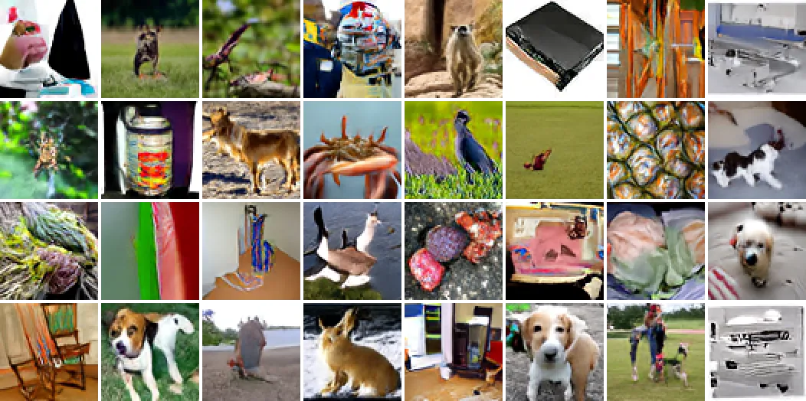
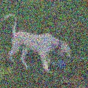
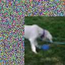
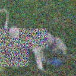
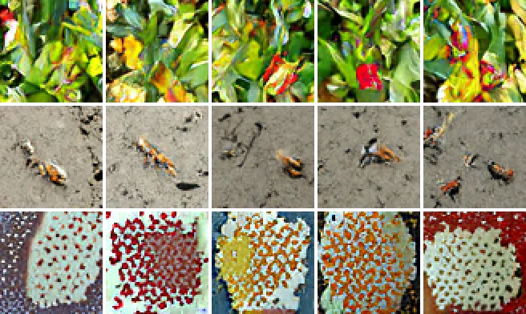
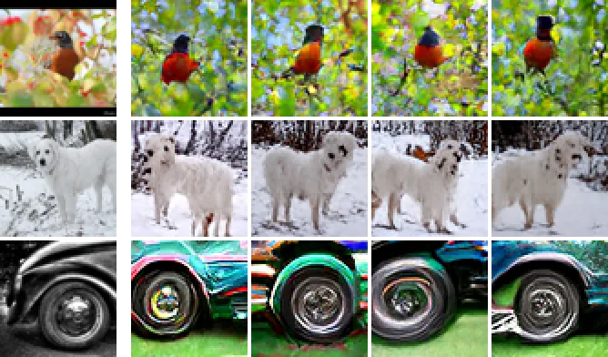
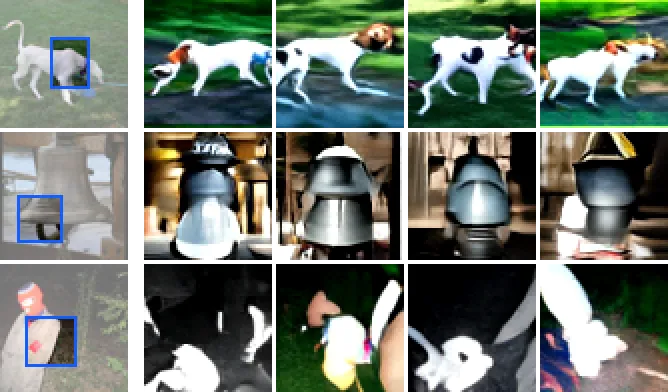
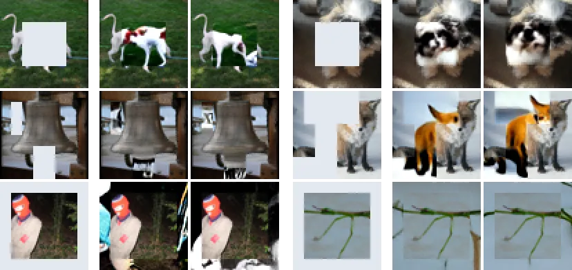

<style>
    :root { --dim: 0.08; --rep: #2563eb; --emb: #7c3aed; --pix: #b45309; --sl: #475569; --rep-f: #eff6ff; --emb-f: #f5f3ff; --pix-f: #fffbeb; --sl-f: #f1f5f9; --grid: #ececef; --nz0: #ffffff; --nz1: #9ca3af; }
    @media (prefers-color-scheme: dark) {
        :root { --dim: 0.12; --rep: #60a5fa; --emb: #a78bfa; --pix: #fbbf24; --sl: #94a3b8; --rep-f: rgba(96, 165, 250, 0.14); --emb-f: rgba(167, 139, 250, 0.16); --pix-f: rgba(251, 191, 36, 0.13); --sl-f: rgba(148, 163, 184, 0.14); --grid: #222225; --nz0: #2c2c2f; --nz1: #d4d4d8; }
    }
    .dem-media { margin-bottom: 16px; }
    .dem-media img { display: block; width: 100%; height: auto; }
    .dem-fig { margin-block: 0 48px; }
    .dem-fig > figcaption, main .caption { margin: 0; }
    main h2 { margin-bottom: 12px; }
    .dem-svg { display: block; width: 100%; height: auto; min-width: 540px; }
    .dem-svg.dem-fit { min-width: 0; max-width: 560px; margin: 0 auto; }
    .dem-svg.dem-fit .lb { font-size: 14px; }
    .dem-svg text { font-family: var(--font); font-size: 15px; fill: var(--text); }
    .dem-svg .lb, .dem-svg .tick { font-size: 13px; fill: var(--muted); }
    .dem-svg .strong { fill: var(--text); font-weight: 600; }
    .dem-svg .sym { font-size: 20px; font-style: italic; }
    .dem-svg .sub { font-size: 12px; }
    .dem-svg .net { fill: var(--surface); stroke: var(--border); }
    .dem-svg .net-t { font-size: 17px; font-weight: 600; }
    .dem-svg .nd { fill: var(--bg); stroke-width: 2; }
    .dem-svg .nd-gen { stroke: var(--emb); }
    .dem-svg.dem-plane { min-width: 460px; }
    .dem-svg .ln { fill: none; stroke-width: 2; }
    .dem-svg .ln.enc { stroke: var(--rep); } .dem-svg .ln.gen { stroke: var(--emb); } .dem-svg .ln.dec { stroke: var(--pix); }
    .dem-svg .ahd { fill: var(--muted); }
    .dem-svg .nz0 { stop-color: var(--nz0); } .dem-svg .nz1 { stop-color: var(--nz1); }
    .dem-svg .grid { stroke: var(--grid); }
    .dem-svg .axis { stroke: var(--muted); }
    .dem-svg .ax { font-size: 13px; fill: var(--text); }
    .dem-svg .pt { fill: var(--muted); opacity: 0.7; }
    .dem-svg .pt-ours { fill: var(--rep); }
    .dem-svg .pt-ours-open { fill: var(--bg); stroke: var(--rep); stroke-width: 2; }
    .dem-svg .pt-open { fill: var(--bg); stroke: var(--muted); stroke-width: 2; }
    .dem-svg .lab.lab-rep { fill: var(--rep); }
    .dem-svg .lab { font-size: 13px; fill: var(--muted); }
    .dem-svg .lab-ours { font-size: 15px; font-weight: 600; fill: var(--rep); }
    .dem-svg .pt-g:hover .pt { opacity: 1; fill: var(--text); }
    .dem-svg .lvl { font-size: 13px; font-weight: 600; }
    .dem-svg .lvl.emb, .dem-svg .sch-t.emb { fill: var(--emb); }
    .dem-svg .lvl.pix, .dem-svg .sch-t.pix { fill: var(--pix); }
    .dem-svg .sch-t { font-weight: 600; }
    .dem-svg .sch.emb { fill: var(--emb); fill-opacity: 0.18; stroke: var(--emb); stroke-width: 1.5; }
    .dem-svg .sch.pix { fill: var(--pix); fill-opacity: 0.18; stroke: var(--pix); stroke-width: 1.5; }
    .dem-svg .mdn { stroke-width: 1; stroke-dasharray: 3 3; }
    .dem-svg .mdn.emb { stroke: var(--emb); } .dem-svg .mdn.pix { stroke: var(--pix); }
    .dem-svg.dem-copy { max-width: 420px; }
    /* Tau slider: the copy is solid below full noise, dashed and muted at exactly 1. */
    #dem-tau { --thumb: 28px; }
    .dem-tau-wrap { position: relative; max-width: 420px; margin: 0 auto; }
    #dem-tau[data-full] .cp-box, #dem-tau[data-full] .cp-ln { stroke: var(--muted); stroke-dasharray: 4 3; }
    .dem-tau-ctl { max-width: 420px; margin: 8px auto 0; }
    .dem-tau-ctl[hidden] { display: none; }
    #dem-tau-r { display: block; width: 100%; height: 44px; margin: 0; padding: 0; background: none; -webkit-appearance: none; appearance: none; cursor: pointer; }
    #dem-tau-r::-webkit-slider-runnable-track { height: 8px; background: linear-gradient(90deg, var(--nz0), var(--nz1)); box-shadow: 0 0 0 1px var(--border); }
    #dem-tau-r::-moz-range-track { height: 8px; background: linear-gradient(90deg, var(--nz0), var(--nz1)); box-shadow: 0 0 0 1px var(--border); }
    #dem-tau-r::-webkit-slider-thumb { -webkit-appearance: none; width: var(--thumb); height: var(--thumb); margin-top: calc((8px - var(--thumb)) / 2); border: 0; border-radius: 0; background: var(--text); }
    #dem-tau-r::-moz-range-thumb { width: var(--thumb); height: var(--thumb); border: 0; border-radius: 0; background: var(--text); }
    #dem-tau-r:focus { outline: none; }
    #dem-tau-r:focus-visible::-webkit-slider-thumb { outline: 2px solid var(--rep); outline-offset: 2px; }
    #dem-tau-r:focus-visible::-moz-range-thumb { outline: 2px solid var(--rep); outline-offset: 2px; }
    .dem-tau-scale { position: relative; height: 1.5em; color: var(--muted); font-size: var(--text-micro); line-height: 1.5; }
    .dem-tau-scale span { position: absolute; top: 0; white-space: nowrap; }
    .dem-tau-scale .s0 { left: 0; } .dem-tau-scale .s1 { right: 0; }
    .dem-tau-scale i { position: absolute; top: -14px; bottom: 100%; width: 1px; height: 10px; left: calc(var(--thumb) / 2 + 0.95 * (100% - var(--thumb))); background: var(--muted); }
    .dem-tau-scale .med { right: calc(100% - (var(--thumb) / 2 + 0.95 * (100% - var(--thumb)))); }
    .dem-tau-line { max-width: 420px; min-height: 3em; margin: 8px auto 0; color: var(--muted); font-size: var(--text-secondary); line-height: 1.5; }
    /* Phones: the stacked method figures (.only-phone) replace the wide ones. */
    .dem-svg--phone { min-width: 0; max-width: 480px; margin: 0 auto; }
    .dem-svg--phone .lb { font-size: 13px; }
    .dem-svg--phone .net-t { font-size: 16px; }
    /* Training and inference figures: pastel boxes with a 600-level outline. Blue is the network and its embeddings, violet the embedding denoiser, amber pixels, slate the teacher and noise. */
    main h3 { margin-block: 40px 8px; font-size: var(--text-lede); font-weight: 600; }
    .dem-flow .bx { stroke-width: 1.5; }
    .dem-flow .bx.rep { fill: var(--rep-f); stroke: var(--rep); } .dem-flow .bx.emb { fill: var(--emb-f); stroke: var(--emb); }
    .dem-flow .bx.pix { fill: var(--pix-f); stroke: var(--pix); } .dem-flow .bx.sl { fill: var(--sl-f); stroke: var(--sl); }
    .dem-flow .bx.dash, .dem-flow .ln.dash { stroke-dasharray: 5 4; }
    .dem-flow .bt { font-size: 15px; font-weight: 600; fill: var(--text); }
    .dem-flow .sm { font-size: 12px; fill: var(--muted); }
    .dem-flow .strong { fill: var(--text); font-weight: 600; }
    .dem-flow .hd { font-size: 14px; font-weight: 600; fill: var(--text); }
    .dem-flow .role { font-size: 13px; font-weight: 600; }
    .dem-flow .t-rep { fill: var(--rep); } .dem-flow .t-emb { fill: var(--emb); } .dem-flow .t-pix { fill: var(--pix); } .dem-flow .t-sl { fill: var(--sl); }
    .dem-flow .ln.rep { stroke: var(--rep); } .dem-flow .ln.emb { stroke: var(--emb); } .dem-flow .ln.pix { stroke: var(--pix); } .dem-flow .ln.sl { stroke: var(--sl); }
    .dem-flow .chip .cb { fill: var(--bg); stroke-width: 1.5; }
    .dem-flow .chip.rep .cb { stroke: var(--rep); } .dem-flow .chip.rep .bars { fill: var(--rep); }
    .dem-flow .chip.emb .cb { stroke: var(--emb); } .dem-flow .chip.emb .bars { fill: var(--emb); }
    .dem-flow .chip.sl .cb { stroke: var(--sl); } .dem-flow .chip.sl .bars { fill: var(--sl); }
    .dem-flow .chip.nz .cb { stroke-dasharray: 3 2; } .dem-flow .chip.nz .bars { fill: var(--nz1); }
    .dem-flow .tf { fill: none; stroke-width: 2; } .dem-flow .tf.pix { stroke: var(--pix); }
    .dem-flow .tf.void { fill: var(--surface); stroke: var(--sl); stroke-width: 1.5; stroke-dasharray: 4 3; }
    .dem-flow .pl { fill: var(--bg); stroke: var(--sl); stroke-width: 1.5; } .dem-flow .pl-x { stroke: var(--sl); stroke-width: 1.5; }
    .dem-flow .jn { fill: var(--sl); }
    .dem-svg.dem-flow { min-width: 0; }
    .dem-svg--phone.dem-flow .bt { font-size: 13px; }
    .dem-flow .dfill { fill: var(--emb); fill-opacity: 0.12; } .dem-flow .dline { fill: none; stroke: var(--emb); stroke-width: 1.5; }
    .dem-flow .dbase { stroke: var(--sl); stroke-width: 1; } .dem-flow .dtick { stroke: var(--emb); stroke-width: 1; } .dem-flow .dot { fill: var(--emb); stroke: var(--bg); stroke-width: 1.5; }
    .dem-flow .chip.nv .cb { stroke: var(--sl); stroke-dasharray: 3 2; } .dem-flow .chip.nv .bars { fill: var(--sl); } .dem-flow .zl { stroke: var(--sl); stroke-opacity: 0.35; stroke-width: 1; }
    /* Task buttons: .u parts dim outside their tasks, .v parts show only in theirs. Without JS everything stays lit. */
    .dem-flow .u { transition: opacity 0.2s; }
    @media (prefers-reduced-motion: reduce) { .dem-flow .u { transition: none; } }
    .dem-btnfig[data-task="emb"] .u:not(.on-emb), .dem-btnfig[data-task="pix"] .u:not(.on-pix), .dem-btnfig[data-task="rep"] .u:not(.on-rep),
    .dem-btnfig[data-task="gen"] .u:not(.on-gen), .dem-btnfig[data-task="cmp"] .u:not(.on-cmp) { opacity: var(--dim); }
    .dem-btnfig[data-task="rep"] .v:not(.in-rep), .dem-btnfig[data-task="gen"] .v:not(.in-gen), .dem-btnfig[data-task="cmp"] .v:not(.in-cmp) { display: none; }
    .dem-btns { margin-block: 0 12px; }
    /* Phone figures: two type sizes (11 px labels, 14 px titles), see the layout comment in the generator. */
    .dem-svg--phone.dem-flow:not(.dem-copy) :is(.sm, .lb, .pl1) { font-size: 11px; }
    .dem-svg--phone.dem-flow:not(.dem-copy) :is(.bt, .steplab, .mth) { font-size: 13px; } .dem-svg--phone.dem-flow:not(.dem-copy) .msub { font-size: 11px; }
    @media (max-width: 767px) {
        .dem-long { display: none; }
        .dem-btns { flex-wrap: nowrap; }
        #dem-train .pv-emb, #dem-train .pv-pix, #dem-train[data-task="emb"] .pv-all, #dem-train[data-task="pix"] .pv-all { display: none; }
        #dem-train[data-task="emb"] .pv-emb, #dem-train[data-task="pix"] .pv-pix { display: block; }
    }
    .dem-task-text { min-height: 3em; }
    /* Generate and Complete play two passes in a loop (JS sets data-phase): a sample is drawn, travels to the backbone, then the pixels are drawn. */
    .dem-flow .tok { fill: var(--emb); opacity: 0; }
    /* One input slot: the view (pass 1) and the noise image (pass 2) stack when still, and crossfade in the loop. */
    .dem-flow .faint { opacity: 0.45; }
    .dem-btnfig:is([data-phase="a"], [data-phase="b"], [data-phase="c"], [data-phase="d"]) .dem-flow .slab.l2,
    .dem-btnfig:is([data-phase="e"], [data-phase="f"]) .dem-flow .slab.l1 { display: none; }
    .dem-flow .pbg { fill: var(--bg); }
    .dem-flow .steplab { font-size: 19px; font-weight: 700; } .dem-svg--phone.dem-flow .steplab { font-size: 13px; }
    .dem-flow .s0 { font-size: 11px; } .dem-flow .slab { display: none; }
    .dem-btnfig[data-phase] .dem-flow .s0 { display: none; } .dem-btnfig[data-phase] .dem-flow .slab { display: inline; }
    .dem-btnfig[data-phase] :is(.s1, .s2, .blk, .s2 image) { transition: opacity 0.4s, transform 0.4s; }
    .dem-btnfig[data-phase] .s2 image { transform: translate(-10px, -10px); }
    .dem-btnfig:is([data-phase="a"], [data-phase="b"], [data-phase="c"], [data-phase="d"]) .s2,
    .dem-btnfig:is([data-phase="e"], [data-phase="f"]) .s1 { opacity: 0; }
    .dem-btnfig[data-task="gen"]:is([data-phase="a"], [data-phase="b"], [data-phase="c"], [data-phase="d"]) .blk { opacity: var(--dim); }
    /* The heads sit on the block's right edge and are drawn after it with an opaque fill, as in the paper's Figure 2. */
    .dem-flow .bx.rep.h100 { fill: #dbeafe; } .dem-flow .bx.pix.h100 { fill: #fef3c7; }
    @media (prefers-color-scheme: dark) { .dem-flow .bx.rep.h100 { fill: #1c2f4f; } .dem-flow .bx.pix.h100 { fill: #3d3115; } }
    .dem-flow .vchip .cb { fill: var(--bg); stroke-width: 1.5; } .dem-flow .vchip.sl .cb { stroke: var(--sl); } .dem-flow .vchip.sl .cells { fill: var(--sl); }
    .dem-flow .vchip.rep .cb { stroke: var(--rep); } .dem-flow .vchip.rep .cells { fill: var(--rep); } .dem-flow .vchip.emb .cb { stroke: var(--emb); } .dem-flow .vchip.emb .cells { fill: var(--emb); }
    .dem-flow .vchip.nz .cb { stroke: var(--sl); stroke-dasharray: 3 2; } .dem-flow .vchip.nz .cells { fill: var(--sl); }
    .dem-flow .mth { font-family: "Times New Roman", Times, serif; font-style: italic; font-size: 16px; fill: var(--text); } .dem-flow .msub { font-size: 11px; }
    .dem-btnfig[data-phase] :is(.p1, .p2, .pdist, .proute, .head, .kimg, .dot, .dtick, .tok) { transition: opacity 0.4s; }
    .dem-btnfig[data-phase] .k1 { transition-delay: 0.2s; } .dem-btnfig[data-phase] .k2 { transition-delay: 0.4s; }
    .dem-btnfig[data-phase="a"] .pdist { opacity: 0; }
    .dem-btnfig:is([data-phase="a"], [data-phase="b"]) :is(.dot, .dtick) { opacity: 0; }
    .dem-btnfig:is([data-phase="a"], [data-phase="b"], [data-phase="c"]) .proute,
    .dem-btnfig:is([data-phase="a"], [data-phase="b"], [data-phase="c"], [data-phase="d"]) :is(.p2, .hpix) { opacity: var(--dim); }
    .dem-btnfig:is([data-phase="a"], [data-phase="b"], [data-phase="c"], [data-phase="d"]) .kimg { opacity: 0; }
    .dem-btnfig[data-phase="d"] .tok { opacity: 1; }
    .dem-btnfig[data-phase="e"] :is(.p1, .pdist, .hemb) { opacity: var(--dim); }
    /* Noise-map views: one column per view, its noise map above it. */
    .dem-views { display: grid; grid-template-columns: repeat(5, 1fr); gap: 12px; max-width: 680px; margin: 0 auto; }
    .dem-view { margin: 0; text-align: center; font-size: var(--text-caption); line-height: 1.3; }
    .dem-view figcaption { display: flex; flex-direction: column; justify-content: flex-end; min-height: 2.6em; margin-block: 0 6px; color: var(--text); font-size: inherit; line-height: 1.3; }
    .dem-view figcaption span { display: block; }
    .dem-role { color: var(--muted); }
    .dem-role.rep { color: var(--rep); font-weight: 600; } .dem-role.sl { color: var(--sl); font-weight: 600; } .dem-role.pix { color: var(--pix); font-weight: 600; }
    .dem-view .dem-map { display: block; width: 44%; margin: 0 auto 10px; outline: 1px solid var(--border); }
    .dem-view img { display: block; width: 100%; height: auto; image-rendering: pixelated; }
    .dem-legend { display: flex; align-items: center; justify-content: center; gap: 8px; margin-block: 16px 0; color: var(--muted); font-size: var(--text-caption); }
    .dem-legend i { width: 96px; height: 8px; outline: 1px solid var(--border); background: linear-gradient(90deg, #fff, #1e293b); }
    /* Paired image panels: side by side on large screens, stacked on phones. */
    .dem-pair { display: grid; grid-template-columns: 656fr 668fr; gap: 32px; align-items: start; }
    .dem-pair.even { grid-template-columns: 668fr 828fr; }
    .dem-pair img { display: block; width: 100%; height: auto; }
    .dem-pair p { margin-block: 8px 0; color: var(--muted); font-size: var(--text-secondary); line-height: 1.5; }
    @media (max-width: 640px) {
        .dem-pair, .dem-pair.even { grid-template-columns: 1fr; gap: 24px; }
        .dem-views { gap: 6px; }
        .dem-view { font-size: var(--text-micro); }
        .dem-view figcaption { min-height: 5.2em; }
        .dem-svg.dem-plane { min-width: 0; }
        #dem-tau { --thumb: 32px; }
        .dem-plane .lab, .dem-plane .tick { font-size: 21px; }
        .dem-plane .ax { font-size: 18px; }
        .dem-plane .lab-ours { font-size: 24px; }
        .dem-svg.dem-fit .lb { font-size: 15px; }
    }
    /* How DEM was built: the speedrun frontier, one panel per sampler. */
    #dem-front[data-set="adopted"] :is(.fr-earlier, .fr-cap-earlier), #dem-front[data-set="earlier"] :is(.fr-adopted, .fr-cap-adopted, .fr-k-fail) { display: none; }
    .dem-front .fr-pt { fill: var(--sl); opacity: 0.32; }
    .dem-front .fr-front { fill: none; stroke: var(--rep); stroke-width: 1.5; opacity: 0.3; }
    .dem-front .fr-pair { stroke: var(--rep); stroke-width: 1.5; opacity: 0.35; }
    .dem-front .fr-lead { stroke: var(--muted); stroke-width: 1; }
    .dem-front .fr-path { fill: none; stroke: var(--rep); stroke-width: 1.5; stroke-dasharray: 2 3; }
    .dem-front .fr-rec { fill: var(--bg); stroke: var(--rep); stroke-width: 2; }
    .dem-front .fr-rec.fail { stroke: var(--pix); }
    .dem-front .fr-star { fill: var(--rep); stroke: var(--bg); stroke-width: 1; }
    .dem-front .fr-lab { paint-order: stroke; stroke: var(--bg); stroke-width: 4px; stroke-linejoin: round; }
    .dem-front .lab { font-size: 14px; fill: var(--muted); }
    .dem-front .lab-rep { fill: var(--rep); font-weight: 600; }
    #speedrun > .caption { margin-bottom: 32px; }
    #speedrun :is(td, th):not(:first-child) { white-space: nowrap; }
    .fr-key { display: flex; flex-wrap: wrap; justify-content: center; gap: 4px 18px; margin-block: 0 12px; color: var(--muted); font-size: var(--text-secondary); }
    .fr-key span { display: inline-flex; align-items: center; gap: 6px; }
    .fr-key i { display: inline-block; width: 10px; height: 10px; border-radius: 50%; }
    .fr-key .k-pt { background: var(--sl); opacity: 0.4; }
    .fr-key .k-rec { border: 2px solid var(--rep); }
    .fr-key .k-fail { border: 2px solid var(--pix); }
    .fr-key .k-path { width: 18px; height: 0; border-radius: 0; border-top: 2px dotted var(--rep); }
    .fr-key .k-front { width: 18px; height: 0; border-radius: 0; border-top: 2px solid var(--rep); opacity: 0.4; }
    @media (max-width: 640px) {
        .dem-front .fr-pt { r: 6px; }
        .dem-front .fr-rec { r: 8px; stroke-width: 3; }
        .dem-front .fr-star { transform-box: fill-box; transform-origin: center; transform: scale(1.8); }
        .dem-front :is(.fr-path, .fr-pair, .fr-front) { stroke-width: 2.5; }
        .dem-front .lab { font-size: 21px; }
    }
</style>

<section>
    <figure class="dem-fig">
        <div class="dem-media wide"></div>
        <figcaption>Images generated without labels by one network trained only with denoising. All samples on this page are uncurated.</figcaption>
    </figure>
</section>

<section id="tldr">
    <p class="tldr"><strong>TL;DR:</strong> Representation learning and image generation usually need separate models. DEM does both in one network, trained only with view-conditioned denoising. Its linear probe matches DINOv2, and it generates images without labels.</p>
</section>
<section class="intro">
    <p>Representations from generative models still trail those from self-supervised methods. A representation trained to reproduce an image has to encode its <em>stochastic details</em> too, such as its exact colors and framing, but recognition benefits from ignoring them. Denoising embedding models (DEMs) keep high-level semantics and low-level stochastic details in different places inside one network. A DEM first denoises an image's embedding given another view of the same image, and then it denoises the pixels given that embedding. The embedding learns what the views have in common, and the pixel level fills in the rest of the detail.</p>
    <p>We train a single Transformer on ImageNet-100 in pixel space, with no <a href="https://arxiv.org/abs/2112.10752">latent tokenizer</a> and no pretrained encoder. Its linear probe accuracy matches DINOv2 (77.2% against 76.2%), and the same network generates images without labels. Learning to generate also improves the representation. At 100k iterations, removing the pixel loss drops the probe from 76.1% to 72.5%.</p>
</section>

<section id="method">
    <h2>Diffusion at two levels</h2>
    <p>DEM is one diffusion model that works at two levels. At the embedding level, it learns a new task, view-conditioned denoising. Given one view of an image, the network denoises the embedding of another view of the same image. The task is generative, since many embeddings can fit one view. It also teaches a representation, since the embedding can be recovered only from what the two views share. At the pixel level, DEM generates the image from this embedding. The embedding is the coarsest view of the image, so this step is view-conditioned denoising too.</p>
    <p>The embedding is also DEM's semantic latent. Latent diffusion models follow the same order, a latent first and then the image, but they take their latent from a separately trained autoencoder. DEM learns its latent inside the same network, from views of the image. Both levels share one backbone, a Vision Transformer, and each level adds its own small head on top (the embedding denoiser and the pixel head).</p>
    <h3>Training</h3>
    <p>Each training step uses three views of one image, a clean view, a noised view and a noised image. The teacher, an <a href="https://arxiv.org/abs/2104.14294">exponential moving average (EMA)</a> of the network, embeds the clean view into the target. At the embedding level, the backbone reads the noised view and outputs the student embedding. The embedding denoiser takes this embedding together with a noisy copy of the target and recovers the target (loss 1). At the pixel level, the backbone reads the noised image with the target as its condition, and the pixel head predicts the original image (loss 2).</p>
    <figure class="dem-fig dem-btnfig" id="dem-train">
        <div class="tabs dem-btns" role="group" aria-label="Training levels" hidden>
            <button type="button" class="btn" data-task="" aria-pressed="true">Both<span class="dem-long"> levels</span></button>
            <button type="button" class="btn" data-task="emb" aria-pressed="false">Embedding<span class="dem-long"> level</span></button>
            <button type="button" class="btn" data-task="pix" aria-pressed="false">Pixel<span class="dem-long"> level</span></button>
        </div>
        <div class="dem-media wide only-desk"><svg class="dem-svg dem-flow" viewBox="0 0 736 440" role="img" aria-labelledby="tr-t">
<title id="tr-t">One training step. One shared backbone carries two modules, the embedding denoiser and the pixel head. The teacher, an EMA copy of the network, embeds the clean view into the target. Embedding level: the backbone reads the noised view, and the embedding denoiser predicts the target from a noisy copy of it (loss 1). Pixel level: the backbone reads the noised image with the target as its condition, and the pixel head predicts the image (loss 2).</title>
<defs><marker id="ah-tr" viewBox="0 0 10 10" refX="9" refY="5" markerWidth="7" markerHeight="7" orient="auto-start-reverse"><path d="M0 0L10 5L0 10z" class="ahd"/></marker></defs>
<g class="u on-emb on-pix"><image href="view_clean.webp" x="56" y="24" width="64" height="64" preserveAspectRatio="none"/><text class="mth" x="44" y="61" text-anchor="end">x</text><text class="sm" x="88" y="104" text-anchor="middle">clean view</text><path class="ln sl" d="M124 56H174" marker-end="url(#ah-tr)"/><rect class="bx sl dash" x="176" y="34" width="160" height="44" rx="6"/><text class="bt" x="256.0" y="61.0" text-anchor="middle">teacher</text><path class="ln sl dash" d="M256 136V80" marker-end="url(#ah-tr)"/><text class="sm" x="264" y="112" text-anchor="start">EMA</text><path class="ln sl" d="M340 56H382" marker-end="url(#ah-tr)"/><g class="vchip sl"><rect class="cb" x="384.0" y="36.0" width="16" height="40"/><g class="cells"><rect x="387.0" y="39.0" width="10" height="7.0" fill-opacity="0.82"/><rect x="387.0" y="48.0" width="10" height="7.0" fill-opacity="0.47"/><rect x="387.0" y="57.0" width="10" height="7.0" fill-opacity="0.71"/><rect x="387.0" y="66.0" width="10" height="7.0" fill-opacity="0.33"/></g></g><text class="mth" x="392" y="94" text-anchor="middle">z</text><text class="sm strong" x="392" y="30" text-anchor="middle">target</text><rect class="bx rep" x="176" y="136" width="160" height="224" rx="6"/><text class="bt" x="256.0" y="245.0" text-anchor="middle">Vision</text><text class="bt" x="256.0" y="262.0" text-anchor="middle">Transformer</text><text class="mth" x="256" y="288" text-anchor="middle">f<tspan class="msub" dy="4">θ</tspan></text></g>
<g class="u on-emb"><path class="ln sl" d="M402 56H429" marker-end="url(#ah-tr)"/><circle class="pl" cx="440" cy="56" r="10"/><path class="pl-x" d="M435 56H445M440 51V61"/><g class="vchip nz"><rect class="cb" x="432.0" y="92.0" width="16" height="40"/><g class="cells"><rect x="435.0" y="95.0" width="10" height="7.0" fill-opacity="0.71"/><rect x="435.0" y="104.0" width="10" height="7.0" fill-opacity="0.12"/><rect x="435.0" y="113.0" width="10" height="7.0" fill-opacity="0.33"/><rect x="435.0" y="122.0" width="10" height="7.0" fill-opacity="0.58"/></g></g><path class="ln sl" d="M440 92V67" marker-end="url(#ah-tr)"/><text class="mth" x="424" y="117" text-anchor="end">ε</text><text class="sm" x="452" y="117" text-anchor="start">add noise</text><path class="ln emb" d="M451 56H520V158" marker-end="url(#ah-tr)"/><text class="mth" x="530" y="108" text-anchor="start">z<tspan class="msub" dy="4">τ</tspan></text><text class="sm strong" x="530" y="90" text-anchor="start">noisy target</text><image href="view_all.webp" x="56" y="152" width="64" height="64" preserveAspectRatio="none"/><text class="mth" x="44" y="189" text-anchor="end">x′<tspan class="msub" dy="4">t</tspan></text><text class="sm" x="88" y="232" text-anchor="middle">noised view</text><path class="ln rep" d="M124 184H174" marker-end="url(#ah-tr)"/><g class="u on-emb"><rect class="bx rep h100" x="308" y="160" width="45" height="47" rx="6"/><text class="bt" x="330.5" y="188.5" text-anchor="middle"></text></g><text class="mth" x="330" y="189" text-anchor="middle">g<tspan class="msub" dy="4">θ</tspan></text><path class="ln rep" d="M355 184H382" marker-end="url(#ah-tr)"/><g class="vchip rep"><rect class="cb" x="384.0" y="164.0" width="16" height="40"/><g class="cells"><rect x="387.0" y="167.0" width="10" height="7.0" fill-opacity="0.77"/><rect x="387.0" y="176.0" width="10" height="7.0" fill-opacity="0.53"/><rect x="387.0" y="185.0" width="10" height="7.0" fill-opacity="0.68"/><rect x="387.0" y="194.0" width="10" height="7.0" fill-opacity="0.38"/></g></g><text class="mth" x="392" y="222" text-anchor="middle">c</text><text class="sm" x="370" y="238" text-anchor="start">student's embedding</text><path class="ln rep" d="M402 184H462" marker-end="url(#ah-tr)"/><g class="u on-emb head hemb"><rect class="bx emb" x="464" y="160" width="112" height="48" rx="6"/><text class="bt" x="520.0" y="181.0" text-anchor="middle">embedding</text><text class="bt" x="520.0" y="198.0" text-anchor="middle">denoiser</text></g><path class="ln emb" d="M578 184H606" marker-end="url(#ah-tr)"/><g class="vchip emb"><rect class="cb" x="608.0" y="164.0" width="16" height="40"/><g class="cells"><rect x="611.0" y="167.0" width="10" height="7.0" fill-opacity="0.81"/><rect x="611.0" y="176.0" width="10" height="7.0" fill-opacity="0.49"/><rect x="611.0" y="185.0" width="10" height="7.0" fill-opacity="0.69"/><rect x="611.0" y="194.0" width="10" height="7.0" fill-opacity="0.35"/></g></g><text class="mth" x="616" y="156" text-anchor="middle">ẑ</text><text class="sm strong" x="616" y="138" text-anchor="middle">denoised target</text><path class="ln sl dash" d="M626 184H640"/><rect class="bx emb" x="642" y="162" width="84" height="44" rx="6"/><text class="bt t-emb" x="684.0" y="182.0" text-anchor="middle">Loss 1</text><text class="sm" x="684.0" y="198.0" text-anchor="middle">against z</text></g>
<g class="u on-pix"><image href="view_noise.webp" x="56" y="280" width="64" height="64" preserveAspectRatio="none"/><text class="mth" x="44" y="317" text-anchor="end">x̄<tspan class="msub" dy="4">t</tspan></text><text class="sm" x="88" y="360" text-anchor="middle">noised image</text><path class="ln pix" d="M124 312H174" marker-end="url(#ah-tr)"/><g class="u on-pix head hpix"><rect class="bx pix h100" x="308" y="288" width="45" height="47" rx="6"/><text class="bt" x="330.5" y="316.5" text-anchor="middle"></text></g><text class="mth" x="330" y="317" text-anchor="middle">φ</text><path class="ln pix" d="M355 312H382" marker-end="url(#ah-tr)"/><image href="tile_view.webp" x="384" y="280" width="64" height="64" preserveAspectRatio="none"/><text class="mth" x="416" y="364" text-anchor="middle">x̂</text><text class="sm strong" x="416" y="381" text-anchor="middle">denoised image</text><path class="ln sl dash" d="M452 312H470"/><rect class="bx pix" x="472" y="290" width="116" height="44" rx="6"/><text class="bt t-pix" x="530.0" y="310.0" text-anchor="middle">Loss 2</text><text class="sm" x="530.0" y="326.0" text-anchor="middle">against the image</text><g class="vchip sl"><rect class="cb" x="248.0" y="384.0" width="16" height="40"/><g class="cells"><rect x="251.0" y="387.0" width="10" height="7.0" fill-opacity="0.82"/><rect x="251.0" y="396.0" width="10" height="7.0" fill-opacity="0.47"/><rect x="251.0" y="405.0" width="10" height="7.0" fill-opacity="0.71"/><rect x="251.0" y="414.0" width="10" height="7.0" fill-opacity="0.33"/></g></g><path class="ln sl" d="M256 382V362" marker-end="url(#ah-tr)"/><text class="mth" x="240" y="409" text-anchor="end">z</text><text class="sm" x="272" y="409" text-anchor="start">target, as condition</text></g>
</svg></div>
        <!-- Phone figures (training and inference) share one grid. Base unit U = 8 (viewBox 360 wide, about 1 px per unit at 390 px).
             Margins 2U, columns input 5U | 2U | network 13U | 1U | chip 5U | 1U | module 14U (module = output 5U + 1U + loss badge 8U).
             Tile 5U, embedding chip 1.5U x 4U, head 3U x 3U (centred 0.5U inside the network edge), teacher box 4U high, two-line boxes 5U (denoiser, loss badges).
             Row pitch 8U = tile + 3U; elements centre on their row line, labels 1U below (two lines where one would cross the network edge). Network height = rows x 8U - 1U, with one head-free row for its title.
             After the top row (teacher, or noise) add 2U. Height = 2U + visible rows x 8U + 2U + 1U, so a hidden level drops its rows. Type 11 px labels, 13 px titles; strokes 2 (lines) and 1.5 (outlines). -->
        <div class="dem-media wide only-phone"><svg class="dem-svg dem-svg--phone dem-flow pv pv-all" viewBox="0 0 360 360" role="img" aria-labelledby="t-ah-tpall">
<title id="t-ah-tpall">One training step. One shared backbone carries two modules, the embedding denoiser and the pixel head. The teacher, an EMA copy of the network, embeds the clean view into the target. Embedding level: the backbone reads the noised view, and the embedding denoiser predicts the target from a noisy copy of it (loss 1). Pixel level: the backbone reads the noised image with the target as its condition, and the pixel head predicts the image (loss 2).</title>
<defs><marker id="ah-tpall" viewBox="0 0 10 10" refX="9" refY="5" markerWidth="7" markerHeight="7" orient="auto-start-reverse"><path d="M0 0L10 5L0 10z" class="ahd"/></marker></defs>
<image href="view_clean.webp" x="16" y="16" width="40" height="40" preserveAspectRatio="none"/>
<text class="sm" x="36" y="73" text-anchor="middle">clean view</text>
<path class="ln sl" d="M58 36H70" marker-end="url(#ah-tpall)"/>
<rect class="bx sl dash" x="72" y="20" width="104" height="32" rx="6"/><text class="bt" x="124.0" y="41.0" text-anchor="middle">teacher</text>
<path class="ln sl dash" d="M96 88V54" marker-end="url(#ah-tpall)"/>
<path class="ln sl" d="M178 36H196" marker-end="url(#ah-tpall)"/>
<g class="vchip sl"><rect class="cb" x="198.0" y="20.0" width="12" height="32"/><g class="cells"><rect x="201.0" y="23.0" width="6" height="5.0" fill-opacity="0.82"/><rect x="201.0" y="30.0" width="6" height="5.0" fill-opacity="0.47"/><rect x="201.0" y="37.0" width="6" height="5.0" fill-opacity="0.71"/><rect x="201.0" y="44.0" width="6" height="5.0" fill-opacity="0.33"/></g></g>
<text class="sm strong" x="204" y="69" text-anchor="middle">target</text>
<rect class="bx rep" x="72" y="88" width="104" height="184" rx="6"/><text class="bt" x="124.0" y="177" text-anchor="middle">Vision</text><text class="bt" x="124.0" y="194" text-anchor="middle">Transformer</text>
<path class="ln sl" d="M210 36H242"/>
<circle class="pl" cx="252" cy="36" r="10"/><path class="pl-x" d="M247 36H257M252 31V41"/>
<g class="vchip nz"><rect class="cb" x="294.0" y="20.0" width="12" height="32"/><g class="cells"><rect x="297.0" y="23.0" width="6" height="5.0" fill-opacity="0.71"/><rect x="297.0" y="30.0" width="6" height="5.0" fill-opacity="0.12"/><rect x="297.0" y="37.0" width="6" height="5.0" fill-opacity="0.33"/><rect x="297.0" y="44.0" width="6" height="5.0" fill-opacity="0.58"/></g></g>
<text class="sm" x="310" y="40" text-anchor="start">noise</text>
<path class="ln sl" d="M294 36H264" marker-end="url(#ah-tpall)"/>
<path class="ln emb" d="M252 47V94" marker-end="url(#ah-tpall)"/>
<text class="sm strong" x="260" y="88" text-anchor="start">noisy target</text>
<image href="view_all.webp" x="16" y="96" width="40" height="40" preserveAspectRatio="none"/>
<text class="lb" x="36" y="153" text-anchor="middle">noised</text><text class="lb" x="36" y="165" text-anchor="middle">view</text>
<path class="ln rep" d="M58 116H70" marker-end="url(#ah-tpall)"/>
<rect class="bx rep h100" x="160" y="104" width="24" height="24" rx="6"/><text class="bt" x="172.0" y="121.0" text-anchor="middle"></text><text class="mth" x="172" y="121" text-anchor="middle">g</text>
<path class="ln rep" d="M184 116H196" marker-end="url(#ah-tpall)"/>
<g class="vchip rep"><rect class="cb" x="198.0" y="100.0" width="12" height="32"/><g class="cells"><rect x="201.0" y="103.0" width="6" height="5.0" fill-opacity="0.77"/><rect x="201.0" y="110.0" width="6" height="5.0" fill-opacity="0.53"/><rect x="201.0" y="117.0" width="6" height="5.0" fill-opacity="0.68"/><rect x="201.0" y="124.0" width="6" height="5.0" fill-opacity="0.38"/></g></g>
<text class="sm" x="204" y="149" text-anchor="middle">student</text>
<path class="ln rep" d="M210 116H230" marker-end="url(#ah-tpall)"/>
<rect class="bx emb" x="232" y="96" width="112" height="40" rx="6"/><text class="bt" x="288.0" y="113.0" text-anchor="middle">embedding</text><text class="bt" x="288.0" y="130.0" text-anchor="middle">denoiser</text>
<path class="ln emb" d="M252 136V162" marker-end="url(#ah-tpall)"/>
<g class="vchip emb"><rect class="cb" x="246.0" y="164.0" width="12" height="32"/><g class="cells"><rect x="249.0" y="167.0" width="6" height="5.0" fill-opacity="0.81"/><rect x="249.0" y="174.0" width="6" height="5.0" fill-opacity="0.49"/><rect x="249.0" y="181.0" width="6" height="5.0" fill-opacity="0.69"/><rect x="249.0" y="188.0" width="6" height="5.0" fill-opacity="0.35"/></g></g>
<text class="mth" x="240" y="185" text-anchor="end">ẑ</text>
<path class="ln sl dash" d="M258 180H280"/>
<rect class="bx emb" x="280" y="160" width="64" height="40" rx="6"/><text class="bt t-emb" x="312.0" y="177" text-anchor="middle">Loss 1</text><text class="sm" x="312.0" y="192" text-anchor="middle">vs. target</text>
<image href="view_noise.webp" x="16" y="224" width="40" height="40" preserveAspectRatio="none"/>
<text class="lb" x="36" y="281" text-anchor="middle">noised</text><text class="lb" x="36" y="293" text-anchor="middle">image</text>
<path class="ln pix" d="M58 244H70" marker-end="url(#ah-tpall)"/>
<rect class="bx pix h100" x="160" y="232" width="24" height="24" rx="6"/><text class="bt" x="172.0" y="249.0" text-anchor="middle"></text><text class="mth" x="172" y="249" text-anchor="middle">φ</text>
<path class="ln pix" d="M184 244H230" marker-end="url(#ah-tpall)"/>
<image href="tile_view.webp" x="232" y="224" width="40" height="40" preserveAspectRatio="none"/>
<text class="sm strong" x="252" y="281" text-anchor="middle">denoised image</text>
<path class="ln sl dash" d="M272 244H280"/>
<rect class="bx pix" x="280" y="224" width="64" height="40" rx="6"/><text class="bt t-pix" x="312.0" y="241" text-anchor="middle">Loss 2</text><text class="sm" x="312.0" y="256" text-anchor="middle">vs. image</text>
<g class="vchip sl"><rect class="cb" x="118.0" y="292.0" width="12" height="32"/><g class="cells"><rect x="121.0" y="295.0" width="6" height="5.0" fill-opacity="0.82"/><rect x="121.0" y="302.0" width="6" height="5.0" fill-opacity="0.47"/><rect x="121.0" y="309.0" width="6" height="5.0" fill-opacity="0.71"/><rect x="121.0" y="316.0" width="6" height="5.0" fill-opacity="0.33"/></g></g>
<path class="ln sl" d="M124 292V274" marker-end="url(#ah-tpall)"/>
<text class="sm" x="138" y="312" text-anchor="start">target, as condition</text>
</svg><svg class="dem-svg dem-svg--phone dem-flow pv pv-emb" viewBox="0 0 360 232" role="img" aria-labelledby="t-ah-tpemb">
<title id="t-ah-tpemb">One training step. One shared backbone carries two modules, the embedding denoiser and the pixel head. The teacher, an EMA copy of the network, embeds the clean view into the target. Embedding level: the backbone reads the noised view, and the embedding denoiser predicts the target from a noisy copy of it (loss 1). Pixel level: the backbone reads the noised image with the target as its condition, and the pixel head predicts the image (loss 2).</title>
<defs><marker id="ah-tpemb" viewBox="0 0 10 10" refX="9" refY="5" markerWidth="7" markerHeight="7" orient="auto-start-reverse"><path d="M0 0L10 5L0 10z" class="ahd"/></marker></defs>
<image href="view_clean.webp" x="16" y="16" width="40" height="40" preserveAspectRatio="none"/>
<text class="sm" x="36" y="73" text-anchor="middle">clean view</text>
<path class="ln sl" d="M58 36H70" marker-end="url(#ah-tpemb)"/>
<rect class="bx sl dash" x="72" y="20" width="104" height="32" rx="6"/><text class="bt" x="124.0" y="41.0" text-anchor="middle">teacher</text>
<path class="ln sl dash" d="M96 88V54" marker-end="url(#ah-tpemb)"/>
<path class="ln sl" d="M178 36H196" marker-end="url(#ah-tpemb)"/>
<g class="vchip sl"><rect class="cb" x="198.0" y="20.0" width="12" height="32"/><g class="cells"><rect x="201.0" y="23.0" width="6" height="5.0" fill-opacity="0.82"/><rect x="201.0" y="30.0" width="6" height="5.0" fill-opacity="0.47"/><rect x="201.0" y="37.0" width="6" height="5.0" fill-opacity="0.71"/><rect x="201.0" y="44.0" width="6" height="5.0" fill-opacity="0.33"/></g></g>
<text class="sm strong" x="204" y="69" text-anchor="middle">target</text>
<rect class="bx rep" x="72" y="88" width="104" height="120" rx="6"/><text class="bt" x="124.0" y="177" text-anchor="middle">Vision</text><text class="bt" x="124.0" y="194" text-anchor="middle">Transformer</text>
<path class="ln sl" d="M210 36H242"/>
<circle class="pl" cx="252" cy="36" r="10"/><path class="pl-x" d="M247 36H257M252 31V41"/>
<g class="vchip nz"><rect class="cb" x="294.0" y="20.0" width="12" height="32"/><g class="cells"><rect x="297.0" y="23.0" width="6" height="5.0" fill-opacity="0.71"/><rect x="297.0" y="30.0" width="6" height="5.0" fill-opacity="0.12"/><rect x="297.0" y="37.0" width="6" height="5.0" fill-opacity="0.33"/><rect x="297.0" y="44.0" width="6" height="5.0" fill-opacity="0.58"/></g></g>
<text class="sm" x="310" y="40" text-anchor="start">noise</text>
<path class="ln sl" d="M294 36H264" marker-end="url(#ah-tpemb)"/>
<path class="ln emb" d="M252 47V94" marker-end="url(#ah-tpemb)"/>
<text class="sm strong" x="260" y="88" text-anchor="start">noisy target</text>
<image href="view_all.webp" x="16" y="96" width="40" height="40" preserveAspectRatio="none"/>
<text class="lb" x="36" y="153" text-anchor="middle">noised</text><text class="lb" x="36" y="165" text-anchor="middle">view</text>
<path class="ln rep" d="M58 116H70" marker-end="url(#ah-tpemb)"/>
<rect class="bx rep h100" x="160" y="104" width="24" height="24" rx="6"/><text class="bt" x="172.0" y="121.0" text-anchor="middle"></text><text class="mth" x="172" y="121" text-anchor="middle">g</text>
<path class="ln rep" d="M184 116H196" marker-end="url(#ah-tpemb)"/>
<g class="vchip rep"><rect class="cb" x="198.0" y="100.0" width="12" height="32"/><g class="cells"><rect x="201.0" y="103.0" width="6" height="5.0" fill-opacity="0.77"/><rect x="201.0" y="110.0" width="6" height="5.0" fill-opacity="0.53"/><rect x="201.0" y="117.0" width="6" height="5.0" fill-opacity="0.68"/><rect x="201.0" y="124.0" width="6" height="5.0" fill-opacity="0.38"/></g></g>
<text class="sm" x="204" y="149" text-anchor="middle">student</text>
<path class="ln rep" d="M210 116H230" marker-end="url(#ah-tpemb)"/>
<rect class="bx emb" x="232" y="96" width="112" height="40" rx="6"/><text class="bt" x="288.0" y="113.0" text-anchor="middle">embedding</text><text class="bt" x="288.0" y="130.0" text-anchor="middle">denoiser</text>
<path class="ln emb" d="M252 136V162" marker-end="url(#ah-tpemb)"/>
<g class="vchip emb"><rect class="cb" x="246.0" y="164.0" width="12" height="32"/><g class="cells"><rect x="249.0" y="167.0" width="6" height="5.0" fill-opacity="0.81"/><rect x="249.0" y="174.0" width="6" height="5.0" fill-opacity="0.49"/><rect x="249.0" y="181.0" width="6" height="5.0" fill-opacity="0.69"/><rect x="249.0" y="188.0" width="6" height="5.0" fill-opacity="0.35"/></g></g>
<text class="mth" x="240" y="185" text-anchor="end">ẑ</text>
<path class="ln sl dash" d="M258 180H280"/>
<rect class="bx emb" x="280" y="160" width="64" height="40" rx="6"/><text class="bt t-emb" x="312.0" y="177" text-anchor="middle">Loss 1</text><text class="sm" x="312.0" y="192" text-anchor="middle">vs. target</text>
</svg><svg class="dem-svg dem-svg--phone dem-flow pv pv-pix" viewBox="0 0 360 296" role="img" aria-labelledby="t-ah-tppix">
<title id="t-ah-tppix">One training step. One shared backbone carries two modules, the embedding denoiser and the pixel head. The teacher, an EMA copy of the network, embeds the clean view into the target. Embedding level: the backbone reads the noised view, and the embedding denoiser predicts the target from a noisy copy of it (loss 1). Pixel level: the backbone reads the noised image with the target as its condition, and the pixel head predicts the image (loss 2).</title>
<defs><marker id="ah-tppix" viewBox="0 0 10 10" refX="9" refY="5" markerWidth="7" markerHeight="7" orient="auto-start-reverse"><path d="M0 0L10 5L0 10z" class="ahd"/></marker></defs>
<image href="view_clean.webp" x="16" y="16" width="40" height="40" preserveAspectRatio="none"/>
<text class="sm" x="36" y="73" text-anchor="middle">clean view</text>
<path class="ln sl" d="M58 36H70" marker-end="url(#ah-tppix)"/>
<rect class="bx sl dash" x="72" y="20" width="104" height="32" rx="6"/><text class="bt" x="124.0" y="41.0" text-anchor="middle">teacher</text>
<path class="ln sl dash" d="M96 88V54" marker-end="url(#ah-tppix)"/>
<path class="ln sl" d="M178 36H196" marker-end="url(#ah-tppix)"/>
<g class="vchip sl"><rect class="cb" x="198.0" y="20.0" width="12" height="32"/><g class="cells"><rect x="201.0" y="23.0" width="6" height="5.0" fill-opacity="0.82"/><rect x="201.0" y="30.0" width="6" height="5.0" fill-opacity="0.47"/><rect x="201.0" y="37.0" width="6" height="5.0" fill-opacity="0.71"/><rect x="201.0" y="44.0" width="6" height="5.0" fill-opacity="0.33"/></g></g>
<text class="sm strong" x="204" y="69" text-anchor="middle">target</text>
<rect class="bx rep" x="72" y="88" width="104" height="120" rx="6"/><text class="bt" x="124.0" y="177" text-anchor="middle">Vision</text><text class="bt" x="124.0" y="194" text-anchor="middle">Transformer</text>
<image href="view_noise.webp" x="16" y="96" width="40" height="40" preserveAspectRatio="none"/>
<text class="lb" x="36" y="153" text-anchor="middle">noised</text><text class="lb" x="36" y="165" text-anchor="middle">image</text>
<path class="ln pix" d="M58 116H70" marker-end="url(#ah-tppix)"/>
<rect class="bx pix h100" x="160" y="104" width="24" height="24" rx="6"/><text class="bt" x="172.0" y="121.0" text-anchor="middle"></text><text class="mth" x="172" y="121" text-anchor="middle">φ</text>
<path class="ln pix" d="M184 116H230" marker-end="url(#ah-tppix)"/>
<image href="tile_view.webp" x="232" y="96" width="40" height="40" preserveAspectRatio="none"/>
<text class="sm strong" x="252" y="153" text-anchor="middle">denoised image</text>
<path class="ln sl dash" d="M272 116H280"/>
<rect class="bx pix" x="280" y="96" width="64" height="40" rx="6"/><text class="bt t-pix" x="312.0" y="113" text-anchor="middle">Loss 2</text><text class="sm" x="312.0" y="128" text-anchor="middle">vs. image</text>
<g class="vchip sl"><rect class="cb" x="118.0" y="228.0" width="12" height="32"/><g class="cells"><rect x="121.0" y="231.0" width="6" height="5.0" fill-opacity="0.82"/><rect x="121.0" y="238.0" width="6" height="5.0" fill-opacity="0.47"/><rect x="121.0" y="245.0" width="6" height="5.0" fill-opacity="0.71"/><rect x="121.0" y="252.0" width="6" height="5.0" fill-opacity="0.33"/></g></g>
<path class="ln sl" d="M124 228V210" marker-end="url(#ah-tppix)"/>
<text class="sm" x="138" y="248" text-anchor="start">target, as condition</text>
</svg></div>
        <figcaption class="dem-task-text" aria-live="polite">One training step. The teacher embeds a clean view into the target z. The denoised ẑ is trained toward z (loss 1), and the denoised image x̂ toward the original image (loss 2).</figcaption>
    </figure>
    <h3>Inference</h3>
    <p>After training, we drop the teacher. The same network then encodes images and also generates them. The representation of an image is the <a href="https://arxiv.org/abs/2010.11929">Vision Transformer</a>'s output, with no head on top. To generate without labels, the embedding denoiser first samples an embedding from noise, with no view at all. The Vision Transformer and the pixel head then draw an image from that embedding. When we give it only a crop, the embedding denoiser samples several embeddings that fit the crop, and the pixel head draws one image for each.</p>
    <figure class="dem-fig dem-btnfig" id="dem-infer" data-task="gen">
        <div class="tabs dem-btns" role="group" aria-label="Uses of the trained model" hidden>
            <button type="button" class="btn" data-task="rep" aria-pressed="false">Encode</button>
            <button type="button" class="btn" data-task="gen" aria-pressed="true">Generate</button>
            <button type="button" class="btn" data-task="cmp" aria-pressed="false">Complete a crop</button>
        </div>
        <div class="dem-media wide only-desk"><svg class="dem-svg dem-flow" viewBox="0 0 736 448" role="img" aria-labelledby="in-t">
<title id="in-t">Three uses of the trained model, on the training figure's layout. Encode: the Vision Transformer turns an image into its representation, with no head. Generate: with no view, the embedding denoiser samples an embedding from noise, then the Vision Transformer and pixel head draw an image given it. Complete a crop: given the crop, the embedding denoiser samples several embeddings, and each becomes an image.</title>
<defs><marker id="ah-in" viewBox="0 0 10 10" refX="9" refY="5" markerWidth="7" markerHeight="7" orient="auto-start-reverse"><path d="M0 0L10 5L0 10z" class="ahd"/></marker></defs>
<g class="blk"><rect class="bx rep" x="176" y="136" width="160" height="224" rx="6"/><text class="bt" x="256.0" y="245.0" text-anchor="middle">Vision</text><text class="bt" x="256.0" y="262.0" text-anchor="middle">Transformer</text><text class="mth" x="256" y="288" text-anchor="middle">f<tspan class="msub" dy="4">θ</tspan></text></g>
<g class="v in-rep"><image href="tile_view.webp" x="56" y="216" width="64" height="64" preserveAspectRatio="none"/><text class="sm strong" x="88" y="296" text-anchor="middle">image</text><path class="ln rep" d="M124 248H174" marker-end="url(#ah-in)"/><path class="ln rep" d="M338 248H390" marker-end="url(#ah-in)"/><g class="vchip rep"><rect class="cb" x="392.0" y="228.0" width="16" height="40"/><g class="cells"><rect x="395.0" y="231.0" width="10" height="7.0" fill-opacity="0.77"/><rect x="395.0" y="240.0" width="10" height="7.0" fill-opacity="0.53"/><rect x="395.0" y="249.0" width="10" height="7.0" fill-opacity="0.68"/><rect x="395.0" y="258.0" width="10" height="7.0" fill-opacity="0.38"/></g></g><text class="steplab t-rep" x="416" y="254" text-anchor="start">representation</text></g>
<g class="v in-gen"><g class="s2"><image href="noise.webp" x="66" y="226" width="64" height="64" preserveAspectRatio="none"/><text class="sm strong slab l2" x="88" y="296" text-anchor="middle">noise</text></g><g class="s1"><rect class="pbg" x="56" y="216" width="64" height="64"/><g class="faint"><rect class="tf void" x="56" y="216" width="64" height="64"/><text class="lb" x="88" y="253" text-anchor="middle">∅</text></g><text class="sm strong slab l1" x="88" y="296" text-anchor="middle"></text></g><text class="sm s0" x="92" y="308" text-anchor="middle">no condition, then noise</text><g class="p2"><path class="ln pix" d="M124 248H174" marker-end="url(#ah-in)"/></g></g>
<g class="v in-cmp"><g class="s2"><image href="noise.webp" x="66" y="226" width="64" height="64" preserveAspectRatio="none"/><text class="sm strong slab l2" x="88" y="296" text-anchor="middle">noise</text></g><g class="s1"><image href="dog_crop.webp" x="56" y="216" width="64" height="64" preserveAspectRatio="none"/><text class="sm strong slab l1" x="88" y="296" text-anchor="middle">crop</text></g><text class="sm s0" x="92" y="308" text-anchor="middle">crop, then noise</text><g class="p2"><path class="ln pix" d="M124 248H174" marker-end="url(#ah-in)"/></g></g>
<g class="v in-cmp"><g class="p1"><path class="ln rep" d="M124 248H174" marker-end="url(#ah-in)"/><rect class="bx rep h100" x="308" y="160" width="45" height="47" rx="6"/><text class="bt" x="330.5" y="188.5" text-anchor="middle"></text><text class="mth" x="330" y="189" text-anchor="middle">g<tspan class="msub" dy="4">θ</tspan></text><path class="ln rep" d="M355 184H382" marker-end="url(#ah-in)"/><g class="vchip rep"><rect class="cb" x="384.0" y="164.0" width="16" height="40"/><g class="cells"><rect x="387.0" y="167.0" width="10" height="7.0" fill-opacity="0.77"/><rect x="387.0" y="176.0" width="10" height="7.0" fill-opacity="0.53"/><rect x="387.0" y="185.0" width="10" height="7.0" fill-opacity="0.68"/><rect x="387.0" y="194.0" width="10" height="7.0" fill-opacity="0.38"/></g></g><text class="sm" x="370" y="220" text-anchor="start">student's embedding</text><path class="ln rep" d="M402 184H462" marker-end="url(#ah-in)"/></g></g>
<g class="v in-gen"><g class="p1"><g class="vchip nz"><rect class="cb" x="384.0" y="164.0" width="16" height="40"/></g><text class="mth" x="392" y="190" text-anchor="middle">∅</text><text class="sm" x="392" y="220" text-anchor="middle">no condition</text><path class="ln emb" d="M402 184H462" marker-end="url(#ah-in)"/></g></g>
<g class="v in-gen in-cmp"><g class="p1"><g class="vchip nz"><rect class="cb" x="512.0" y="88.0" width="16" height="40"/><g class="cells"><rect x="515.0" y="91.0" width="10" height="7.0" fill-opacity="0.71"/><rect x="515.0" y="100.0" width="10" height="7.0" fill-opacity="0.12"/><rect x="515.0" y="109.0" width="10" height="7.0" fill-opacity="0.33"/><rect x="515.0" y="118.0" width="10" height="7.0" fill-opacity="0.58"/></g></g><text class="mth" x="504" y="113" text-anchor="end">ε</text><text class="sm" x="532" y="113" text-anchor="start">noise</text><path class="ln sl" d="M520 128V158" marker-end="url(#ah-in)"/><path class="ln emb" d="M578 184H586" marker-end="url(#ah-in)"/></g></g>
<g class="v in-gen in-cmp head hemb"><rect class="bx emb" x="464" y="160" width="112" height="48" rx="6"/><text class="bt" x="520.0" y="181.0" text-anchor="middle">embedding</text><text class="bt" x="520.0" y="198.0" text-anchor="middle">denoiser</text></g>
<g class="v in-gen"><g class="p1"><text class="steplab t-emb" x="560" y="70" text-anchor="middle">1. sample an embedding</text><text class="sm" x="648" y="189" text-anchor="start">p(z)</text></g><g class="pdist"><g class="dsk"><path class="dfill" d="M590.0 200.0L590.0 191.6 591.1 188.6 592.2 185.2 593.2 181.4 594.3 177.6 595.4 174.1 596.5 171.1 597.6 169.0 598.7 168.0 599.8 168.2 600.8 169.7 601.9 172.1 603.0 175.3 604.1 178.9 605.2 182.5 606.2 185.9 607.3 188.6 608.4 190.4 609.5 191.3 610.6 191.2 611.7 190.0 612.8 188.0 613.8 185.6 614.9 183.0 616.0 180.8 617.1 179.4 618.2 178.9 619.2 179.6 620.3 181.1 621.4 183.2 622.5 185.4 623.6 187.2 624.7 188.3 625.8 188.3 626.8 187.2 627.9 185.2 629.0 182.4 630.1 179.4 631.2 176.5 632.2 174.2 633.3 172.9 634.4 172.8 635.5 173.9 636.6 176.2 637.7 179.2 638.8 182.6 639.8 186.2 640.9 189.5 642.0 192.4L642.0 200.0Z"/><path class="dline" d="M590.0 191.6 591.1 188.6 592.2 185.2 593.2 181.4 594.3 177.6 595.4 174.1 596.5 171.1 597.6 169.0 598.7 168.0 599.8 168.2 600.8 169.7 601.9 172.1 603.0 175.3 604.1 178.9 605.2 182.5 606.2 185.9 607.3 188.6 608.4 190.4 609.5 191.3 610.6 191.2 611.7 190.0 612.8 188.0 613.8 185.6 614.9 183.0 616.0 180.8 617.1 179.4 618.2 178.9 619.2 179.6 620.3 181.1 621.4 183.2 622.5 185.4 623.6 187.2 624.7 188.3 625.8 188.3 626.8 187.2 627.9 185.2 629.0 182.4 630.1 179.4 631.2 176.5 632.2 174.2 633.3 172.9 634.4 172.8 635.5 173.9 636.6 176.2 637.7 179.2 638.8 182.6 639.8 186.2 640.9 189.5 642.0 192.4"/><path class="dbase" d="M590.0 200.0H642.0"/><path class="dtick k0" d="M599.0 200.0V167.9"/><circle class="dot k0" cx="599.0" cy="200.0" r="3.5"/></g></g><g class="proute"><path class="ln emb" d="M616 202V404H266"/><g class="vchip emb"><rect class="cb" x="248.0" y="384.0" width="16" height="40"/><g class="cells"><rect x="251.0" y="387.0" width="10" height="7.0" fill-opacity="0.81"/><rect x="251.0" y="396.0" width="10" height="7.0" fill-opacity="0.49"/><rect x="251.0" y="405.0" width="10" height="7.0" fill-opacity="0.69"/><rect x="251.0" y="414.0" width="10" height="7.0" fill-opacity="0.35"/></g></g><text class="mth" x="240" y="409" text-anchor="end">ẑ</text><text class="sm" x="256" y="440" text-anchor="middle">sampled embedding</text><path class="ln emb" d="M256 382V362" marker-end="url(#ah-in)"/><circle class="tok k0" r="4"><animateMotion dur="0.8s" begin="indefinite" fill="freeze" path="M603 200V404H264"/></circle></g></g>
<g class="v in-cmp"><g class="p1"><text class="steplab t-emb" x="560" y="70" text-anchor="middle">1. sample embeddings</text><text class="sm" x="648" y="189" text-anchor="start">p(z | crop)</text></g><g class="pdist"><g class="dsk"><path class="dfill" d="M590.0 200.0L590.0 199.9 591.1 199.9 592.2 199.8 593.2 199.7 594.3 199.5 595.4 199.3 596.5 198.9 597.6 198.4 598.7 197.8 599.8 196.9 600.8 195.9 601.9 194.5 603.0 192.9 604.1 190.9 605.2 188.7 606.2 186.3 607.3 183.6 608.4 180.8 609.5 178.0 610.6 175.3 611.7 172.9 612.8 170.9 613.8 169.3 614.9 168.3 616.0 168.0 617.1 168.3 618.2 169.3 619.2 170.9 620.3 172.9 621.4 175.3 622.5 178.0 623.6 180.8 624.7 183.6 625.8 186.3 626.8 188.7 627.9 190.9 629.0 192.9 630.1 194.5 631.2 195.9 632.2 196.9 633.3 197.8 634.4 198.4 635.5 198.9 636.6 199.3 637.7 199.5 638.8 199.7 639.8 199.8 640.9 199.9 642.0 199.9L642.0 200.0Z"/><path class="dline" d="M590.0 199.9 591.1 199.9 592.2 199.8 593.2 199.7 594.3 199.5 595.4 199.3 596.5 198.9 597.6 198.4 598.7 197.8 599.8 196.9 600.8 195.9 601.9 194.5 603.0 192.9 604.1 190.9 605.2 188.7 606.2 186.3 607.3 183.6 608.4 180.8 609.5 178.0 610.6 175.3 611.7 172.9 612.8 170.9 613.8 169.3 614.9 168.3 616.0 168.0 617.1 168.3 618.2 169.3 619.2 170.9 620.3 172.9 621.4 175.3 622.5 178.0 623.6 180.8 624.7 183.6 625.8 186.3 626.8 188.7 627.9 190.9 629.0 192.9 630.1 194.5 631.2 195.9 632.2 196.9 633.3 197.8 634.4 198.4 635.5 198.9 636.6 199.3 637.7 199.5 638.8 199.7 639.8 199.8 640.9 199.9 642.0 199.9"/><path class="dbase" d="M590.0 200.0H642.0"/><path class="dtick k0" d="M607.0 200.0V184.4"/><circle class="dot k0" cx="607.0" cy="200.0" r="3.5"/><path class="dtick k1" d="M616.0 200.0V168.0"/><circle class="dot k1" cx="616.0" cy="200.0" r="3.5"/><path class="dtick k2" d="M625.0 200.0V184.4"/><circle class="dot k2" cx="625.0" cy="200.0" r="3.5"/></g></g><g class="proute"><path class="ln emb" d="M616 202V404H266"/><g class="vchip emb"><rect class="cb" x="248.0" y="384.0" width="16" height="40"/><g class="cells"><rect x="251.0" y="387.0" width="10" height="7.0" fill-opacity="0.81"/><rect x="251.0" y="396.0" width="10" height="7.0" fill-opacity="0.49"/><rect x="251.0" y="405.0" width="10" height="7.0" fill-opacity="0.69"/><rect x="251.0" y="414.0" width="10" height="7.0" fill-opacity="0.35"/></g></g><text class="mth" x="240" y="409" text-anchor="end">ẑ</text><text class="sm" x="256" y="440" text-anchor="middle">sampled embedding</text><path class="ln emb" d="M256 382V362" marker-end="url(#ah-in)"/><circle class="tok k0" r="4"><animateMotion dur="0.8s" begin="indefinite" fill="freeze" path="M609 200V404H264"/></circle><circle class="tok k1" r="4"><animateMotion dur="0.8s" begin="indefinite" fill="freeze" path="M616 200V404H264"/></circle><circle class="tok k2" r="4"><animateMotion dur="0.8s" begin="indefinite" fill="freeze" path="M623 200V404H264"/></circle></g></g>
<g class="v in-gen"><g class="p2"><path class="ln pix" d="M355 312H382" marker-end="url(#ah-in)"/><g class="kimg k0"><image href="gen_sample.webp" x="384" y="280" width="64" height="64" preserveAspectRatio="none"/></g><text class="steplab t-pix" x="452" y="376" text-anchor="middle">2. draw the pixels</text></g></g>
<g class="v in-cmp"><g class="p2"><path class="ln pix" d="M355 312H382" marker-end="url(#ah-in)"/><g class="kimg k0"><image href="dog_done1.webp" x="384" y="280" width="64" height="64" preserveAspectRatio="none"/></g><g class="kimg k1"><image href="dog_done2.webp" x="456" y="280" width="64" height="64" preserveAspectRatio="none"/></g><g class="kimg k2"><image href="dog_done3.webp" x="528" y="280" width="64" height="64" preserveAspectRatio="none"/></g><text class="steplab t-pix" x="488" y="376" text-anchor="middle">2. draw the pixels</text></g></g>
<g class="v in-gen in-cmp head hpix"><rect class="bx pix h100" x="308" y="288" width="45" height="47" rx="6"/><text class="bt" x="330.5" y="316.5" text-anchor="middle"></text><text class="mth" x="330" y="317" text-anchor="middle">φ</text></g>
</svg></div>
        <div class="dem-media wide only-phone"><svg class="dem-svg dem-svg--phone dem-flow" viewBox="0 0 360 360" role="img" aria-labelledby="inp-t">
<title id="inp-t">Three uses of the trained model, on the training figure's layout. Encode: the Vision Transformer turns an image into its representation, with no head. Generate: with no view, the embedding denoiser samples an embedding from noise, then the Vision Transformer and pixel head draw an image given it. Complete a crop: given the crop, the embedding denoiser samples several embeddings, and each becomes an image.</title>
<defs><marker id="ah-inp" viewBox="0 0 10 10" refX="9" refY="5" markerWidth="7" markerHeight="7" orient="auto-start-reverse"><path d="M0 0L10 5L0 10z" class="ahd"/></marker></defs>
<g class="blk"><rect class="bx rep" x="72" y="88" width="104" height="184" rx="6"/><text class="bt" x="124.0" y="177" text-anchor="middle">Vision</text><text class="bt" x="124.0" y="194" text-anchor="middle">Transformer</text></g>
<g class="v in-rep"><image href="tile_view.webp" x="16" y="160" width="40" height="40" preserveAspectRatio="none"/><text class="sm strong" x="36" y="217" text-anchor="middle">image</text><path class="ln rep" d="M58 180H70" marker-end="url(#ah-inp)"/><path class="ln rep" d="M178 180H196" marker-end="url(#ah-inp)"/><g class="vchip rep"><rect class="cb" x="198.0" y="164.0" width="12" height="32"/><g class="cells"><rect x="201.0" y="167.0" width="6" height="5.0" fill-opacity="0.77"/><rect x="201.0" y="174.0" width="6" height="5.0" fill-opacity="0.53"/><rect x="201.0" y="181.0" width="6" height="5.0" fill-opacity="0.68"/><rect x="201.0" y="188.0" width="6" height="5.0" fill-opacity="0.38"/></g></g><text class="steplab t-rep" x="218" y="185" text-anchor="start">representation</text></g>
<g class="v in-gen"><g class="s2"><image href="noise.webp" x="24" y="168" width="40" height="40" preserveAspectRatio="none"/><text class="sm strong slab l2" x="36" y="217" text-anchor="middle">noise</text></g><g class="s1"><rect class="pbg" x="16" y="160" width="40" height="40"/><g class="faint"><rect class="tf void" x="16" y="160" width="40" height="40"/><text class="lb" x="36" y="185" text-anchor="middle">∅</text></g><text class="sm strong slab l1" x="36" y="217" text-anchor="middle"></text></g><text class="sm s0" x="36" y="225" text-anchor="middle">none, then noise</text><g class="p2"><path class="ln pix" d="M58 180H70" marker-end="url(#ah-inp)"/></g></g>
<g class="v in-cmp"><g class="s2"><image href="noise.webp" x="24" y="168" width="40" height="40" preserveAspectRatio="none"/><text class="sm strong slab l2" x="36" y="217" text-anchor="middle">noise</text></g><g class="s1"><image href="dog_crop.webp" x="16" y="160" width="40" height="40" preserveAspectRatio="none"/><text class="sm strong slab l1" x="36" y="217" text-anchor="middle">crop</text></g><text class="sm s0" x="36" y="225" text-anchor="middle">crop, then noise</text><g class="p2"><path class="ln pix" d="M58 180H70" marker-end="url(#ah-inp)"/></g></g>
<g class="v in-cmp"><g class="p1"><path class="ln rep" d="M58 180H70" marker-end="url(#ah-inp)"/><rect class="bx rep h100" x="160" y="104" width="24" height="24" rx="6"/><text class="bt" x="172.0" y="121.0" text-anchor="middle"></text><text class="mth" x="172" y="121" text-anchor="middle">g</text><path class="ln rep" d="M184 116H196" marker-end="url(#ah-inp)"/><g class="vchip rep"><rect class="cb" x="198.0" y="100.0" width="12" height="32"/><g class="cells"><rect x="201.0" y="103.0" width="6" height="5.0" fill-opacity="0.77"/><rect x="201.0" y="110.0" width="6" height="5.0" fill-opacity="0.53"/><rect x="201.0" y="117.0" width="6" height="5.0" fill-opacity="0.68"/><rect x="201.0" y="124.0" width="6" height="5.0" fill-opacity="0.38"/></g></g><text class="sm" x="204" y="149" text-anchor="middle">student</text><path class="ln rep" d="M210 116H230" marker-end="url(#ah-inp)"/></g></g>
<g class="v in-gen"><g class="p1"><g class="vchip nz"><rect class="cb" x="198.0" y="100.0" width="12" height="32"/></g><text class="mth" x="204" y="122" text-anchor="middle">∅</text><text class="sm" x="204" y="149" text-anchor="middle">none</text><path class="ln emb" d="M210 116H230" marker-end="url(#ah-inp)"/></g></g>
<g class="v in-gen in-cmp"><g class="p1"><g class="vchip nz"><rect class="cb" x="246.0" y="20.0" width="12" height="32"/><g class="cells"><rect x="249.0" y="23.0" width="6" height="5.0" fill-opacity="0.71"/><rect x="249.0" y="30.0" width="6" height="5.0" fill-opacity="0.12"/><rect x="249.0" y="37.0" width="6" height="5.0" fill-opacity="0.33"/><rect x="249.0" y="44.0" width="6" height="5.0" fill-opacity="0.58"/></g></g><text class="sm" x="266" y="40" text-anchor="start">noise</text><path class="ln sl" d="M252 52V94" marker-end="url(#ah-inp)"/><path class="ln emb" d="M252 136V162" marker-end="url(#ah-inp)"/></g></g>
<g class="v in-gen in-cmp head hemb"><rect class="bx emb" x="232" y="96" width="112" height="40" rx="6"/><text class="bt" x="288.0" y="113.0" text-anchor="middle">embedding</text><text class="bt" x="288.0" y="130.0" text-anchor="middle">denoiser</text></g>
<g class="v in-gen"><g class="p1"><text class="steplab t-emb" x="284" y="182" text-anchor="start">1.</text><text class="sm" x="252" y="213" text-anchor="middle">p(z)</text></g><g class="pdist"><g class="dsk"><path class="dfill" d="M226.0 196.0L226.0 187.6 227.1 184.6 228.2 181.2 229.2 177.4 230.3 173.6 231.4 170.1 232.5 167.1 233.6 165.0 234.7 164.0 235.8 164.2 236.8 165.7 237.9 168.1 239.0 171.3 240.1 174.9 241.2 178.5 242.2 181.9 243.3 184.6 244.4 186.4 245.5 187.3 246.6 187.2 247.7 186.0 248.8 184.0 249.8 181.6 250.9 179.0 252.0 176.8 253.1 175.4 254.2 174.9 255.2 175.6 256.3 177.1 257.4 179.2 258.5 181.4 259.6 183.2 260.7 184.3 261.8 184.3 262.8 183.2 263.9 181.2 265.0 178.4 266.1 175.4 267.2 172.5 268.2 170.2 269.3 168.9 270.4 168.8 271.5 169.9 272.6 172.2 273.7 175.2 274.8 178.6 275.8 182.2 276.9 185.5 278.0 188.4L278.0 196.0Z"/><path class="dline" d="M226.0 187.6 227.1 184.6 228.2 181.2 229.2 177.4 230.3 173.6 231.4 170.1 232.5 167.1 233.6 165.0 234.7 164.0 235.8 164.2 236.8 165.7 237.9 168.1 239.0 171.3 240.1 174.9 241.2 178.5 242.2 181.9 243.3 184.6 244.4 186.4 245.5 187.3 246.6 187.2 247.7 186.0 248.8 184.0 249.8 181.6 250.9 179.0 252.0 176.8 253.1 175.4 254.2 174.9 255.2 175.6 256.3 177.1 257.4 179.2 258.5 181.4 259.6 183.2 260.7 184.3 261.8 184.3 262.8 183.2 263.9 181.2 265.0 178.4 266.1 175.4 267.2 172.5 268.2 170.2 269.3 168.9 270.4 168.8 271.5 169.9 272.6 172.2 273.7 175.2 274.8 178.6 275.8 182.2 276.9 185.5 278.0 188.4"/><path class="dbase" d="M226.0 196.0H278.0"/><path class="dtick k0" d="M235.0 196.0V163.9"/><circle class="dot k0" cx="235.0" cy="196.0" r="3.5"/></g></g><g class="proute"><path class="ln emb" d="M278 196H352V308H132"/><g class="vchip emb"><rect class="cb" x="118.0" y="292.0" width="12" height="32"/><g class="cells"><rect x="121.0" y="295.0" width="6" height="5.0" fill-opacity="0.81"/><rect x="121.0" y="302.0" width="6" height="5.0" fill-opacity="0.49"/><rect x="121.0" y="309.0" width="6" height="5.0" fill-opacity="0.69"/><rect x="121.0" y="316.0" width="6" height="5.0" fill-opacity="0.35"/></g></g><text class="sm" x="110" y="312" text-anchor="end">sampled</text><path class="ln emb" d="M124 292V274" marker-end="url(#ah-inp)"/><circle class="tok k0" r="4"><animateMotion dur="0.8s" begin="indefinite" fill="freeze" path="M239 196L278 196H352V308H132"/></circle></g></g>
<g class="v in-cmp"><g class="p1"><text class="steplab t-emb" x="284" y="182" text-anchor="start">1.</text><text class="sm" x="252" y="213" text-anchor="middle">p(z|crop)</text></g><g class="pdist"><g class="dsk"><path class="dfill" d="M226.0 196.0L226.0 195.9 227.1 195.9 228.2 195.8 229.2 195.7 230.3 195.5 231.4 195.3 232.5 194.9 233.6 194.4 234.7 193.8 235.8 192.9 236.8 191.9 237.9 190.5 239.0 188.9 240.1 186.9 241.2 184.7 242.2 182.3 243.3 179.6 244.4 176.8 245.5 174.0 246.6 171.3 247.7 168.9 248.8 166.9 249.8 165.3 250.9 164.3 252.0 164.0 253.1 164.3 254.2 165.3 255.2 166.9 256.3 168.9 257.4 171.3 258.5 174.0 259.6 176.8 260.7 179.6 261.8 182.3 262.8 184.7 263.9 186.9 265.0 188.9 266.1 190.5 267.2 191.9 268.2 192.9 269.3 193.8 270.4 194.4 271.5 194.9 272.6 195.3 273.7 195.5 274.8 195.7 275.8 195.8 276.9 195.9 278.0 195.9L278.0 196.0Z"/><path class="dline" d="M226.0 195.9 227.1 195.9 228.2 195.8 229.2 195.7 230.3 195.5 231.4 195.3 232.5 194.9 233.6 194.4 234.7 193.8 235.8 192.9 236.8 191.9 237.9 190.5 239.0 188.9 240.1 186.9 241.2 184.7 242.2 182.3 243.3 179.6 244.4 176.8 245.5 174.0 246.6 171.3 247.7 168.9 248.8 166.9 249.8 165.3 250.9 164.3 252.0 164.0 253.1 164.3 254.2 165.3 255.2 166.9 256.3 168.9 257.4 171.3 258.5 174.0 259.6 176.8 260.7 179.6 261.8 182.3 262.8 184.7 263.9 186.9 265.0 188.9 266.1 190.5 267.2 191.9 268.2 192.9 269.3 193.8 270.4 194.4 271.5 194.9 272.6 195.3 273.7 195.5 274.8 195.7 275.8 195.8 276.9 195.9 278.0 195.9"/><path class="dbase" d="M226.0 196.0H278.0"/><path class="dtick k0" d="M243.0 196.0V180.4"/><circle class="dot k0" cx="243.0" cy="196.0" r="3.5"/><path class="dtick k1" d="M252.0 196.0V164.0"/><circle class="dot k1" cx="252.0" cy="196.0" r="3.5"/><path class="dtick k2" d="M261.0 196.0V180.4"/><circle class="dot k2" cx="261.0" cy="196.0" r="3.5"/></g></g><g class="proute"><path class="ln emb" d="M278 196H352V308H132"/><g class="vchip emb"><rect class="cb" x="118.0" y="292.0" width="12" height="32"/><g class="cells"><rect x="121.0" y="295.0" width="6" height="5.0" fill-opacity="0.81"/><rect x="121.0" y="302.0" width="6" height="5.0" fill-opacity="0.49"/><rect x="121.0" y="309.0" width="6" height="5.0" fill-opacity="0.69"/><rect x="121.0" y="316.0" width="6" height="5.0" fill-opacity="0.35"/></g></g><text class="sm" x="110" y="312" text-anchor="end">sampled</text><path class="ln emb" d="M124 292V274" marker-end="url(#ah-inp)"/><circle class="tok k0" r="4"><animateMotion dur="0.8s" begin="indefinite" fill="freeze" path="M245 196L278 196H352V308H132"/></circle><circle class="tok k1" r="4"><animateMotion dur="0.8s" begin="indefinite" fill="freeze" path="M252 196L278 196H352V308H132"/></circle><circle class="tok k2" r="4"><animateMotion dur="0.8s" begin="indefinite" fill="freeze" path="M259 196L278 196H352V308H132"/></circle></g></g>
<g class="v in-gen in-cmp"><g class="p2"><path class="ln pix" d="M184 244H230" marker-end="url(#ah-inp)"/><text class="steplab t-pix" x="204" y="236" text-anchor="middle">2.</text></g></g>
<g class="v in-gen"><g class="p2"><g class="kimg k0"><image href="gen_sample.webp" x="232" y="224" width="40" height="40" preserveAspectRatio="none"/></g></g></g>
<g class="v in-cmp"><g class="p2"><g class="kimg k0"><image href="dog_done1.webp" x="232" y="228" width="32" height="32" preserveAspectRatio="none"/></g><g class="kimg k1"><image href="dog_done2.webp" x="268" y="228" width="32" height="32" preserveAspectRatio="none"/></g><g class="kimg k2"><image href="dog_done3.webp" x="304" y="228" width="32" height="32" preserveAspectRatio="none"/></g></g></g>
<g class="v in-gen in-cmp head hpix"><rect class="bx pix h100" x="160" y="232" width="24" height="24" rx="6"/><text class="bt" x="172.0" y="249.0" text-anchor="middle"></text><text class="mth" x="172" y="249" text-anchor="middle">φ</text></g>
</svg></div>
        <figcaption class="dem-task-text" aria-live="polite">Generate. In pass 1, the embedding denoiser samples an embedding from noise, with no view. In pass 2, the Vision Transformer takes that embedding as its condition, and the pixel head draws the image.</figcaption>
    </figure>
</section>

<section id="views">
    <h2>Views as noise maps</h2>
    <p>To train both levels as one task, we need them to read the same inputs. Self-supervised learning (SSL) methods learn from masked or cropped views, and diffusion models learn from images with noise on every patch. Masking or cropping a patch has the same effect as noising it fully, so a single noising process that <a href="https://arxiv.org/abs/2407.01392">sets a noise level for each patch</a> can produce both kinds of input. DEM draws all of its inputs from this one process, and we describe each input by its noise map, the noise level of every patch. The student sees a noised view, which combines a mask with noise, and the teacher sees a clean view. The pixel pass sees a noised image, the whole image at one noise level.</p>
    <figure class="dem-fig">
        <div class="dem-views">
            <figure class="dem-view"><figcaption><span>Clean</span><span class="dem-role sl">clean view</span></figcaption><svg class="dem-map" viewBox="0 0 80 80" aria-hidden="true"><rect width="80" height="80" fill="#fff"/><path d="M10 0V80M0 10H80M20 0V80M0 20H80M30 0V80M0 30H80M40 0V80M0 40H80M50 0V80M0 50H80M60 0V80M0 60H80M70 0V80M0 70H80" stroke="#fff" stroke-width="0.8"/></svg></figure>
            <figure class="dem-view"><figcaption><span>Noise</span><span class="dem-role pix">noised image</span></figcaption><svg class="dem-map" viewBox="0 0 80 80" aria-hidden="true"><rect width="80" height="80" fill="#fff"/><path fill="#868b95" d="M0 0h10v10h-10zM10 0h10v10h-10zM20 0h10v10h-10zM30 0h10v10h-10zM40 0h10v10h-10zM50 0h10v10h-10zM60 0h10v10h-10zM70 0h10v10h-10zM0 10h10v10h-10zM10 10h10v10h-10zM20 10h10v10h-10zM30 10h10v10h-10zM40 10h10v10h-10zM50 10h10v10h-10zM60 10h10v10h-10zM70 10h10v10h-10zM0 20h10v10h-10zM10 20h10v10h-10zM20 20h10v10h-10zM30 20h10v10h-10zM40 20h10v10h-10zM50 20h10v10h-10zM60 20h10v10h-10zM70 20h10v10h-10zM0 30h10v10h-10zM10 30h10v10h-10zM20 30h10v10h-10zM30 30h10v10h-10zM40 30h10v10h-10zM50 30h10v10h-10zM60 30h10v10h-10zM70 30h10v10h-10zM0 40h10v10h-10zM10 40h10v10h-10zM20 40h10v10h-10zM30 40h10v10h-10zM40 40h10v10h-10zM50 40h10v10h-10zM60 40h10v10h-10zM70 40h10v10h-10zM0 50h10v10h-10zM10 50h10v10h-10zM20 50h10v10h-10zM30 50h10v10h-10zM40 50h10v10h-10zM50 50h10v10h-10zM60 50h10v10h-10zM70 50h10v10h-10zM0 60h10v10h-10zM10 60h10v10h-10zM20 60h10v10h-10zM30 60h10v10h-10zM40 60h10v10h-10zM50 60h10v10h-10zM60 60h10v10h-10zM70 60h10v10h-10zM0 70h10v10h-10zM10 70h10v10h-10zM20 70h10v10h-10zM30 70h10v10h-10zM40 70h10v10h-10zM50 70h10v10h-10zM60 70h10v10h-10zM70 70h10v10h-10z"/><path d="M10 0V80M0 10H80M20 0V80M0 20H80M30 0V80M0 30H80M40 0V80M0 40H80M50 0V80M0 50H80M60 0V80M0 60H80M70 0V80M0 70H80" stroke="#fff" stroke-width="0.8"/></svg></figure>
            <figure class="dem-view"><figcaption><span>Random mask</span><span class="dem-role">SSL</span></figcaption><svg class="dem-map" viewBox="0 0 80 80" aria-hidden="true"><rect width="80" height="80" fill="#fff"/><path fill="#1e293b" d="M0 20h10v10h-10zM10 20h10v10h-10zM0 30h10v10h-10zM10 30h10v10h-10zM0 40h10v10h-10zM10 40h10v10h-10zM0 50h10v10h-10zM10 50h10v10h-10zM20 50h10v10h-10zM10 60h10v10h-10zM20 60h10v10h-10zM10 70h10v10h-10zM20 70h10v10h-10z"/><path d="M10 0V80M0 10H80M20 0V80M0 20H80M30 0V80M0 30H80M40 0V80M0 40H80M50 0V80M0 50H80M60 0V80M0 60H80M70 0V80M0 70H80" stroke="#fff" stroke-width="0.8"/></svg></figure>
            <figure class="dem-view"><figcaption><span>Crop mask</span><span class="dem-role">SSL</span></figcaption><svg class="dem-map" viewBox="0 0 80 80" aria-hidden="true"><rect width="80" height="80" fill="#fff"/><path fill="#1e293b" d="M0 0h10v10h-10zM10 0h10v10h-10zM20 0h10v10h-10zM30 0h10v10h-10zM40 0h10v10h-10zM50 0h10v10h-10zM60 0h10v10h-10zM70 0h10v10h-10zM0 10h10v10h-10zM10 10h10v10h-10zM20 10h10v10h-10zM30 10h10v10h-10zM40 10h10v10h-10zM50 10h10v10h-10zM60 10h10v10h-10zM70 10h10v10h-10zM0 20h10v10h-10zM10 20h10v10h-10zM20 20h10v10h-10zM0 30h10v10h-10zM10 30h10v10h-10zM20 30h10v10h-10zM0 40h10v10h-10zM10 40h10v10h-10zM20 40h10v10h-10zM0 50h10v10h-10zM10 50h10v10h-10zM20 50h10v10h-10zM0 60h10v10h-10zM10 60h10v10h-10zM20 60h10v10h-10zM0 70h10v10h-10zM10 70h10v10h-10zM20 70h10v10h-10z"/><path d="M10 0V80M0 10H80M20 0V80M0 20H80M30 0V80M0 30H80M40 0V80M0 40H80M50 0V80M0 50H80M60 0V80M0 60H80M70 0V80M0 70H80" stroke="#fff" stroke-width="0.8"/></svg></figure>
            <figure class="dem-view"><figcaption><span>Combined</span><span class="dem-role rep">noised view</span></figcaption><svg class="dem-map" viewBox="0 0 80 80" aria-hidden="true"><rect width="80" height="80" fill="#fff"/><path fill="#9ea3ab" d="M0 0h10v10h-10zM10 0h10v10h-10zM20 0h10v10h-10zM30 0h10v10h-10zM40 0h10v10h-10zM50 0h10v10h-10zM60 0h10v10h-10zM70 0h10v10h-10zM0 10h10v10h-10zM10 10h10v10h-10zM20 10h10v10h-10zM30 10h10v10h-10zM40 10h10v10h-10zM50 10h10v10h-10zM60 10h10v10h-10zM70 10h10v10h-10zM0 20h10v10h-10zM10 20h10v10h-10zM20 20h10v10h-10zM30 20h10v10h-10zM40 20h10v10h-10zM50 20h10v10h-10zM60 20h10v10h-10zM70 20h10v10h-10zM10 30h10v10h-10zM50 30h10v10h-10zM60 30h10v10h-10zM70 30h10v10h-10zM50 40h10v10h-10zM60 40h10v10h-10zM70 40h10v10h-10zM30 50h10v10h-10zM40 50h10v10h-10zM50 50h10v10h-10zM60 50h10v10h-10zM70 50h10v10h-10zM30 60h10v10h-10zM40 60h10v10h-10zM50 60h10v10h-10zM60 60h10v10h-10zM70 60h10v10h-10zM0 70h10v10h-10zM10 70h10v10h-10zM20 70h10v10h-10zM30 70h10v10h-10zM40 70h10v10h-10zM50 70h10v10h-10zM60 70h10v10h-10zM70 70h10v10h-10z"/><path fill="#1e293b" d="M0 30h10v10h-10zM20 30h10v10h-10zM30 30h10v10h-10zM40 30h10v10h-10zM0 40h10v10h-10zM10 40h10v10h-10zM20 40h10v10h-10zM30 40h10v10h-10zM40 40h10v10h-10zM0 50h10v10h-10zM10 50h10v10h-10zM20 50h10v10h-10zM0 60h10v10h-10zM10 60h10v10h-10zM20 60h10v10h-10z"/><path d="M10 0V80M0 10H80M20 0V80M0 20H80M30 0V80M0 30H80M40 0V80M0 40H80M50 0V80M0 50H80M60 0V80M0 60H80M70 0V80M0 70H80" stroke="#fff" stroke-width="0.8"/></svg></figure>
        </div>
        <p class="dem-legend"><span>clean</span><i></i><span>full noise</span></p>
    </figure>
</section>

<section id="schedules">
    <h2>One noise schedule per level</h2>
    <p>Each level has its own noise schedule, and the schedule decides which part of the image that level learns. We denoise the embedding mostly near full noise (median 0.95). This is close to the SSL task, and it is where the network learns the semantics. The pixel noise sits lower (median 0.69), in the range where the model draws the stochastic details.</p>
    <figure class="dem-fig"><svg class="dem-svg dem-fit" viewBox="0 0 480 224" role="img" aria-labelledby="sch-t">
<title id="sch-t">Two logit-normal noise schedules on an axis from clean to full noise. The embedding level has median 0.95 and sits close to full noise. The pixel level has median 0.69. Each curve is scaled to its own peak.</title>
<defs><linearGradient id="nz" x1="0" x2="1"><stop offset="0" class="nz0"/><stop offset="1" class="nz1"/></linearGradient></defs>
<path class="sch pix" d="M10.0 170.0 L10.5 170.0 L11.6 170.0 L12.8 170.0 L13.9 170.0 L15.1 170.0 L16.2 170.0 L17.4 170.0 L18.5 170.0 L19.8 170.0 L20.8 170.0 L22.0 170.0 L23.1 170.0 L24.3 170.0 L25.4 170.0 L26.6 170.0 L27.7 170.0 L28.9 170.0 L30.0 170.0 L31.2 170.0 L32.3 170.0 L33.5 170.0 L34.6 170.0 L35.8 170.0 L36.9 170.0 L38.1 170.0 L39.2 170.0 L40.4 170.0 L41.5 170.0 L42.7 170.0 L43.8 169.9 L45.0 169.9 L46.1 169.9 L47.3 169.9 L48.4 169.9 L49.6 169.9 L50.7 169.9 L51.9 169.9 L53.0 169.8 L54.2 169.8 L55.3 169.8 L56.5 169.8 L57.6 169.7 L58.8 169.7 L59.9 169.7 L61.1 169.7 L62.2 169.6 L63.4 169.6 L64.5 169.5 L65.7 169.5 L66.8 169.5 L68.0 169.4 L69.1 169.4 L70.3 169.3 L71.4 169.3 L72.6 169.2 L73.7 169.2 L74.9 169.1 L76.0 169.0 L77.2 169.0 L78.3 168.9 L79.5 168.8 L80.6 168.7 L81.8 168.7 L82.9 168.6 L84.1 168.5 L85.2 168.4 L86.4 168.3 L87.5 168.2 L88.7 168.1 L89.8 168.0 L91.0 167.8 L92.2 167.8 L93.3 167.7 L94.5 167.6 L95.6 167.4 L96.8 167.3 L97.9 167.2 L99.1 167.1 L100.2 166.9 L101.4 166.8 L102.5 166.6 L103.7 166.5 L104.8 166.3 L106.0 166.2 L107.1 166.0 L108.3 165.8 L109.4 165.7 L110.6 165.5 L111.7 165.3 L112.9 165.1 L114.0 165.0 L115.2 164.8 L116.3 164.6 L117.5 164.4 L118.6 164.2 L119.8 164.0 L120.9 163.7 L122.1 163.5 L123.2 163.3 L124.4 163.1 L125.5 162.8 L126.7 162.6 L127.8 162.4 L129.0 162.1 L130.1 161.9 L131.3 161.6 L132.4 161.4 L133.6 161.1 L134.7 160.8 L135.9 160.5 L137.0 160.3 L138.2 160.0 L139.3 159.7 L140.5 159.4 L141.6 159.1 L142.8 158.8 L143.9 158.5 L145.1 158.2 L146.2 157.9 L147.4 157.5 L148.5 157.2 L149.7 156.9 L150.8 156.5 L152.0 156.2 L153.1 155.9 L154.3 155.5 L155.4 155.2 L156.6 154.8 L157.7 154.4 L158.9 154.1 L160.0 153.7 L161.2 153.3 L162.3 152.9 L163.5 152.5 L164.6 152.1 L165.8 151.7 L166.9 151.3 L168.1 150.9 L169.2 150.5 L170.4 150.1 L171.5 149.7 L172.7 149.2 L173.8 148.8 L175.0 148.3 L176.2 147.9 L177.3 147.5 L178.4 147.0 L179.6 146.5 L180.7 146.1 L181.9 145.6 L183.0 145.1 L184.2 144.7 L185.3 144.2 L186.5 143.7 L187.6 143.2 L188.8 142.7 L189.9 142.2 L191.1 141.7 L192.3 141.2 L193.4 140.7 L194.6 140.2 L195.7 139.6 L196.9 139.1 L198.0 138.6 L199.2 138.0 L200.3 137.5 L201.5 136.9 L202.6 136.4 L203.8 135.8 L204.9 135.3 L206.1 134.7 L207.2 134.2 L208.4 133.6 L209.5 133.0 L210.7 132.4 L211.8 131.8 L213.0 131.3 L214.1 130.7 L215.3 130.1 L216.4 129.5 L217.6 128.9 L218.7 128.3 L219.9 127.6 L221.0 127.0 L222.2 126.4 L223.3 125.8 L224.5 125.2 L225.6 124.5 L226.8 123.9 L227.9 123.3 L229.1 122.6 L230.2 122.0 L231.4 121.3 L232.5 120.7 L233.7 120.0 L234.8 119.4 L236.0 118.7 L237.1 118.0 L238.3 117.4 L239.4 116.7 L240.6 116.0 L241.7 115.4 L242.9 114.7 L244.0 114.0 L245.2 113.3 L246.3 112.6 L247.5 112.0 L248.6 111.3 L249.8 110.6 L250.9 109.9 L252.1 109.2 L253.2 108.5 L254.4 107.8 L255.5 107.1 L256.7 106.4 L257.8 105.7 L259.0 105.0 L260.1 104.3 L261.3 103.6 L262.4 102.9 L263.6 102.2 L264.7 101.5 L265.9 100.8 L267.0 100.1 L268.2 99.4 L269.3 98.6 L270.5 97.9 L271.6 97.2 L272.9 96.5 L273.9 95.8 L275.1 95.1 L276.2 94.4 L277.4 93.7 L278.5 93.0 L279.7 92.3 L280.8 91.6 L282.0 90.9 L283.1 90.2 L284.3 89.5 L285.4 88.8 L286.6 88.1 L287.7 87.4 L288.9 86.7 L290.1 86.0 L291.2 85.3 L292.4 84.7 L293.5 84.0 L294.7 83.3 L295.8 82.6 L297.0 82.0 L298.1 81.3 L299.3 80.7 L300.4 80.0 L301.6 79.4 L302.7 78.7 L303.9 78.1 L305.0 77.4 L306.2 76.8 L307.3 76.2 L308.5 75.6 L309.6 75.0 L310.8 74.4 L311.9 73.8 L313.1 73.2 L314.2 72.6 L315.4 72.1 L316.5 71.5 L317.7 70.9 L318.8 70.4 L320.0 69.9 L321.1 69.3 L322.3 68.8 L323.4 68.3 L324.6 67.8 L325.7 67.3 L326.9 66.9 L328.0 66.4 L329.2 66.0 L330.3 65.5 L331.5 65.1 L332.6 64.7 L333.8 64.3 L334.9 63.9 L336.1 63.6 L337.2 63.2 L338.4 62.9 L339.5 62.6 L340.7 62.3 L341.8 62.0 L343.0 61.7 L344.1 61.5 L345.3 61.2 L346.4 61.0 L347.6 60.8 L348.7 60.6 L349.9 60.5 L351.0 60.4 L352.2 60.2 L353.3 60.1 L354.5 60.1 L355.6 60.0 L356.8 60.0 L357.9 60.0 L359.1 60.0 L360.2 60.1 L361.4 60.1 L362.5 60.2 L363.7 60.4 L364.8 60.5 L366.0 60.7 L367.1 60.9 L368.3 61.2 L369.4 61.4 L370.6 61.7 L371.7 62.0 L372.9 62.4 L374.0 62.8 L375.2 63.2 L376.3 63.7 L377.5 64.2 L378.6 64.7 L379.8 65.2 L380.9 65.8 L382.1 66.5 L383.2 67.1 L384.4 67.8 L385.5 68.6 L386.7 69.4 L387.8 70.2 L389.0 71.0 L390.2 71.9 L391.3 72.9 L392.5 73.8 L393.6 74.9 L394.8 75.9 L395.9 77.0 L397.1 78.2 L398.2 79.3 L399.4 80.6 L400.5 81.8 L401.7 83.1 L402.8 84.5 L404.0 85.9 L405.1 87.3 L406.3 88.8 L407.4 90.3 L408.6 91.9 L409.7 93.5 L410.9 95.1 L412.0 96.8 L413.2 98.6 L414.3 100.3 L415.5 102.1 L416.6 104.0 L417.8 105.8 L418.9 107.8 L420.1 109.7 L421.2 111.7 L422.4 113.7 L423.5 115.7 L424.7 117.8 L425.8 119.8 L427.0 121.9 L428.1 124.0 L429.3 126.2 L430.4 128.3 L431.6 130.5 L432.7 132.6 L433.9 134.7 L435.0 136.9 L436.2 139.0 L437.3 141.1 L438.5 143.2 L439.6 145.2 L440.8 147.2 L441.9 149.2 L443.2 151.1 L444.2 153.0 L445.4 154.8 L446.5 156.5 L447.7 158.2 L448.8 159.7 L450.0 161.2 L451.1 162.5 L452.3 163.8 L453.4 164.9 L454.6 165.9 L455.7 166.8 L456.9 167.6 L458.0 168.3 L459.2 168.8 L460.3 169.2 L461.5 169.5 L462.6 169.7 L463.8 169.9 L464.9 170.0 L466.1 170.0 L467.2 170.0 L468.4 170.0 L469.5 170.0 L470.0 170.0Z"/>
<path class="sch emb" d="M10.0 170.0 L10.5 170.0 L11.6 170.0 L12.8 170.0 L13.9 170.0 L15.1 170.0 L16.2 170.0 L17.4 170.0 L18.5 170.0 L19.8 170.0 L20.8 170.0 L22.0 170.0 L23.1 170.0 L24.3 170.0 L25.4 170.0 L26.6 170.0 L27.7 170.0 L28.9 170.0 L30.0 170.0 L31.2 170.0 L32.3 170.0 L33.5 170.0 L34.6 170.0 L35.8 170.0 L36.9 170.0 L38.1 170.0 L39.2 170.0 L40.4 170.0 L41.5 170.0 L42.7 170.0 L43.8 170.0 L45.0 170.0 L46.1 170.0 L47.3 170.0 L48.4 170.0 L49.6 170.0 L50.7 170.0 L51.9 170.0 L53.0 170.0 L54.2 170.0 L55.3 170.0 L56.5 170.0 L57.6 170.0 L58.8 170.0 L59.9 170.0 L61.1 170.0 L62.2 170.0 L63.4 170.0 L64.5 170.0 L65.7 170.0 L66.8 170.0 L68.0 170.0 L69.1 170.0 L70.3 170.0 L71.4 170.0 L72.6 170.0 L73.7 170.0 L74.9 170.0 L76.0 170.0 L77.2 170.0 L78.3 170.0 L79.5 170.0 L80.6 170.0 L81.8 170.0 L82.9 170.0 L84.1 170.0 L85.2 170.0 L86.4 170.0 L87.5 170.0 L88.7 170.0 L89.8 170.0 L91.0 170.0 L92.2 170.0 L93.3 170.0 L94.5 170.0 L95.6 170.0 L96.8 170.0 L97.9 170.0 L99.1 170.0 L100.2 170.0 L101.4 170.0 L102.5 170.0 L103.7 170.0 L104.8 170.0 L106.0 170.0 L107.1 170.0 L108.3 170.0 L109.4 170.0 L110.6 170.0 L111.7 170.0 L112.9 170.0 L114.0 170.0 L115.2 170.0 L116.3 170.0 L117.5 170.0 L118.6 170.0 L119.8 170.0 L120.9 170.0 L122.1 170.0 L123.2 170.0 L124.4 170.0 L125.5 170.0 L126.7 170.0 L127.8 170.0 L129.0 170.0 L130.1 170.0 L131.3 170.0 L132.4 170.0 L133.6 170.0 L134.7 170.0 L135.9 170.0 L137.0 170.0 L138.2 170.0 L139.3 170.0 L140.5 170.0 L141.6 170.0 L142.8 170.0 L143.9 170.0 L145.1 170.0 L146.2 170.0 L147.4 170.0 L148.5 170.0 L149.7 170.0 L150.8 170.0 L152.0 170.0 L153.1 170.0 L154.3 170.0 L155.4 170.0 L156.6 170.0 L157.7 170.0 L158.9 170.0 L160.0 170.0 L161.2 170.0 L162.3 170.0 L163.5 170.0 L164.6 170.0 L165.8 170.0 L166.9 170.0 L168.1 170.0 L169.2 170.0 L170.4 170.0 L171.5 170.0 L172.7 170.0 L173.8 170.0 L175.0 170.0 L176.2 170.0 L177.3 170.0 L178.4 170.0 L179.6 170.0 L180.7 170.0 L181.9 170.0 L183.0 170.0 L184.2 170.0 L185.3 170.0 L186.5 170.0 L187.6 170.0 L188.8 170.0 L189.9 170.0 L191.1 170.0 L192.3 170.0 L193.4 170.0 L194.6 170.0 L195.7 170.0 L196.9 170.0 L198.0 170.0 L199.2 170.0 L200.3 170.0 L201.5 169.9 L202.6 169.9 L203.8 169.9 L204.9 169.9 L206.1 169.9 L207.2 169.9 L208.4 169.9 L209.5 169.9 L210.7 169.9 L211.8 169.9 L213.0 169.9 L214.1 169.9 L215.3 169.9 L216.4 169.9 L217.6 169.9 L218.7 169.9 L219.9 169.9 L221.0 169.9 L222.2 169.9 L223.3 169.9 L224.5 169.9 L225.6 169.9 L226.8 169.9 L227.9 169.9 L229.1 169.9 L230.2 169.9 L231.4 169.9 L232.5 169.9 L233.7 169.9 L234.8 169.9 L236.0 169.9 L237.1 169.9 L238.3 169.9 L239.4 169.9 L240.6 169.9 L241.7 169.9 L242.9 169.8 L244.0 169.8 L245.2 169.8 L246.3 169.8 L247.5 169.8 L248.6 169.8 L249.8 169.8 L250.9 169.8 L252.1 169.8 L253.2 169.8 L254.4 169.8 L255.5 169.8 L256.7 169.8 L257.8 169.8 L259.0 169.8 L260.1 169.8 L261.3 169.8 L262.4 169.7 L263.6 169.7 L264.7 169.7 L265.9 169.7 L267.0 169.7 L268.2 169.7 L269.3 169.7 L270.5 169.7 L271.6 169.7 L272.9 169.7 L273.9 169.7 L275.1 169.7 L276.2 169.6 L277.4 169.6 L278.5 169.6 L279.7 169.6 L280.8 169.6 L282.0 169.6 L283.1 169.6 L284.3 169.6 L285.4 169.5 L286.6 169.5 L287.7 169.5 L288.9 169.5 L290.1 169.5 L291.2 169.5 L292.4 169.5 L293.5 169.4 L294.7 169.4 L295.8 169.4 L297.0 169.4 L298.1 169.4 L299.3 169.4 L300.4 169.3 L301.6 169.3 L302.7 169.3 L303.9 169.3 L305.0 169.3 L306.2 169.2 L307.3 169.2 L308.5 169.2 L309.6 169.2 L310.8 169.1 L311.9 169.1 L313.1 169.1 L314.2 169.1 L315.4 169.0 L316.5 169.0 L317.7 169.0 L318.8 168.9 L320.0 168.9 L321.1 168.9 L322.3 168.8 L323.4 168.8 L324.6 168.8 L325.7 168.7 L326.9 168.7 L328.0 168.6 L329.2 168.6 L330.3 168.6 L331.5 168.5 L332.6 168.5 L333.8 168.4 L334.9 168.4 L336.1 168.3 L337.2 168.3 L338.4 168.2 L339.5 168.2 L340.7 168.1 L341.8 168.0 L343.0 168.0 L344.1 167.8 L345.3 167.8 L346.4 167.8 L347.6 167.7 L348.7 167.6 L349.9 167.6 L351.0 167.5 L352.2 167.4 L353.3 167.3 L354.5 167.2 L355.6 167.1 L356.8 167.1 L357.9 167.0 L359.1 166.9 L360.2 166.8 L361.4 166.6 L362.5 166.5 L363.7 166.4 L364.8 166.3 L366.0 166.2 L367.1 166.0 L368.3 165.9 L369.4 165.8 L370.6 165.6 L371.7 165.5 L372.9 165.3 L374.0 165.2 L375.2 165.0 L376.3 164.8 L377.5 164.6 L378.6 164.5 L379.8 164.3 L380.9 164.1 L382.1 163.8 L383.2 163.6 L384.4 163.4 L385.5 163.1 L386.7 162.9 L387.8 162.6 L389.0 162.4 L390.2 162.1 L391.3 161.8 L392.5 161.5 L393.6 161.2 L394.8 160.8 L395.9 160.5 L397.1 160.1 L398.2 159.7 L399.4 159.3 L400.5 158.9 L401.7 158.5 L402.8 158.0 L404.0 157.5 L405.1 157.0 L406.3 156.5 L407.4 156.0 L408.6 155.4 L409.7 154.8 L410.9 154.2 L412.0 153.5 L413.2 152.8 L414.3 152.1 L415.5 151.3 L416.6 150.5 L417.8 149.7 L418.9 148.8 L420.1 147.8 L421.2 146.8 L422.4 145.8 L423.5 144.7 L424.7 143.6 L425.8 142.3 L427.0 141.1 L428.1 139.8 L429.3 138.3 L430.4 136.8 L431.6 135.2 L432.7 133.5 L433.9 131.7 L435.0 129.8 L436.2 127.9 L437.3 125.8 L438.5 123.5 L439.6 121.2 L440.8 118.7 L441.9 116.1 L443.2 113.3 L444.2 110.4 L445.4 107.3 L446.5 104.1 L447.7 100.7 L448.8 97.1 L450.0 93.4 L451.1 89.6 L452.3 85.6 L453.4 81.5 L454.6 77.4 L455.7 73.4 L456.9 69.5 L458.0 65.9 L459.2 62.9 L460.3 60.8 L461.5 60.0 L462.6 61.3 L463.8 65.6 L464.9 74.3 L466.1 89.1 L467.2 112.0 L468.4 142.7 L469.5 168.4 L470.0 170.0Z"/>
<line class="mdn emb" x1="447.0" x2="447.0" y1="170.0" y2="44"/>
<line class="mdn pix" x1="327.4" x2="327.4" y1="170.0" y2="60"/>
<text class="sch-t emb" x="447.0" y="18" text-anchor="end">Embedding, median 0.95</text>
<text class="lb" x="447.0" y="36" text-anchor="end">where semantics are learned</text>
<text class="sch-t pix" x="203.2" y="88" text-anchor="end">Pixels, median 0.69</text>
<text class="lb" x="203.2" y="106" text-anchor="end">where details are drawn</text>
<rect x="10.0" y="178" width="460.0" height="8" fill="url(#nz)"/>
<text class="lb" x="10.0" y="208">clean</text>
<text class="lb" x="470.0" y="208" text-anchor="end">full noise</text>
</svg></figure>
</section>

<section id="special-case">
    <h2>SSL is the full-noise case</h2>
    <p><a href="https://arxiv.org/abs/2006.07733">Joint-embedding SSL methods</a> are a special case of DEM. They train a network to predict the embedding of one view of an image from another view. Suppose we also give that network a noisy copy of the embedding it has to predict. If the copy is pure noise, it carries no information, and the task does not change. So prediction is view-conditioned embedding denoising at full noise. At lower noise levels, DEM learns the full distribution of embeddings that fit the view. In contrast, a predictor collapses this distribution to its mean. With no view at all, the distribution becomes a prior over embeddings, and DEM samples from it to generate images without labels.</p>
    <figure class="dem-fig" id="dem-tau">
        <div class="dem-tau-wrap"><svg class="dem-svg dem-svg--phone dem-flow dem-copy" viewBox="0 0 360 176" role="img" aria-labelledby="cp-t">
<title id="cp-t">An illustration, not model output. The noised view and a noisy copy of the target go into the backbone and embedding denoiser, which predict the target. The slider sets the noise level tau of the copy, a mix of the target and one fixed draw of Gaussian noise. As tau rises, the copy's bars move from the target's toward the noise. At tau 1 the copy is pure noise and carries no information, so this is prediction from the view alone.</title>
<defs><marker id="ah-cp" viewBox="0 0 10 10" refX="9" refY="5" markerWidth="7" markerHeight="7" orient="auto-start-reverse"><path d="M0 0L10 5L0 10z" class="ahd"/></marker></defs>
<image href="view_all.webp" x="16" y="8" width="64" height="64" preserveAspectRatio="none"/>
<text class="role t-rep" x="48" y="90" text-anchor="middle">noised view</text>
<g class="chip nv"><rect class="cb cp-box" x="16.0" y="110.0" width="64" height="28"/><path class="zl" d="M20.0 124H76.0"/><g class="bars"><rect x="27.0" y="120.8" width="6" height="8.2" id="cpb0" data-e="118.0,134.0,123.7,124.0"/><rect x="36.0" y="121.1" width="6" height="7.9" id="cpb1" data-e="122.0,134.0,120.3,124.0"/><rect x="45.0" y="120.0" width="6" height="10.8" id="cpb2" data-e="116.0,134.0,124.0,127.7"/><rect x="54.0" y="122.6" width="6" height="6.4" id="cpb3" data-e="124.0,134.0,121.2,124.0"/><rect x="63.0" y="117.8" width="6" height="11.2" id="cpb4" data-e="119.0,134.0,116.6,124.0"/></g></g>
<text class="sm" x="48" y="154" text-anchor="middle" id="dem-tau-name">noisy copy</text>
<text class="sm strong" x="48" y="170" text-anchor="middle" id="dem-tau-val">τ = 0.50</text>
<path class="ln rep" d="M84 40H122" marker-end="url(#ah-cp)"/>
<path class="ln sl cp-ln" d="M84 124H122" marker-end="url(#ah-cp)"/>
<rect class="bx rep" x="124" y="16" width="128" height="132" rx="6"/><text class="bt" x="188.0" y="70.5" text-anchor="middle">Vision</text><text class="bt" x="188.0" y="87.5" text-anchor="middle">Transformer</text><text class="bt" x="188.0" y="104.5" text-anchor="middle">+ embedding</text><text class="bt" x="188.0" y="121.5" text-anchor="middle">denoiser</text>
<path class="ln emb" d="M256 82H270" marker-end="url(#ah-cp)"/>
<g class="chip rep"><rect class="cb" x="272.0" y="68.0" width="64" height="28"/><g class="bars"><rect x="283.0" y="76.0" width="6" height="16.0"/><rect x="292.0" y="80.0" width="6" height="12.0"/><rect x="301.0" y="74.0" width="6" height="18.0"/><rect x="310.0" y="82.0" width="6" height="10.0"/><rect x="319.0" y="77.0" width="6" height="15.0"/></g></g>
<text class="sm strong" x="304" y="116" text-anchor="middle">predicted target</text>
</svg></div>
        <div class="dem-tau-ctl" hidden>
            <input type="range" id="dem-tau-r" min="0" max="1" step="0.01" value="0.5" aria-label="Noise level tau of the copy, from 0 to 1">
            <div class="dem-tau-scale" aria-hidden="true"><span class="s0">0</span><i></i><span class="med">embedding schedule median 0.95</span><span class="s1">1</span></div>
        </div>
        <p class="dem-tau-line" id="dem-tau-line" aria-live="polite">Lower noise (DEM). The copy still carries information.</p>
    </figure>
</section>


<section id="results">
    <h2>Results</h2>
    <figure class="dem-fig">
        <div class="dem-media wide scroll"><svg class="dem-svg dem-plane" viewBox="0 0 640 352" role="img" aria-labelledby="sc-t">
<title id="sc-t">Linear probe accuracy on ImageNet-100 against FID. The linear probe of DEM matches that of DINOv2, 77.2% against 76.2%, although its k-NN accuracy is lower (69.9% against 74.7%). Without labels it generates at an FID of 19.5 with one network, against 12.3 for RCG, which trains three separate models and has no probe of its own. Open markers use labels. DEM with a linear probe fit on 1% of the labels reaches 14.5, and class-conditional JiT trained on all labels reaches 12.4. Single-task methods sit on the N/A lanes.</title>
<line class="grid" x1="95.0" y1="24" x2="95.0" y2="300"/><text class="tick" x="95.0" y="322" text-anchor="middle">N/A</text><line class="grid" x1="165.0" y1="24" x2="165.0" y2="300"/><text class="tick" x="165.0" y="322" text-anchor="middle">70</text><line class="grid" x1="237.5" y1="24" x2="237.5" y2="300"/><text class="tick" x="237.5" y="322" text-anchor="middle">60</text><line class="grid" x1="310.0" y1="24" x2="310.0" y2="300"/><text class="tick" x="310.0" y="322" text-anchor="middle">50</text><line class="grid" x1="382.5" y1="24" x2="382.5" y2="300"/><text class="tick" x="382.5" y="322" text-anchor="middle">40</text><line class="grid" x1="455.0" y1="24" x2="455.0" y2="300"/><text class="tick" x="455.0" y="322" text-anchor="middle">30</text><line class="grid" x1="527.5" y1="24" x2="527.5" y2="300"/><text class="tick" x="527.5" y="322" text-anchor="middle">20</text><line class="grid" x1="600.0" y1="24" x2="600.0" y2="300"/><text class="tick" x="600.0" y="322" text-anchor="middle">10</text><line class="grid" x1="70" y1="275.8" x2="620" y2="275.8"/><text class="tick" x="60" y="279.8" text-anchor="end">N/A</text><line class="grid" x1="70" y1="227.4" x2="620" y2="227.4"/><text class="tick" x="60" y="231.4" text-anchor="end">40</text><line class="grid" x1="70" y1="178.9" x2="620" y2="178.9"/><text class="tick" x="60" y="182.9" text-anchor="end">50</text><line class="grid" x1="70" y1="130.5" x2="620" y2="130.5"/><text class="tick" x="60" y="134.5" text-anchor="end">60</text><line class="grid" x1="70" y1="82.1" x2="620" y2="82.1"/><text class="tick" x="60" y="86.1" text-anchor="end">70</text><line class="grid" x1="70" y1="33.7" x2="620" y2="33.7"/><text class="tick" x="60" y="37.7" text-anchor="end">80</text>
<line class="axis" x1="70" y1="300" x2="620" y2="300"/><line class="axis" x1="70" y1="24" x2="70" y2="300"/>
<text class="ax" x="345" y="346" text-anchor="middle">FID (lower is better)</text>
<text class="ax" transform="translate(16 162) rotate(-90)" text-anchor="middle">Linear probe (%)</text>
<g class="pt-g"><title>DINOv2: probe 76.2%, FID N/A</title><circle class="pt" cx="95.0" cy="52.1" r="5"/><a href="https://arxiv.org/abs/2304.07193"><text class="lab" x="107.0" y="46.1" text-anchor="start">DINOv2</text></a></g><g class="pt-g"><title>BYOL: probe 72.1%, FID N/A</title><circle class="pt" cx="95.0" cy="71.9" r="5"/><a href="https://arxiv.org/abs/2006.07733"><text class="lab" x="107.0" y="83.9" text-anchor="start">BYOL</text></a></g><g class="pt-g"><title>MAE: probe 48.6%, FID N/A</title><circle class="pt" cx="89.0" cy="185.7" r="5"/><a href="https://arxiv.org/abs/2111.06377"><text class="lab" x="107.0" y="178.7" text-anchor="start">MAE</text></a></g><g class="pt-g"><title>I-JEPA: probe 47.3%, FID N/A</title><circle class="pt" cx="101.0" cy="192.0" r="5"/><a href="https://arxiv.org/abs/2301.08243"><text class="lab" x="113.0" y="207.0" text-anchor="start">I-JEPA</text></a></g><g class="pt-g"><title>JiT (uncond.): probe N/A, FID 64.0</title><circle class="pt" cx="208.5" cy="275.8" r="5"/><a href="https://arxiv.org/abs/2511.13720"><text class="lab" x="220.5" y="280.8" text-anchor="start">JiT (uncond.)</text></a></g><g class="pt-g"><title>RCG (BYOL enc.), three separate models: probe N/A, FID 12.3</title><circle class="pt" cx="583.3" cy="287.0" r="5"/><a href="https://arxiv.org/abs/2312.03701"><text class="lab" x="571.3" y="292.0" text-anchor="end">RCG</text></a></g><g class="pt-g"><title>MAGE: probe 47.0%, FID 60.5</title><circle class="pt" cx="233.9" cy="193.4" r="5"/><a href="https://arxiv.org/abs/2211.09117"><text class="lab" x="245.9" y="198.4" text-anchor="start">MAGE</text></a></g><g class="pt-g"><title>JiT (class-cond.), uses all labels: probe N/A, FID 12.4</title><circle class="pt-open" cx="582.6" cy="275.8" r="5"/><a href="https://arxiv.org/abs/2511.13720"><text class="lab" x="620.0" y="257.0" text-anchor="end">JiT (class-cond.)</text></a></g><g class="pt-g"><title>DEM: probe 77.2%, FID 19.5</title><polygon class="pt-ours" points="531.1,35.3 534.1,43.2 542.5,43.6 535.9,48.8 538.2,57.0 531.1,52.3 524.1,57.0 526.3,48.8 519.6,43.6 528.2,43.2"/><text class="lab-ours" x="514.1" y="52.3" text-anchor="end">DEM</text></g><g class="pt-g"><title>DEM with a linear probe fit on 1% of the labels: same network, probe 77.2%, FID 14.5</title><polygon class="pt-ours-open" points="567.4,38.8 569.5,44.4 575.5,44.6 570.8,48.4 572.4,54.2 567.4,50.8 562.4,54.2 564.0,48.4 559.3,44.6 565.3,44.4"/><text class="lab lab-rep" x="567.4" y="77.3" text-anchor="middle">1% labels</text></g>
</svg></div>
        <figcaption>DEM's linear probe matches DINOv2's, and the same model generates images without labels. Open markers are methods that use labels. DEM samples with guidance and <a href="https://arxiv.org/abs/2312.03701">RCG</a> does not.</figcaption>
    </figure>
    <div class="table-wrap">
        <table>
            <thead>
                <tr><th></th><th>DEM</th><th>Baseline</th></tr>
            </thead>
            <tbody>
                <tr><td>Linear probe</td><td>77.2%</td><td>76.2% (<a href="https://arxiv.org/abs/2304.07193">DINOv2</a>)</td></tr>
                <tr><td>k-NN</td><td>69.9%</td><td>74.7% (<a href="https://arxiv.org/abs/2304.07193">DINOv2</a>)</td></tr>
                <tr><td>FID-50k without labels</td><td>19.5</td><td>12.3 (<a href="https://arxiv.org/abs/2312.03701">RCG</a>, three separate models)</td></tr>
                <tr><td>Class-conditional FID-50k</td><td>14.5 (1% of labels)</td><td>12.4 (<a href="https://arxiv.org/abs/2511.13720">JiT</a>, all labels)</td></tr>
            </tbody>
        </table>
    </div>
    <p class="caption">ImageNet-100, 64x64, ViT-S/8, 100k iterations, FID-50k. DINOv2 is trained for the same number of iterations. DEM's linear probe matches DINOv2's, and its k-NN accuracy is lower. RCG trains three separate models. For class-conditional generation, DEM uses a linear probe fit on 1% of the labels, and we compare it with class-conditional <a href="https://arxiv.org/abs/2511.13720">JiT</a> trained on all labels.</p>
</section>

<section id="one-embedding">
    <h2>One embedding, many images</h2>
    <p>The embedding decides what is in the image. If we keep the embedding and sample the pixel level again with fresh noise, the stochastic details change and the content stays the same.</p>
    <figure class="dem-fig">
        <div class="dem-media wide dem-pair">
            <div><p>Each row uses one sampled embedding with different pixel noise.</p></div>
            <div><p>A validation image followed by samples generated from its embedding.</p></div>
        </div>
    </figure>
</section>

<section id="completion">
    <h2>Completion and in-painting</h2>
    <p>DEM completes crops without being trained for it. A small crop fits many different images, and a predictor can only return the mean of their embeddings. In contrast, DEM samples several embeddings that fit the crop and decodes each one into a different completion. If we also keep the visible pixels fixed during sampling, DEM in-paints and out-paints, again with no training for either task.</p>
    <figure class="dem-fig">
        <div class="dem-media wide dem-pair even">
            <div><p>Each image comes from an embedding sampled given the blue crop.</p></div>
            <div><p>A hole, blocks and out-painting, with two samples each.</p></div>
        </div>
    </figure>
</section>

<section id="speedrun">
    <h2>How we built DEM</h2>
    <p>We built DEM through a speedrun in the style of <a href="https://github.com/KellerJordan/modded-nanogpt">modded-nanogpt</a>. A component stayed in the model only if it improved results on a fixed protocol. Every run changes one component of the current best model and trains a ViT-S/8 for 20k iterations at batch size 512 on ImageNet-100 at 64x64. Two numbers decide whether the change stays, the linear probe and FID-5k without labels. Before we launch a run, we write the change into the project journal with its hypothesis, its predicted effect and numeric thresholds for success and refutation. Seed 0 nominates a change and seed 1 confirms it. A change sets a record when its two-seed mean improves one metric by more than the seed spread (1.0 probe points or 2.5 FID) and does not worsen the other metric by more than its spread.</p>
    <p>We set the initial idea and every change of direction. AI agents implemented candidate changes, launched the runs, checked each outcome against the prediction written down before launch and proposed the next experiments. This process adds components quickly, and we periodically paused to simplify the model and removed the components the central claim did not need. We kept a removal when both metrics stayed level.</p>
    <figure class="dem-fig" id="dem-front" data-set="adopted">
        <div class="tabs dem-btns" role="group" aria-label="Sampler" hidden>
            <button type="button" class="btn" data-set="earlier" aria-pressed="false">Earlier sampler</button>
            <button type="button" class="btn" data-set="adopted" aria-pressed="true">Adopted sampler</button>
        </div>
<div class="dem-media wide fr-set fr-earlier"><svg class="dem-svg dem-plane dem-front" viewBox="0 0 640 402" role="img" aria-labelledby="fr-t-earlier">
<title id="fr-t-earlier">Linear probe against FID-5k without labels for the 253 20k-iteration runs with the earlier sampler, plus later records. The dotted path follows successive records; the star marks DEM, 20 Oct.</title>
<defs><clipPath id="fr-clip-earlier"><rect x="63" y="13" width="564" height="334"/></clipPath></defs>
<line class="grid" x1="70.0" y1="20" x2="70.0" y2="340"/><text class="tick" x="70.0" y="362" text-anchor="middle">50</text>
<line class="grid" x1="189.6" y1="20" x2="189.6" y2="340"/><text class="tick" x="189.6" y="362" text-anchor="middle">55</text>
<line class="grid" x1="309.1" y1="20" x2="309.1" y2="340"/><text class="tick" x="309.1" y="362" text-anchor="middle">60</text>
<line class="grid" x1="428.7" y1="20" x2="428.7" y2="340"/><text class="tick" x="428.7" y="362" text-anchor="middle">65</text>
<line class="grid" x1="548.3" y1="20" x2="548.3" y2="340"/><text class="tick" x="548.3" y="362" text-anchor="middle">70</text>
<line class="grid" x1="70" y1="33.1" x2="620" y2="33.1"/><text class="tick" x="60" y="37.6" text-anchor="end">50</text>
<line class="grid" x1="70" y1="91.7" x2="620" y2="91.7"/><text class="tick" x="60" y="96.2" text-anchor="end">60</text>
<line class="grid" x1="70" y1="141.2" x2="620" y2="141.2"/><text class="tick" x="60" y="145.7" text-anchor="end">70</text>
<line class="grid" x1="70" y1="184.1" x2="620" y2="184.1"/><text class="tick" x="60" y="188.6" text-anchor="end">80</text>
<line class="grid" x1="70" y1="255.7" x2="620" y2="255.7"/><text class="tick" x="60" y="260.2" text-anchor="end">100</text>
<line class="grid" x1="70" y1="314.3" x2="620" y2="314.3"/><text class="tick" x="60" y="318.8" text-anchor="end">120</text>
<line class="axis" x1="70" y1="340" x2="620" y2="340"/><line class="axis" x1="70" y1="20" x2="70" y2="340"/>
<text class="ax" x="345.0" y="392" text-anchor="middle">Linear probe (%), higher is better</text>
<text class="ax" transform="translate(16 180.0) rotate(-90)" text-anchor="middle">FID-5k without labels, lower is better</text>
<g clip-path="url(#fr-clip-earlier)">
<path class="fr-front" d="M429.2 46.3 L529.1 46.3 L529.1 51.2 L542.0 51.2 L542.0 53.6 L544.9 53.6 L544.9 59.6 L566.0 59.6 L566.0 69.5 L582.2 69.5 L582.2 77.4 L585.1 77.4 L585.1 99.1 L586.0 99.1 L586.0 108.9"/>
<circle class="fr-pt" cx="342.6" cy="137.0" r="3.5"><title>joint_d2_qknorm: probe 61.40, FID 69.1</title></circle>
<circle class="fr-pt" cx="374.2" cy="146.2" r="3.5"><title>joint_d2_qknorm_lr5e-3: probe 62.72, FID 71.1</title></circle>
<circle class="fr-pt" cx="538.7" cy="103.2" r="3.5"><title>joint_dem_s1: probe 69.60, FID 62.2</title></circle>
<circle class="fr-pt" cx="493.7" cy="104.8" r="3.5"><title>joint_dnav: probe 67.72, FID 62.5</title></circle>
<circle class="fr-pt" cx="499.5" cy="92.2" r="3.5"><title>joint_gv025: probe 67.96, FID 60.1</title></circle>
<circle class="fr-pt" cx="470.8" cy="104.8" r="3.5"><title>joint_gv025_t69: probe 66.76, FID 62.5</title></circle>
<circle class="fr-pt" cx="108.3" cy="175.5" r="3.5"><title>joint_ln2_pw4_lr3e-3_s1: probe 51.60, FID 77.9</title></circle>
<circle class="fr-pt" cx="82.0" cy="192.4" r="3.5"><title>joint_ln2_pw4_lr4e-3: probe 50.50, FID 82.1</title></circle>
<circle class="fr-pt" cx="138.4" cy="192.4" r="3.5"><title>joint_ln2_pw4_s1: probe 52.86, FID 82.1</title></circle>
<circle class="fr-pt" cx="236.4" cy="258.0" r="3.5"><title>joint_mc2_caug01: probe 56.96, FID 100.7</title></circle>
<circle class="fr-pt" cx="233.1" cy="211.7" r="3.5"><title>joint_mc2_caug03: probe 56.82, FID 87.2</title></circle>
<circle class="fr-pt" cx="210.1" cy="206.2" r="3.5"><title>joint_mc2_jtok: probe 55.86, FID 85.7</title></circle>
<circle class="fr-pt" cx="252.7" cy="206.2" r="3.5"><title>joint_mc2_lm25: probe 57.64, FID 85.7</title></circle>
<circle class="fr-pt" cx="260.3" cy="216.9" r="3.5"><title>joint_mc2_nulltau_lm4_n1: probe 57.96, FID 88.6</title></circle>
<circle class="fr-pt" cx="298.6" cy="225.8" r="3.5"><title>joint_mc2_nulltau_lm4_n1_x1: probe 59.56, FID 91.1</title></circle>
<circle class="fr-pt" cx="265.6" cy="181.2" r="3.5"><title>joint_mc2_nulltau_lm4_n2: probe 58.18, FID 79.3</title></circle>
<circle class="fr-pt" cx="323.0" cy="173.5" r="3.5"><title>joint_mc2_patchA: probe 60.58, FID 77.4</title></circle>
<circle class="fr-pt" cx="337.3" cy="246.3" r="3.5"><title>joint_mc2_patchB: probe 61.18, FID 97.1</title></circle>
<circle class="fr-pt" cx="251.7" cy="142.1" r="3.5"><title>joint_mc2_patchC: probe 57.60, FID 70.2</title></circle>
<circle class="fr-pt" cx="268.0" cy="198.2" r="3.5"><title>joint_mc2_patchC_s1: probe 58.28, FID 83.6</title></circle>
<circle class="fr-pt" cx="167.6" cy="191.6" r="3.5"><title>joint_mc2_pw8: probe 54.08, FID 81.9</title></circle>
<circle class="fr-pt" cx="276.6" cy="179.2" r="3.5"><title>joint_mc4_cprior: probe 58.64, FID 78.8</title></circle>
<circle class="fr-pt" cx="276.6" cy="179.6" r="3.5"><title>joint_mc4_cprior_emapred: probe 58.64, FID 78.9</title></circle>
<circle class="fr-pt" cx="326.3" cy="318.8" r="3.5"><title>joint_mc4_draws4: probe 60.72, FID 121.7</title></circle>
<circle class="fr-pt" cx="302.0" cy="186.5" r="3.5"><title>joint_mc4_emapred: probe 59.70, FID 80.6</title></circle>
<circle class="fr-pt" cx="351.7" cy="163.8" r="3.5"><title>joint_mc4_maskC: probe 61.78, FID 75.1</title></circle>
<circle class="fr-pt" cx="291.9" cy="118.4" r="3.5"><title>joint_mc4_nav_t05: probe 59.28, FID 65.2</title></circle>
<circle class="fr-pt" cx="346.4" cy="137.5" r="3.5"><title>joint_mc4_nulltau_x1: probe 61.56, FID 69.2</title></circle>
<circle class="fr-pt" cx="401.4" cy="195.9" r="3.5"><title>joint_mc4_patchA_blocks2: probe 63.86, FID 83.0</title></circle>
<circle class="fr-pt" cx="449.7" cy="232.8" r="3.5"><title>joint_mc4_patchA_blocks2_s1: probe 65.88, FID 93.1</title></circle>
<circle class="fr-pt" cx="325.9" cy="186.1" r="3.5"><title>joint_mc4_percep_embed: probe 60.70, FID 80.5</title></circle>
<circle class="fr-pt" cx="307.2" cy="216.9" r="3.5"><title>joint_mc4_percep_patch: probe 59.92, FID 88.6</title></circle>
<circle class="fr-pt" cx="292.9" cy="177.2" r="3.5"><title>joint_mc4_prior_whole: probe 59.32, FID 78.3</title></circle>
<circle class="fr-pt" cx="290.5" cy="215.0" r="3.5"><title>joint_mc4_prior_wholeonly: probe 59.22, FID 88.1</title></circle>
<circle class="fr-pt" cx="297.7" cy="138.0" r="3.5"><title>joint_mc4nav_condtok: probe 59.52, FID 69.3</title></circle>
<circle class="fr-pt" cx="300.5" cy="158.6" r="3.5"><title>joint_mc4nav_embstd: probe 59.64, FID 73.9</title></circle>
<circle class="fr-pt" cx="225.0" cy="185.3" r="3.5"><title>joint_mc4nav_patch_dense16_d03: probe 56.48, FID 80.3</title></circle>
<circle class="fr-pt" cx="257.0" cy="176.3" r="3.5"><title>joint_mc4nav_patch_dense8_d0: probe 57.82, FID 78.1</title></circle>
<circle class="fr-pt" cx="245.0" cy="190.8" r="3.5"><title>joint_mc4nav_patch_dense8_d03: probe 57.32, FID 81.7</title></circle>
<circle class="fr-pt" cx="298.1" cy="145.7" r="3.5"><title>joint_mc4nav_phema: probe 59.54, FID 71.0</title></circle>
<circle class="fr-pt" cx="100.6" cy="198.2" r="3.5"><title>joint_pw4_crop25: probe 51.28, FID 83.6</title></circle>
<circle class="fr-pt" cx="74.3" cy="192.8" r="3.5"><title>joint_pw4_dec2: probe 50.18, FID 82.2</title></circle>
<circle class="fr-pt" cx="74.3" cy="207.3" r="3.5"><title>joint_pw4_dec4: probe 50.18, FID 86.0</title></circle>
<circle class="fr-pt" cx="365.6" cy="243.6" r="3.5"><title>joint_pw4_lr3e-3_mc6: probe 62.36, FID 96.3</title></circle>
<circle class="fr-pt" cx="204.4" cy="217.9" r="3.5"><title>joint_pw4_mc2_crop25: probe 55.62, FID 88.9</title></circle>
<circle class="fr-pt" cx="301.0" cy="241.3" r="3.5"><title>joint_pw4_mc6_crop25: probe 59.66, FID 95.6</title></circle>
<circle class="fr-pt" cx="289.5" cy="239.6" r="3.5"><title>joint_pw4_mc6_dec2: probe 59.18, FID 95.1</title></circle>
<circle class="fr-pt" cx="292.9" cy="216.9" r="3.5"><title>joint_pw4_mc6_lw05_crop25: probe 59.32, FID 88.6</title></circle>
<circle class="fr-pt" cx="485.6" cy="107.3" r="3.5"><title>joint_r10_muon_ADE: probe 67.38, FID 63.0</title></circle>
<circle class="fr-pt" cx="499.5" cy="105.8" r="3.5"><title>joint_r10_muon_ADE_s1: probe 67.96, FID 62.7</title></circle>
<circle class="fr-pt" cx="484.7" cy="71.8" r="3.5"><title>joint_r10_muon_hidden: probe 67.34, FID 56.4</title></circle>
<circle class="fr-pt" cx="493.7" cy="101.7" r="3.5"><title>joint_r10_muon_hidden_s1: probe 67.72, FID 61.9</title></circle>
<circle class="fr-pt" cx="499.5" cy="89.0" r="3.5"><title>joint_r10_muon_lm25: probe 67.96, FID 59.5</title></circle>
<circle class="fr-pt" cx="503.8" cy="97.5" r="3.5"><title>joint_r10_muon_lr1.2e-2: probe 68.14, FID 61.1</title></circle>
<circle class="fr-pt" cx="500.9" cy="153.3" r="3.5"><title>joint_r11_muon_tuniform: probe 68.02, FID 72.7</title></circle>
<circle class="fr-pt" cx="350.7" cy="190.0" r="3.5"><title>joint_r11_tuniform: probe 61.74, FID 81.5</title></circle>
<circle class="fr-pt" cx="516.7" cy="104.8" r="3.5"><title>joint_r12_muon_wd0.1_hidden: probe 68.68, FID 62.5</title></circle>
<circle class="fr-pt" cx="472.2" cy="103.8" r="3.5"><title>joint_r13_den1024: probe 66.82, FID 62.3</title></circle>
<circle class="fr-pt" cx="473.2" cy="98.6" r="3.5"><title>joint_r13_depth8: probe 66.86, FID 61.3</title></circle>
<circle class="fr-pt" cx="471.7" cy="143.9" r="3.5"><title>joint_r13_low025: probe 66.80, FID 70.6</title></circle>
<circle class="fr-pt" cx="512.9" cy="106.8" r="3.5"><title>joint_r14_ADE: probe 68.52, FID 62.9</title></circle>
<circle class="fr-pt" cx="520.0" cy="76.3" r="3.5"><title>joint_r14_wd0.2: probe 68.82, FID 57.2</title></circle>
<circle class="fr-pt" cx="500.0" cy="124.2" r="3.5"><title>joint_r15_cdrop0.2: probe 67.98, FID 66.4</title></circle>
<circle class="fr-pt" cx="506.7" cy="115.4" r="3.5"><title>joint_r15_lr2e-3: probe 68.26, FID 64.6</title></circle>
<circle class="fr-pt" cx="478.4" cy="122.3" r="3.5"><title>joint_r15_mom0.996: probe 67.08, FID 66.0</title></circle>
<circle class="fr-pt" cx="570.3" cy="111.9" r="3.5"><title>joint_r16_lc8: probe 70.92, FID 63.9</title></circle>
<circle class="fr-pt" cx="400.5" cy="134.2" r="3.5"><title>joint_r16_lnoise: probe 63.82, FID 68.5</title></circle>
<circle class="fr-pt" cx="497.1" cy="129.5" r="3.5"><title>joint_r16_pd512: probe 67.86, FID 67.5</title></circle>
<circle class="fr-pt" cx="501.9" cy="105.3" r="3.5"><title>joint_r16_wd0.2: probe 68.06, FID 62.6</title></circle>
<circle class="fr-pt" cx="468.4" cy="73.5" r="3.5"><title>joint_r18_prior_whole: probe 66.66, FID 56.7</title></circle>
<circle class="fr-pt" cx="536.8" cy="85.2" r="3.5"><title>joint_r19_lc8: probe 69.52, FID 58.8</title></circle>
<circle class="fr-pt" cx="532.5" cy="63.1" r="3.5"><title>joint_r19_lm3: probe 69.34, FID 54.9</title></circle>
<circle class="fr-pt" cx="547.3" cy="72.4" r="3.5"><title>joint_r19_lm4: probe 69.96, FID 56.5</title></circle>
<circle class="fr-pt" cx="526.7" cy="67.8" r="3.5"><title>joint_r20_pred_prior: probe 69.10, FID 55.7</title></circle>
<circle class="fr-pt" cx="549.2" cy="118.9" r="3.5"><title>joint_r20_pred_prior_s1: probe 70.04, FID 65.3</title></circle>
<circle class="fr-pt" cx="489.9" cy="90.1" r="3.5"><title>joint_r21_masknoise: probe 67.56, FID 59.7</title></circle>
<circle class="fr-pt" cx="325.9" cy="102.7" r="3.5"><title>joint_r21_nophoto: probe 60.70, FID 62.1</title></circle>
<circle class="fr-pt" cx="202.5" cy="101.2" r="3.5"><title>joint_r21_viewmap: probe 55.54, FID 61.8</title></circle>
<circle class="fr-pt" cx="126.0" cy="144.8" r="3.5"><title>joint_r21_viewmap_nophoto: probe 52.34, FID 70.8</title></circle>
<circle class="fr-pt" cx="510.0" cy="70.7" r="3.5"><title>joint_r22_lc6: probe 68.40, FID 56.2</title></circle>
<circle class="fr-pt" cx="497.6" cy="64.3" r="3.5"><title>joint_r22_mr05: probe 67.88, FID 55.1</title></circle>
<circle class="fr-pt" cx="486.1" cy="111.9" r="3.5"><title>joint_r22_pw2: probe 67.40, FID 63.9</title></circle>
<circle class="fr-pt" cx="526.3" cy="119.8" r="3.5"><title>joint_r22_pxw2: probe 69.08, FID 65.5</title></circle>
<circle class="fr-pt" cx="429.2" cy="46.3" r="3.5"><title>joint_r22_pxw6: probe 65.02, FID 52.1</title></circle>
<circle class="fr-pt" cx="498.5" cy="68.4" r="3.5"><title>joint_r22_sn025: probe 67.92, FID 55.8</title></circle>
<circle class="fr-pt" cx="472.2" cy="51.2" r="3.5"><title>joint_r22_sn075: probe 66.82, FID 52.9</title></circle>
<circle class="fr-pt" cx="511.4" cy="77.4" r="3.5"><title>joint_r23_nlm0: probe 68.46, FID 57.4</title></circle>
<circle class="fr-pt" cx="530.6" cy="70.1" r="3.5"><title>joint_r23_nlm1: probe 69.26, FID 56.1</title></circle>
<circle class="fr-pt" cx="488.5" cy="91.1" r="3.5"><title>joint_r23_pw2x: probe 67.50, FID 59.9</title></circle>
<circle class="fr-pt" cx="493.3" cy="62.6" r="3.5"><title>joint_r23_pw2x_nlm1: probe 67.70, FID 54.8</title></circle>
<circle class="fr-pt" cx="474.6" cy="60.8" r="3.5"><title>joint_r23_pw4x: probe 66.92, FID 54.5</title></circle>
<circle class="fr-pt" cx="521.0" cy="86.8" r="3.5"><title>joint_r25_lm3_s1: probe 68.86, FID 59.1</title></circle>
<circle class="fr-pt" cx="183.8" cy="181.2" r="3.5"><title>joint_r26_map: probe 54.76, FID 79.3</title></circle>
<circle class="fr-pt" cx="264.7" cy="121.8" r="3.5"><title>joint_r26_map_lcrop: probe 58.14, FID 65.9</title></circle>
<circle class="fr-pt" cx="411.0" cy="83.0" r="3.5"><title>joint_r26_map_zoom: probe 64.26, FID 58.4</title></circle>
<circle class="fr-pt" cx="500.9" cy="73.5" r="3.5"><title>joint_r26_map_zoom07_lcrop: probe 68.02, FID 56.7</title></circle>
<circle class="fr-pt" cx="467.9" cy="81.9" r="3.5"><title>joint_r26_map_zoom_lcrop: probe 66.64, FID 58.2</title></circle>
<circle class="fr-pt" cx="562.6" cy="103.8" r="3.5"><title>joint_r27_dem_lm4: probe 70.60, FID 62.3</title></circle>
<circle class="fr-pt" cx="557.3" cy="85.2" r="3.5"><title>joint_r27_dem_lm4_s1: probe 70.38, FID 58.8</title></circle>
<circle class="fr-pt" cx="526.7" cy="94.3" r="3.5"><title>joint_r28_reg4: probe 69.10, FID 60.5</title></circle>
<circle class="fr-pt" cx="518.6" cy="122.8" r="3.5"><title>joint_r28_reg4_s1: probe 68.76, FID 66.1</title></circle>
<circle class="fr-pt" cx="518.6" cy="85.2" r="3.5"><title>joint_r28_reg4_sc: probe 68.76, FID 58.8</title></circle>
<circle class="fr-pt" cx="493.7" cy="70.1" r="3.5"><title>joint_r28_reg4_sc_s1: probe 67.72, FID 56.1</title></circle>
<circle class="fr-pt" cx="489.4" cy="100.6" r="3.5"><title>joint_r28_sc: probe 67.54, FID 61.7</title></circle>
<circle class="fr-pt" cx="462.2" cy="57.8" r="3.5"><title>joint_r28_sc_s1: probe 66.40, FID 54.0</title></circle>
<circle class="fr-pt" cx="347.9" cy="149.8" r="3.5"><title>joint_r29_mc4_both_noise: probe 61.62, FID 71.9</title></circle>
<circle class="fr-pt" cx="391.9" cy="141.2" r="3.5"><title>joint_r29_mc4_both_noise_s1: probe 63.46, FID 70.0</title></circle>
<circle class="fr-pt" cx="403.8" cy="126.6" r="3.5"><title>joint_r29_mc4_patch_noise: probe 63.96, FID 66.9</title></circle>
<circle class="fr-pt" cx="426.3" cy="162.5" r="3.5"><title>joint_r29_mc4_patch_noise_s1: probe 64.90, FID 74.8</title></circle>
<circle class="fr-pt" cx="529.1" cy="102.7" r="3.5"><title>joint_r30_dem_nlm1: probe 69.20, FID 62.1</title></circle>
<circle class="fr-pt" cx="507.6" cy="97.0" r="3.5"><title>joint_r30_dem_nlm1_s1: probe 68.30, FID 61.0</title></circle>
<circle class="fr-pt" cx="464.1" cy="67.2" r="3.5"><title>joint_r30_nlm1_s1: probe 66.48, FID 55.6</title></circle>
<circle class="fr-pt" cx="556.9" cy="122.3" r="3.5"><title>joint_r31_jitblock: probe 70.36, FID 66.0</title></circle>
<circle class="fr-pt" cx="548.7" cy="84.1" r="3.5"><title>joint_r31_jitblock_s1: probe 70.02, FID 58.6</title></circle>
<circle class="fr-pt" cx="510.0" cy="88.4" r="3.5"><title>joint_r31_qknorm: probe 68.40, FID 59.4</title></circle>
<circle class="fr-pt" cx="520.0" cy="60.8" r="3.5"><title>joint_r31_qknorm_s1: probe 68.82, FID 54.5</title></circle>
<circle class="fr-pt" cx="520.5" cy="107.8" r="3.5"><title>joint_r31_rmsnorm: probe 68.84, FID 63.1</title></circle>
<circle class="fr-pt" cx="503.3" cy="75.8" r="3.5"><title>joint_r31_rmsnorm_s1: probe 68.12, FID 57.1</title></circle>
<circle class="fr-pt" cx="566.4" cy="128.1" r="3.5"><title>joint_r31_rope: probe 70.76, FID 67.2</title></circle>
<circle class="fr-pt" cx="531.0" cy="54.2" r="3.5"><title>joint_r31_rope_s1: probe 69.28, FID 53.4</title></circle>
<circle class="fr-pt" cx="545.4" cy="99.6" r="3.5"><title>joint_r31_swiglu: probe 69.88, FID 61.5</title></circle>
<circle class="fr-pt" cx="539.2" cy="96.5" r="3.5"><title>joint_r31_swiglu_s1: probe 69.62, FID 60.9</title></circle>
<circle class="fr-pt" cx="574.1" cy="111.9" r="3.5"><title>joint_r32_lc8: probe 71.08, FID 63.9</title></circle>
<circle class="fr-pt" cx="585.1" cy="99.1" r="3.5"><title>joint_r32_lc8_s1: probe 71.54, FID 61.4</title></circle>
<circle class="fr-pt" cx="555.4" cy="112.9" r="3.5"><title>joint_r32_lm3_nlm1: probe 70.30, FID 64.1</title></circle>
<circle class="fr-pt" cx="562.1" cy="106.3" r="3.5"><title>joint_r32_lm3_nlm1_s1: probe 70.58, FID 62.8</title></circle>
<circle class="fr-pt" cx="513.3" cy="93.8" r="3.5"><title>joint_r32_pxw5: probe 68.54, FID 60.4</title></circle>
<circle class="fr-pt" cx="485.6" cy="101.2" r="3.5"><title>joint_r32_pxw5_s1: probe 67.38, FID 61.8</title></circle>
<circle class="fr-pt" cx="508.6" cy="78.6" r="3.5"><title>joint_r33_map_zoom07_lcrop_s1: probe 68.34, FID 57.6</title></circle>
<circle class="fr-pt" cx="564.0" cy="97.5" r="3.5"><title>joint_r34_dem_pred_prior_s2: probe 70.66, FID 61.1</title></circle>
<circle class="fr-pt" cx="547.8" cy="95.4" r="3.5"><title>joint_r34_lm3_s2: probe 69.98, FID 60.7</title></circle>
<circle class="fr-pt" cx="125.5" cy="152.4" r="3.5"><title>joint_r35_r4_lc4: probe 52.32, FID 72.5</title></circle>
<circle class="fr-pt" cx="127.9" cy="149.8" r="3.5"><title>joint_r35_r4_lc4_s1: probe 52.42, FID 71.9</title></circle>
<circle class="fr-pt" cx="390.4" cy="111.9" r="3.5"><title>joint_r35_r5_half: probe 63.40, FID 63.9</title></circle>
<circle class="fr-pt" cx="369.4" cy="98.6" r="3.5"><title>joint_r35_r5_half_s1: probe 62.52, FID 61.3</title></circle>
<circle class="fr-pt" cx="500.9" cy="89.0" r="3.5"><title>joint_r35_r6_muon: probe 68.02, FID 59.5</title></circle>
<circle class="fr-pt" cx="529.1" cy="51.2" r="3.5"><title>joint_r35_r6_muon_s1: probe 69.20, FID 52.9</title></circle>
<circle class="fr-pt" cx="553.5" cy="103.8" r="3.5"><title>joint_r36_den1024: probe 70.22, FID 62.3</title></circle>
<circle class="fr-pt" cx="560.7" cy="91.1" r="3.5"><title>joint_r36_den1024_s1: probe 70.52, FID 59.9</title></circle>
<circle class="fr-pt" cx="558.8" cy="98.6" r="3.5"><title>joint_r36_tau1mix05: probe 70.44, FID 61.3</title></circle>
<circle class="fr-pt" cx="585.6" cy="110.4" r="3.5"><title>joint_r36_tau1mix05_s1: probe 71.56, FID 63.6</title></circle>
<circle class="fr-pt" cx="555.0" cy="103.2" r="3.5"><title>joint_r36_wgamma025: probe 70.28, FID 62.2</title></circle>
<circle class="fr-pt" cx="564.5" cy="78.0" r="3.5"><title>joint_r36_wgamma025_s1: probe 70.68, FID 57.5</title></circle>
<circle class="fr-pt" cx="568.3" cy="89.5" r="3.5"><title>joint_r37_b10_muonlr45: probe 70.84, FID 59.6</title></circle>
<circle class="fr-pt" cx="567.9" cy="99.6" r="3.5"><title>joint_r37_b10_muonlr45_s1: probe 70.82, FID 61.5</title></circle>
<circle class="fr-pt" cx="547.3" cy="93.8" r="3.5"><title>joint_r37_b1_jitter05: probe 69.96, FID 60.4</title></circle>
<circle class="fr-pt" cx="555.0" cy="72.9" r="3.5"><title>joint_r37_b1_jitter05_s1: probe 70.28, FID 56.6</title></circle>
<circle class="fr-pt" cx="522.9" cy="98.6" r="3.5"><title>joint_r37_b2_zoom015: probe 68.94, FID 61.3</title></circle>
<circle class="fr-pt" cx="535.3" cy="98.6" r="3.5"><title>joint_r37_b2_zoom015_s1: probe 69.46, FID 61.3</title></circle>
<circle class="fr-pt" cx="541.1" cy="122.3" r="3.5"><title>joint_r37_b3_lstd15: probe 69.70, FID 66.0</title></circle>
<circle class="fr-pt" cx="566.0" cy="91.1" r="3.5"><title>joint_r37_b3_lstd15_s1: probe 70.74, FID 59.9</title></circle>
<circle class="fr-pt" cx="559.7" cy="75.2" r="3.5"><title>joint_r37_b4_pd384: probe 70.48, FID 57.0</title></circle>
<circle class="fr-pt" cx="549.2" cy="84.1" r="3.5"><title>joint_r37_b4_pd384_s1: probe 70.04, FID 58.6</title></circle>
<circle class="fr-pt" cx="574.6" cy="131.9" r="3.5"><title>joint_r37_b5_pxw2: probe 71.10, FID 68.0</title></circle>
<circle class="fr-pt" cx="586.0" cy="108.9" r="3.5"><title>joint_r37_b5_pxw2_s1: probe 71.58, FID 63.3</title></circle>
<circle class="fr-pt" cx="551.6" cy="93.8" r="3.5"><title>joint_r37_b7_dd6: probe 70.14, FID 60.4</title></circle>
<circle class="fr-pt" cx="555.9" cy="78.6" r="3.5"><title>joint_r37_b7_dd6_s1: probe 70.32, FID 57.6</title></circle>
<circle class="fr-pt" cx="556.4" cy="101.7" r="3.5"><title>joint_r37_b9_mom098: probe 70.34, FID 61.9</title></circle>
<circle class="fr-pt" cx="560.2" cy="109.9" r="3.5"><title>joint_r37_b9_mom098_s1: probe 70.50, FID 63.5</title></circle>
<circle class="fr-pt" cx="479.4" cy="286.1" r="3.5"><title>joint_r38_pixw05: probe 67.12, FID 109.9</title></circle>
<circle class="fr-pt" cx="511.0" cy="237.9" r="3.5"><title>joint_r38_pixw05_s1: probe 68.44, FID 94.6</title></circle>
<circle class="fr-pt" cx="563.1" cy="77.4" r="3.5"><title>joint_r38_snap: probe 70.62, FID 57.4</title></circle>
<circle class="fr-pt" cx="582.2" cy="77.4" r="3.5"><title>joint_r38_snap_s1: probe 71.42, FID 57.4</title></circle>
<circle class="fr-pt" cx="531.5" cy="90.1" r="3.5"><title>joint_r39_emaprior: probe 69.30, FID 59.7</title></circle>
<circle class="fr-pt" cx="545.9" cy="89.5" r="3.5"><title>joint_r39_emaprior_s1: probe 69.90, FID 59.6</title></circle>
<circle class="fr-pt" cx="520.5" cy="59.0" r="3.5"><title>joint_r41_droppath01: probe 68.84, FID 54.2</title></circle>
<circle class="fr-pt" cx="515.3" cy="64.3" r="3.5"><title>joint_r41_droppath01_s1: probe 68.62, FID 55.1</title></circle>
<circle class="fr-pt" cx="511.0" cy="72.4" r="3.5"><title>joint_r41_muonhidden: probe 68.44, FID 56.5</title></circle>
<circle class="fr-pt" cx="556.9" cy="155.1" r="3.5"><title>joint_r41_pixnoise05: probe 70.36, FID 73.1</title></circle>
<circle class="fr-pt" cx="531.0" cy="67.8" r="3.5"><title>joint_r41_priordraws4: probe 69.28, FID 55.7</title></circle>
<circle class="fr-pt" cx="544.9" cy="59.6" r="3.5"><title>joint_r41_priordraws4_s1: probe 69.86, FID 54.3</title></circle>
<circle class="fr-pt" cx="531.5" cy="69.5" r="3.5"><title>joint_r42_box1: probe 69.30, FID 56.0</title></circle>
<circle class="fr-pt" cx="566.0" cy="69.5" r="3.5"><title>joint_r42_box1_s1: probe 70.74, FID 56.0</title></circle>
<circle class="fr-pt" cx="542.0" cy="53.6" r="3.5"><title>joint_r42_ctl: probe 69.74, FID 53.3</title></circle>
<circle class="fr-pt" cx="492.8" cy="65.5" r="3.5"><title>joint_r42_lbox: probe 67.68, FID 55.3</title></circle>
<circle class="fr-pt" cx="379.4" cy="139.8" r="3.5"><title>joint_r42_maskp1: probe 62.94, FID 69.7</title></circle>
<circle class="fr-pt" cx="538.7" cy="68.4" r="3.5"><title>joint_r42_nlm3: probe 69.60, FID 55.8</title></circle>
<circle class="fr-pt" cx="540.6" cy="94.9" r="3.5"><title>joint_r42_nlm3_s1: probe 69.68, FID 60.6</title></circle>
<circle class="fr-pt" cx="503.8" cy="93.3" r="3.5"><title>joint_r42_nobn: probe 68.14, FID 60.3</title></circle>
<circle class="fr-pt" cx="529.6" cy="73.5" r="3.5"><title>joint_r42_noclip: probe 69.22, FID 56.7</title></circle>
<circle class="fr-pt" cx="541.6" cy="77.4" r="3.5"><title>joint_r42_noclip_s1: probe 69.72, FID 57.4</title></circle>
<circle class="fr-pt" cx="570.7" cy="78.0" r="3.5"><title>joint_r42_sn0: probe 70.94, FID 57.5</title></circle>
<circle class="fr-pt" cx="244.1" cy="85.7" r="3.5"><title>joint_r42_sn1: probe 57.28, FID 58.9</title></circle>
<circle class="fr-pt" cx="369.9" cy="151.1" r="3.5"><title>joint_r7_lr4e-3: probe 62.54, FID 72.2</title></circle>
<circle class="fr-pt" cx="362.2" cy="140.3" r="3.5"><title>joint_r7_mask04: probe 62.22, FID 69.8</title></circle>
<circle class="fr-pt" cx="336.9" cy="132.8" r="3.5"><title>joint_r7_nav075: probe 61.16, FID 68.2</title></circle>
<circle class="fr-pt" cx="320.1" cy="156.4" r="3.5"><title>joint_r7_pw6: probe 60.46, FID 73.4</title></circle>
<circle class="fr-pt" cx="403.3" cy="121.8" r="3.5"><title>joint_r8_lm25: probe 63.94, FID 65.9</title></circle>
<circle class="fr-pt" cx="394.3" cy="143.5" r="3.5"><title>joint_r8_lm25_s1: probe 63.56, FID 70.5</title></circle>
<circle class="fr-pt" cx="347.9" cy="143.0" r="3.5"><title>joint_r8_maskp075: probe 61.62, FID 70.4</title></circle>
<circle class="fr-pt" cx="352.7" cy="131.4" r="3.5"><title>joint_r8_navt05: probe 61.82, FID 67.9</title></circle>
<circle class="fr-pt" cx="331.6" cy="107.8" r="3.5"><title>joint_r8_pixpm04: probe 60.94, FID 63.1</title></circle>
<circle class="fr-pt" cx="362.7" cy="156.8" r="3.5"><title>joint_r8_pw_patch2: probe 62.24, FID 73.5</title></circle>
<circle class="fr-pt" cx="512.4" cy="84.6" r="3.5"><title>joint_r9_muon_lr6e-3: probe 68.50, FID 58.7</title></circle>
<circle class="fr-pt" cx="110.7" cy="202.8" r="3.5"><title>joint_ref_dec2: probe 51.70, FID 84.8</title></circle>
<circle class="fr-pt" cx="126.0" cy="189.2" r="3.5"><title>joint_ref_lm3: probe 52.34, FID 81.3</title></circle>
<circle class="fr-pt" cx="144.6" cy="234.8" r="3.5"><title>joint_ref_lm4: probe 53.12, FID 93.7</title></circle>
<circle class="fr-pt" cx="347.4" cy="227.2" r="3.5"><title>joint_ref_mc6_lw05: probe 61.60, FID 91.5</title></circle>
<circle class="fr-pt" cx="104.4" cy="180.0" r="3.5"><title>joint_ref_snap: probe 51.44, FID 79.0</title></circle>
<circle class="fr-pt" cx="347.9" cy="149.3" r="3.5"><title>joint_simp_ADE: probe 61.62, FID 71.8</title></circle>
<circle class="fr-pt" cx="349.8" cy="141.6" r="3.5"><title>joint_simp_masknoise: probe 61.70, FID 70.1</title></circle>
<circle class="fr-pt" cx="308.2" cy="210.6" r="3.5"><title>joint_simp_nobn: probe 59.96, FID 86.9</title></circle>
<circle class="fr-pt" cx="99.7" cy="180.0" r="3.5"><title>joint_simp_nolocal: probe 51.24, FID 79.0</title></circle>
<circle class="fr-pt" cx="347.9" cy="150.2" r="3.5"><title>joint_simp_patchshared: probe 61.62, FID 72.0</title></circle>
<circle class="fr-pt" cx="342.1" cy="131.4" r="3.5"><title>joint_simp_teachersample: probe 61.38, FID 67.9</title></circle>
<circle class="fr-pt" cx="87.7" cy="226.1" r="3.5"><title>joint_stack_lr2e-3: probe 50.74, FID 91.2</title></circle>
<circle class="fr-pt" cx="116.9" cy="212.8" r="3.5"><title>joint_stack_lr2e-3_s1: probe 51.96, FID 87.5</title></circle>
<line class="fr-pair" x1="217.8" y1="189.6" x2="241.2" y2="210.3"/>
<line class="fr-pair" x1="322.0" y1="226.9" x2="301.0" y2="154.7"/>
<line class="fr-pair" x1="297.7" y1="120.3" x2="332.6" y2="128.5"/>
<line class="fr-pair" x1="411.5" y1="138.4" x2="423.0" y2="204.7"/>
<line class="fr-pair" x1="373.2" y1="140.3" x2="363.2" y2="122.8"/>
<line class="fr-pair" x1="481.8" y1="125.2" x2="503.8" y2="89.5"/>
<line class="fr-pair" x1="529.1" y1="108.9" x2="524.8" y2="133.3"/>
<line class="fr-pair" x1="472.2" y1="74.1" x2="500.4" y2="72.9"/>
<line class="fr-pair" x1="531.0" y1="87.4" x2="521.5" y2="93.8"/>
<line class="fr-pair" x1="579.8" y1="102.7" x2="580.8" y2="92.2"/>
<line class="fr-pair" x1="550.7" y1="79.1" x2="567.9" y2="84.1"/>
<line class="fr-pair" x1="536.8" y1="85.2" x2="558.3" y2="91.1"/>
<path class="fr-path" d="M229.5 200.1 L311.5 192.8 L315.1 124.5 L417.2 173.2 L368.2 131.6 L492.8 107.8 L527.0 121.3 L486.3 73.5 L526.3 90.6 L580.3 97.5 L559.3 81.6 L547.5 88.2"/>
<circle class="fr-rec" cx="217.8" cy="189.6" r="5"><title>two local crops (joint_ref_mc2): probe 56.18, FID 81.4</title></circle>
<circle class="fr-rec" cx="241.2" cy="210.3" r="5"><title>two local crops (joint_ref_mc2_s1): probe 57.16, FID 86.8</title></circle>
<circle class="fr-rec" cx="322.0" cy="226.9" r="5"><title>four local crops (joint_mc2_mc4): probe 60.54, FID 91.4</title></circle>
<circle class="fr-rec" cx="301.0" cy="154.7" r="5"><title>four local crops (joint_mc2_mc4_s1): probe 59.66, FID 73.0</title></circle>
<circle class="fr-rec" cx="297.7" cy="120.3" r="5"><title>noise as a view (joint_mc4_nav): probe 59.52, FID 65.6</title></circle>
<circle class="fr-rec" cx="332.6" cy="128.5" r="5"><title>noise as a view (joint_mc4_nav_s1): probe 60.98, FID 67.3</title></circle>
<circle class="fr-rec" cx="411.5" cy="138.4" r="5"><title>masked-patch denoising (joint_mc4_patchA): probe 64.28, FID 69.4</title></circle>
<circle class="fr-rec" cx="423.0" cy="204.7" r="5"><title>masked-patch denoising (joint_mc4_patchA_s1): probe 64.76, FID 85.3</title></circle>
<circle class="fr-rec" cx="373.2" cy="140.3" r="5"><title>both (joint_mc4_patchA_nav): probe 62.68, FID 69.8</title></circle>
<circle class="fr-rec" cx="363.2" cy="122.8" r="5"><title>both (joint_mc4nav_patch_s1): probe 62.26, FID 66.1</title></circle>
<circle class="fr-rec" cx="481.8" cy="125.2" r="5"><title>Muon (joint_d2_muon): probe 67.22, FID 66.6</title></circle>
<circle class="fr-rec" cx="503.8" cy="89.5" r="5"><title>Muon (joint_d2_muon_s1): probe 68.14, FID 59.6</title></circle>
<circle class="fr-rec" cx="529.1" cy="108.9" r="5"><title>weight decay 0.1 (joint_r10_muon_wd0.1): probe 69.20, FID 63.3</title></circle>
<circle class="fr-rec" cx="524.8" cy="133.3" r="5"><title>weight decay 0.1 (joint_r10_muon_wd0.1_s1): probe 69.02, FID 68.3</title></circle>
<circle class="fr-rec" cx="472.2" cy="74.1" r="5"><title>whole-image prior (joint_r18_prior_wholeonly): probe 66.82, FID 56.8</title></circle>
<circle class="fr-rec" cx="500.4" cy="72.9" r="5"><title>whole-image prior (joint_r18_prior_wholeonly_s1): probe 68.00, FID 56.6</title></circle>
<circle class="fr-rec" cx="531.0" cy="87.4" r="5"><title>simplified (joint_r19_dem_prior): probe 69.28, FID 59.2</title></circle>
<circle class="fr-rec" cx="521.5" cy="93.8" r="5"><title>simplified (joint_r19_dem_prior_s1): probe 68.88, FID 60.4</title></circle>
<circle class="fr-rec" cx="579.8" cy="102.7" r="5"><title>prior on the path (joint_r20_dem_pred_prior): probe 71.32, FID 62.1</title></circle>
<circle class="fr-rec" cx="580.8" cy="92.2" r="5"><title>prior on the path (joint_r24_dem_pred_prior_s1): probe 71.36, FID 60.1</title></circle>
<circle class="fr-rec" cx="550.7" cy="79.1" r="5"><title>DEM (joint_r25_dem_lm3): probe 70.10, FID 57.7</title></circle>
<circle class="fr-rec" cx="567.9" cy="84.1" r="5"><title>DEM (joint_r25_dem_lm3_s1): probe 70.82, FID 58.6</title></circle>
</g>
<polygon class="fr-star" points="536.8,76.2 539.0,82.1 545.3,82.4 540.4,86.4 542.1,92.5 536.8,89.0 531.5,92.5 533.2,86.4 528.2,82.4 534.5,82.1"><title>DEM, 20 Oct: probe 69.52, FID 58.8</title></polygon>
<polygon class="fr-star" points="558.3,82.1 560.5,88.1 566.9,88.4 561.9,92.3 563.6,98.4 558.3,94.9 553.0,98.4 554.7,92.3 549.7,88.4 556.1,88.1"><title>DEM, 20 Oct: probe 70.42, FID 59.9</title></polygon>
<text class="lab lab-rep fr-lab" x="547.5" y="118.2" text-anchor="middle">DEM, 20 Oct</text>
<text class="lab fr-lab" x="297.5" y="214.8" text-anchor="end">four local crops</text>
<text class="lab fr-lab" x="303.1" y="110.5" text-anchor="end">noise as a view</text>
<text class="lab fr-lab" x="480.8" y="125.8" text-anchor="end">Muon</text>
</svg></div>
<div class="dem-media wide fr-set fr-adopted"><svg class="dem-svg dem-plane dem-front" viewBox="0 0 640 402" role="img" aria-labelledby="fr-t-adopted">
<title id="fr-t-adopted">Linear probe against FID-5k without labels for the 171 20k-iteration runs with the adopted sampler, plus later records. The dotted path follows successive records; the star marks DEM v2.</title>
<defs><clipPath id="fr-clip-adopted"><rect x="63" y="13" width="564" height="334"/></clipPath></defs>
<line class="grid" x1="70.0" y1="20" x2="70.0" y2="340"/><text class="tick" x="70.0" y="362" text-anchor="middle">64</text>
<line class="grid" x1="170.0" y1="20" x2="170.0" y2="340"/><text class="tick" x="170.0" y="362" text-anchor="middle">66</text>
<line class="grid" x1="270.0" y1="20" x2="270.0" y2="340"/><text class="tick" x="270.0" y="362" text-anchor="middle">68</text>
<line class="grid" x1="370.0" y1="20" x2="370.0" y2="340"/><text class="tick" x="370.0" y="362" text-anchor="middle">70</text>
<line class="grid" x1="470.0" y1="20" x2="470.0" y2="340"/><text class="tick" x="470.0" y="362" text-anchor="middle">72</text>
<line class="grid" x1="570.0" y1="20" x2="570.0" y2="340"/><text class="tick" x="570.0" y="362" text-anchor="middle">74</text>
<line class="grid" x1="70" y1="55.9" x2="620" y2="55.9"/><text class="tick" x="60" y="60.4" text-anchor="end">40</text>
<line class="grid" x1="70" y1="138.5" x2="620" y2="138.5"/><text class="tick" x="60" y="143.0" text-anchor="end">45</text>
<line class="grid" x1="70" y1="212.3" x2="620" y2="212.3"/><text class="tick" x="60" y="216.8" text-anchor="end">50</text>
<line class="grid" x1="70" y1="279.0" x2="620" y2="279.0"/><text class="tick" x="60" y="283.5" text-anchor="end">55</text>
<line class="grid" x1="70" y1="340.0" x2="620" y2="340.0"/><text class="tick" x="60" y="344.5" text-anchor="end">60</text>
<line class="axis" x1="70" y1="340" x2="620" y2="340"/><line class="axis" x1="70" y1="20" x2="70" y2="340"/>
<text class="ax" x="345.0" y="392" text-anchor="middle">Linear probe (%), higher is better</text>
<text class="ax" transform="translate(16 180.0) rotate(-90)" text-anchor="middle">FID-5k without labels, lower is better</text>
<g clip-path="url(#fr-clip-adopted)">
<path class="fr-front" d="M391.0 33.9 L497.0 33.9 L497.0 47.1 L516.0 47.1 L516.0 74.9 L517.0 74.9 L517.0 78.3 L519.0 78.3 L519.0 91.8 L575.0 91.8 L575.0 138.5"/>
<circle class="fr-pt" cx="442.0" cy="86.8" r="3.5"><title>joint_abl2_tau1: probe 71.44, FID 41.8</title></circle>
<circle class="fr-pt" cx="261.0" cy="310.2" r="3.5"><title>joint_abl2_tau1_s1: probe 67.82, FID 57.5</title></circle>
<circle class="fr-pt" cx="415.0" cy="125.9" r="3.5"><title>joint_abl3_tau1: probe 70.90, FID 44.2</title></circle>
<circle class="fr-pt" cx="399.0" cy="155.4" r="3.5"><title>joint_abl3_tau1_s1: probe 70.58, FID 46.1</title></circle>
<circle class="fr-pt" cx="383.0" cy="167.4" r="3.5"><title>joint_abl3_viewprior: probe 70.26, FID 46.9</title></circle>
<circle class="fr-pt" cx="272.0" cy="133.8" r="3.5"><title>joint_abl5_nopatch: probe 68.04, FID 44.7</title></circle>
<circle class="fr-pt" cx="298.0" cy="168.9" r="3.5"><title>joint_abl5_nopatch_s1: probe 68.56, FID 47.0</title></circle>
<circle class="fr-pt" cx="354.0" cy="168.9" r="3.5"><title>joint_abl5_noviews: probe 69.68, FID 47.0</title></circle>
<circle class="fr-pt" cx="370.0" cy="132.2" r="3.5"><title>joint_abl5_noviews_s1: probe 70.00, FID 44.6</title></circle>
<circle class="fr-pt" cx="422.0" cy="241.1" r="3.5"><title>joint_abl5_pxw2: probe 71.04, FID 52.1</title></circle>
<circle class="fr-pt" cx="424.0" cy="224.8" r="3.5"><title>joint_abl5_pxw2_s1: probe 71.08, FID 50.9</title></circle>
<circle class="fr-pt" cx="287.0" cy="90.1" r="3.5"><title>joint_abl5_pxw8: probe 68.34, FID 42.0</title></circle>
<circle class="fr-pt" cx="276.0" cy="105.0" r="3.5"><title>joint_abl5_pxw8_s1: probe 68.12, FID 42.9</title></circle>
<circle class="fr-pt" cx="375.0" cy="155.4" r="3.5"><title>joint_abl5_viewprior: probe 70.10, FID 46.1</title></circle>
<circle class="fr-pt" cx="366.0" cy="186.6" r="3.5"><title>joint_abl5_viewprior_s1: probe 69.92, FID 48.2</title></circle>
<circle class="fr-pt" cx="118.0" cy="212.3" r="3.5"><title>joint_bt1_area10: probe 64.96, FID 50.0</title></circle>
<circle class="fr-pt" cx="89.0" cy="222.0" r="3.5"><title>joint_cvpr_abl_adamw_s1: probe 64.38, FID 50.7</title></circle>
<circle class="fr-pt" cx="282.0" cy="114.7" r="3.5"><title>joint_cvpr_abl_nopatch: probe 68.24, FID 43.5</title></circle>
<circle class="fr-pt" cx="330.0" cy="155.4" r="3.5"><title>joint_cvpr_abl_nopatch_s1: probe 69.20, FID 46.1</title></circle>
<circle class="fr-pt" cx="390.0" cy="231.6" r="3.5"><title>joint_cvpr_abl_pxw2: probe 70.40, FID 51.4</title></circle>
<circle class="fr-pt" cx="418.0" cy="216.5" r="3.5"><title>joint_cvpr_abl_pxw2_s1: probe 70.96, FID 50.3</title></circle>
<circle class="fr-pt" cx="296.0" cy="85.1" r="3.5"><title>joint_cvpr_abl_pxw8: probe 68.52, FID 41.7</title></circle>
<circle class="fr-pt" cx="271.0" cy="73.2" r="3.5"><title>joint_cvpr_abl_pxw8_s1: probe 68.02, FID 41.0</title></circle>
<circle class="fr-pt" cx="342.0" cy="130.6" r="3.5"><title>joint_cvpr_abl_rrc_masktok: probe 69.44, FID 44.5</title></circle>
<circle class="fr-pt" cx="380.0" cy="147.7" r="3.5"><title>joint_cvpr_abl_rrc_masktok_s1: probe 70.20, FID 45.6</title></circle>
<circle class="fr-pt" cx="415.0" cy="185.1" r="3.5"><title>joint_cvpr_abl_stdviews: probe 70.90, FID 48.1</title></circle>
<circle class="fr-pt" cx="474.0" cy="186.6" r="3.5"><title>joint_cvpr_abl_stdviews_s1: probe 72.08, FID 48.2</title></circle>
<circle class="fr-pt" cx="298.0" cy="231.6" r="3.5"><title>joint_cvpr_abl_viewprior: probe 68.56, FID 51.4</title></circle>
<circle class="fr-pt" cx="346.0" cy="146.2" r="3.5"><title>joint_cvpr_abl_viewprior_s1: probe 69.52, FID 45.5</title></circle>
<circle class="fr-pt" cx="70.0" cy="186.6" r="3.5"><title>joint_cvpr_tc_all_lm1: probe 64.00, FID 48.2</title></circle>
<circle class="fr-pt" cx="135.0" cy="186.6" r="3.5"><title>joint_cvpr_tc_all_lm1_s1: probe 65.30, FID 48.2</title></circle>
<circle class="fr-pt" cx="385.0" cy="213.7" r="3.5"><title>joint_cvpr_tc_all_lm4: probe 70.30, FID 50.1</title></circle>
<circle class="fr-pt" cx="396.0" cy="216.5" r="3.5"><title>joint_cvpr_tc_all_lm4_s1: probe 70.52, FID 50.3</title></circle>
<circle class="fr-pt" cx="72.0" cy="185.1" r="3.5"><title>joint_cvpr_tc_cond_lm1: probe 64.04, FID 48.1</title></circle>
<circle class="fr-pt" cx="98.0" cy="174.9" r="3.5"><title>joint_cvpr_tc_cond_lm1_s1: probe 64.56, FID 47.4</title></circle>
<circle class="fr-pt" cx="370.0" cy="146.2" r="3.5"><title>joint_cvpr_tc_cond_lm4: probe 70.00, FID 45.5</title></circle>
<circle class="fr-pt" cx="365.0" cy="185.1" r="3.5"><title>joint_cvpr_tc_cond_lm4_s1: probe 69.90, FID 48.1</title></circle>
<circle class="fr-pt" cx="362.0" cy="146.2" r="3.5"><title>joint_cvpr_tc_cond_tau1: probe 69.84, FID 45.5</title></circle>
<circle class="fr-pt" cx="383.0" cy="171.9" r="3.5"><title>joint_cvpr_tc_cond_tau1_s1: probe 70.26, FID 47.2</title></circle>
<circle class="fr-pt" cx="258.0" cy="170.4" r="3.5"><title>joint_cvpr_tc_lm2: probe 67.76, FID 47.1</title></circle>
<circle class="fr-pt" cx="326.0" cy="150.8" r="3.5"><title>joint_cvpr_tc_lm2_s1: probe 69.12, FID 45.8</title></circle>
<circle class="fr-pt" cx="429.0" cy="237.0" r="3.5"><title>joint_r42_sn0_s1: probe 71.18, FID 51.8</title></circle>
<circle class="fr-pt" cx="296.0" cy="124.3" r="3.5"><title>joint_r44_cls: probe 68.52, FID 44.1</title></circle>
<circle class="fr-pt" cx="382.0" cy="122.7" r="3.5"><title>joint_r44_pixdec3: probe 70.24, FID 44.0</title></circle>
<circle class="fr-pt" cx="336.0" cy="141.6" r="3.5"><title>joint_r44_pixlogvar: probe 69.32, FID 45.2</title></circle>
<circle class="fr-pt" cx="335.0" cy="174.9" r="3.5"><title>joint_r44_priorvloss: probe 69.30, FID 47.4</title></circle>
<circle class="fr-pt" cx="317.0" cy="155.4" r="3.5"><title>joint_r44_strat: probe 68.94, FID 46.1</title></circle>
<circle class="fr-pt" cx="112.0" cy="177.8" r="3.5"><title>joint_r45_boxnoise: probe 64.84, FID 47.6</title></circle>
<circle class="fr-pt" cx="381.0" cy="155.4" r="3.5"><title>joint_r45_cutmix: probe 70.22, FID 46.1</title></circle>
<circle class="fr-pt" cx="368.0" cy="143.1" r="3.5"><title>joint_r45_cutmix_s1: probe 69.96, FID 45.3</title></circle>
<circle class="fr-pt" cx="367.0" cy="173.4" r="3.5"><title>joint_r45_cutmix_tau1: probe 69.94, FID 47.3</title></circle>
<circle class="fr-pt" cx="294.0" cy="185.1" r="3.5"><title>joint_r45_cutmixmain: probe 68.48, FID 48.1</title></circle>
<circle class="fr-pt" cx="270.0" cy="176.3" r="3.5"><title>joint_r45_cutmixmain_s1: probe 68.00, FID 47.5</title></circle>
<circle class="fr-pt" cx="169.0" cy="231.6" r="3.5"><title>joint_r45_cutmixmain_tau1: probe 65.98, FID 51.4</title></circle>
<circle class="fr-pt" cx="360.0" cy="141.6" r="3.5"><title>joint_r45_nlm3box1: probe 69.80, FID 45.2</title></circle>
<circle class="fr-pt" cx="379.0" cy="189.5" r="3.5"><title>joint_r45_pxw3: probe 70.18, FID 48.4</title></circle>
<circle class="fr-pt" cx="406.0" cy="133.8" r="3.5"><title>joint_r45_tbox: probe 70.72, FID 44.7</title></circle>
<circle class="fr-pt" cx="433.0" cy="119.5" r="3.5"><title>joint_r45_tbox_lc8: probe 71.26, FID 43.8</title></circle>
<circle class="fr-pt" cx="447.0" cy="164.4" r="3.5"><title>joint_r45_tbox_lc8_s1: probe 71.54, FID 46.7</title></circle>
<circle class="fr-pt" cx="400.0" cy="158.4" r="3.5"><title>joint_r45_tbox_s1: probe 70.60, FID 46.3</title></circle>
<circle class="fr-pt" cx="274.0" cy="222.0" r="3.5"><title>joint_r45_tclean: probe 68.08, FID 50.7</title></circle>
<circle class="fr-pt" cx="229.0" cy="186.6" r="3.5"><title>joint_r46n_area: probe 67.18, FID 48.2</title></circle>
<circle class="fr-pt" cx="305.0" cy="140.0" r="3.5"><title>joint_r46n_light25: probe 68.70, FID 45.1</title></circle>
<circle class="fr-pt" cx="158.0" cy="186.6" r="3.5"><title>joint_r46n_loc1: probe 65.76, FID 48.2</title></circle>
<circle class="fr-pt" cx="264.0" cy="188.0" r="3.5"><title>joint_r46n_loc2: probe 67.88, FID 48.3</title></circle>
<circle class="fr-pt" cx="360.0" cy="165.9" r="3.5"><title>joint_r46n_null1: probe 69.80, FID 46.8</title></circle>
<circle class="fr-pt" cx="389.0" cy="170.4" r="3.5"><title>joint_r46n_nullstd15: probe 70.38, FID 47.1</title></circle>
<circle class="fr-pt" cx="267.0" cy="246.4" r="3.5"><title>joint_r46n_patch1: probe 67.94, FID 52.5</title></circle>
<circle class="fr-pt" cx="359.0" cy="138.5" r="3.5"><title>joint_r46n_patchtau1: probe 69.78, FID 45.0</title></circle>
<circle class="fr-pt" cx="287.0" cy="182.2" r="3.5"><title>joint_r46n_std15: probe 68.34, FID 47.9</title></circle>
<circle class="fr-pt" cx="348.0" cy="201.0" r="3.5"><title>joint_r46n_std20: probe 69.56, FID 49.2</title></circle>
<circle class="fr-pt" cx="484.0" cy="105.0" r="3.5"><title>joint_r47_lc10: probe 72.28, FID 42.9</title></circle>
<circle class="fr-pt" cx="456.0" cy="117.9" r="3.5"><title>joint_r47_plev: probe 71.72, FID 43.7</title></circle>
<circle class="fr-pt" cx="379.0" cy="138.5" r="3.5"><title>joint_r48_blocklevels: probe 70.18, FID 45.0</title></circle>
<circle class="fr-pt" cx="70.0" cy="230.3" r="3.5"><title>joint_r48_boxmask_adamw_s1: probe 64.00, FID 51.3</title></circle>
<circle class="fr-pt" cx="401.0" cy="125.9" r="3.5"><title>joint_r49_copies2: probe 70.62, FID 44.2</title></circle>
<circle class="fr-pt" cx="408.0" cy="114.7" r="3.5"><title>joint_r49_phema: probe 70.76, FID 43.5</title></circle>
<circle class="fr-pt" cx="367.0" cy="162.9" r="3.5"><title>joint_r49_phema_s1: probe 69.94, FID 46.6</title></circle>
<circle class="fr-pt" cx="149.0" cy="188.0" r="3.5"><title>joint_r49_resdecay06: probe 65.58, FID 48.3</title></circle>
<circle class="fr-pt" cx="368.0" cy="143.1" r="3.5"><title>joint_r50_qknorm: probe 69.96, FID 45.3</title></circle>
<circle class="fr-pt" cx="390.0" cy="147.7" r="3.5"><title>joint_r50_reg4: probe 70.40, FID 45.6</title></circle>
<circle class="fr-pt" cx="361.0" cy="117.9" r="3.5"><title>joint_r50_viewnull: probe 69.82, FID 43.7</title></circle>
<circle class="fr-pt" cx="393.0" cy="124.3" r="3.5"><title>joint_r51_denmul4: probe 70.46, FID 44.1</title></circle>
<circle class="fr-pt" cx="380.0" cy="119.5" r="3.5"><title>joint_r51_nojitter: probe 70.20, FID 43.8</title></circle>
<circle class="fr-pt" cx="417.0" cy="132.2" r="3.5"><title>joint_r51_pcd02: probe 70.94, FID 44.6</title></circle>
<circle class="fr-pt" cx="403.0" cy="212.3" r="3.5"><title>joint_r51_pcd03: probe 70.66, FID 50.0</title></circle>
<circle class="fr-pt" cx="360.0" cy="238.4" r="3.5"><title>joint_r51_priorlabel: probe 69.80, FID 51.9</title></circle>
<circle class="fr-pt" cx="351.0" cy="111.5" r="3.5"><title>joint_r51_s1b: probe 69.62, FID 43.3</title></circle>
<circle class="fr-pt" cx="371.0" cy="96.8" r="3.5"><title>joint_r51_s1b_s1: probe 70.02, FID 42.4</title></circle>
<circle class="fr-pt" cx="363.0" cy="105.0" r="3.5"><title>joint_r51_s1d: probe 69.86, FID 42.9</title></circle>
<circle class="fr-pt" cx="403.0" cy="88.4" r="3.5"><title>joint_r51_s1d_s1: probe 70.66, FID 41.9</title></circle>
<circle class="fr-pt" cx="459.0" cy="73.2" r="3.5"><title>joint_r53_lc8_gnws: probe 71.78, FID 41.0</title></circle>
<circle class="fr-pt" cx="468.0" cy="138.5" r="3.5"><title>joint_r53_lc8_s1d: probe 71.96, FID 45.0</title></circle>
<circle class="fr-pt" cx="513.0" cy="127.5" r="3.5"><title>joint_r54_pixdual: probe 72.86, FID 44.3</title></circle>
<circle class="fr-pt" cx="575.0" cy="138.5" r="3.5"><title>joint_r55_prior_uniform: probe 74.10, FID 45.0</title></circle>
<circle class="fr-pt" cx="496.0" cy="105.0" r="3.5"><title>joint_r55_tauband08: probe 72.52, FID 42.9</title></circle>
<circle class="fr-pt" cx="185.0" cy="146.2" r="3.5"><title>joint_r57a_mom998: probe 66.30, FID 45.5</title></circle>
<circle class="fr-pt" cx="265.0" cy="122.7" r="3.5"><title>joint_r57a_mom998_s1: probe 67.90, FID 44.0</title></circle>
<circle class="fr-pt" cx="396.0" cy="168.9" r="3.5"><title>joint_snapcand: probe 70.52, FID 47.0</title></circle>
<circle class="fr-pt" cx="454.0" cy="138.5" r="3.5"><title>joint_snapcand_n1: probe 71.68, FID 45.0</title></circle>
<circle class="fr-pt" cx="451.0" cy="171.9" r="3.5"><title>joint_snapcand_n1_s1: probe 71.62, FID 47.2</title></circle>
<circle class="fr-pt" cx="464.0" cy="206.6" r="3.5"><title>joint_snapcand_s1: probe 71.88, FID 49.6</title></circle>
<circle class="fr-pt" cx="136.0" cy="165.9" r="3.5"><title>joint_tc5_all_lm1: probe 65.32, FID 46.8</title></circle>
<circle class="fr-pt" cx="162.0" cy="182.2" r="3.5"><title>joint_tc5_all_lm1_s1: probe 65.84, FID 47.9</title></circle>
<circle class="fr-pt" cx="369.0" cy="171.9" r="3.5"><title>joint_tc5_all_lm3: probe 69.98, FID 47.2</title></circle>
<circle class="fr-pt" cx="395.0" cy="162.9" r="3.5"><title>joint_tc5_all_lm3_s1: probe 70.50, FID 46.6</title></circle>
<circle class="fr-pt" cx="411.0" cy="246.4" r="3.5"><title>joint_tc5_all_lm4: probe 70.82, FID 52.5</title></circle>
<circle class="fr-pt" cx="386.0" cy="291.7" r="3.5"><title>joint_tc5_all_lm4_s1: probe 70.32, FID 56.0</title></circle>
<circle class="fr-pt" cx="133.0" cy="230.3" r="3.5"><title>joint_tc5_cond_lm1: probe 65.26, FID 51.3</title></circle>
<circle class="fr-pt" cx="153.0" cy="155.4" r="3.5"><title>joint_tc5_cond_lm1_s1: probe 65.66, FID 46.1</title></circle>
<circle class="fr-pt" cx="366.0" cy="155.4" r="3.5"><title>joint_tc5_cond_lm4: probe 69.92, FID 46.1</title></circle>
<circle class="fr-pt" cx="372.0" cy="174.9" r="3.5"><title>joint_tc5_cond_lm4_s1: probe 70.04, FID 47.4</title></circle>
<circle class="fr-pt" cx="405.0" cy="147.7" r="3.5"><title>joint_tc5_cond_tau1: probe 70.70, FID 45.6</title></circle>
<circle class="fr-pt" cx="383.0" cy="127.5" r="3.5"><title>joint_tc5_cond_tau1_s1: probe 70.26, FID 44.3</title></circle>
<circle class="fr-pt" cx="245.0" cy="182.2" r="3.5"><title>joint_tc5_lm2: probe 67.50, FID 47.9</title></circle>
<circle class="fr-pt" cx="293.0" cy="185.1" r="3.5"><title>joint_tc5_lm2_s1: probe 68.46, FID 48.1</title></circle>
<circle class="fr-pt" cx="402.0" cy="101.7" r="3.5"><title>joint_v2_patchtau1: probe 70.64, FID 42.7</title></circle>
<circle class="fr-pt" cx="399.0" cy="109.9" r="3.5"><title>joint_v2_patchtau1_s1: probe 70.58, FID 43.2</title></circle>
<circle class="fr-pt" cx="422.0" cy="337.7" r="3.5"><title>joint_v2_prior_tau1_s1: probe 71.04, FID 59.8</title></circle>
<circle class="fr-pt" cx="427.0" cy="125.9" r="3.5"><title>joint_v2_tau1: probe 71.14, FID 44.2</title></circle>
<circle class="fr-pt" cx="423.0" cy="116.3" r="3.5"><title>joint_v2_tau1_s1: probe 71.06, FID 43.6</title></circle>
<line class="fr-pair" x1="465.0" y1="132.2" x2="449.0" y2="113.1"/>
<line class="fr-pair" x1="470.0" y1="105.0" x2="504.0" y2="109.9"/>
<line class="fr-pair" x1="385.0" y1="121.1" x2="376.0" y2="168.9"/>
<line class="fr-pair" x1="383.0" y1="103.3" x2="410.0" y2="103.3"/>
<line class="fr-pair" x1="488.0" y1="109.9" x2="460.0" y2="101.7"/>
<line class="fr-pair" x1="516.0" y1="74.9" x2="517.0" y2="78.3"/>
<line class="fr-pair" x1="497.0" y1="47.1" x2="519.0" y2="91.8"/>
<line class="fr-pair" x1="391.0" y1="33.9" x2="414.0" y2="72.2"/>
<path class="fr-path" d="M457.0 122.7 L487.0 107.4 L380.5 145.4 L396.5 103.3 L474.0 105.8 L516.5 76.6 L508.0 69.8 L402.5 53.3"/>
<circle class="fr-rec" cx="465.0" cy="132.2" r="5"><title>eight local crops (joint_r45_lc8): probe 71.90, FID 44.6</title></circle>
<circle class="fr-rec" cx="449.0" cy="113.1" r="5"><title>eight local crops (joint_r45_lc8_s1): probe 71.58, FID 43.4</title></circle>
<circle class="fr-rec" cx="470.0" cy="105.0" r="5"><title>eight crops, no box (joint_snapcand_n1plain): probe 72.00, FID 42.9</title></circle>
<circle class="fr-rec" cx="504.0" cy="109.9" r="5"><title>eight crops, no box (joint_snapcand_n1plain_s1): probe 72.68, FID 43.2</title></circle>
<circle class="fr-rec" cx="385.0" cy="121.1" r="5"><title>crop as a mask (joint_r48_boxmask): probe 70.30, FID 43.9</title></circle>
<circle class="fr-rec" cx="376.0" cy="168.9" r="5"><title>crop as a mask (joint_r48_boxmask_s1): probe 70.12, FID 47.0</title></circle>
<circle class="fr-rec fail" cx="488.0" cy="109.9" r="5"><title>eight crops on DEM (joint_r52_lc8): probe 72.36, FID 43.2</title></circle>
<circle class="fr-rec fail" cx="460.0" cy="101.7" r="5"><title>eight crops on DEM (joint_r52_lc8_s1): probe 71.80, FID 42.7</title></circle>
<circle class="fr-rec fail" cx="516.0" cy="74.9" r="5"><title>dual-level masks (joint_r53_lc8_s1d_dual): probe 72.92, FID 41.1</title></circle>
<circle class="fr-rec fail" cx="517.0" cy="78.3" r="5"><title>dual-level masks (joint_r53_lc8_s1d_dual_s1): probe 72.94, FID 41.3</title></circle>
<circle class="fr-rec fail" cx="497.0" cy="47.1" r="5"><title>dual-level masks, no student pixels (joint_r54_nostpix): probe 72.54, FID 39.5</title></circle>
<circle class="fr-rec fail" cx="519.0" cy="91.8" r="5"><title>dual-level masks, no student pixels (joint_r54_nostpix_s1): probe 72.98, FID 42.1</title></circle>
<circle class="fr-rec" cx="391.0" cy="33.9" r="5"><title>pixel patch view (joint_r65_pixpatch4): probe 70.42, FID 38.76</title></circle>
<circle class="fr-rec" cx="414.0" cy="72.2" r="5"><title>pixel patch view (joint_r65_pixpatch4_s1): probe 70.88, FID 40.94</title></circle>
</g>
<polygon class="fr-star" points="383.0,94.3 385.2,100.3 391.6,100.6 386.6,104.5 388.3,110.6 383.0,107.1 377.7,110.6 379.4,104.5 374.4,100.6 380.8,100.3"><title>DEM v2: probe 70.26, FID 42.8</title></polygon>
<polygon class="fr-star" points="410.0,94.3 412.2,100.3 418.6,100.6 413.6,104.5 415.3,110.6 410.0,107.1 404.7,110.6 406.4,104.5 401.4,100.6 407.8,100.3"><title>DEM v2: probe 70.80, FID 42.8</title></polygon>
<text class="lab lab-rep fr-lab" x="380.5" y="89.3" text-anchor="end">DEM v2</text>
<line class="fr-lead" x1="474.0" y1="105.8" x2="486.0" y2="135.8"/>
<text class="lab fr-lab" x="488.0" y="149.8" text-anchor="start">eight crops</text>
<text class="lab fr-lab" x="372.5" y="39.3" text-anchor="end">pixel patch view, 3 Nov</text>
<text class="lab fr-lab" x="504.5" y="64.6" text-anchor="end">dual-level masks</text>
</svg></div>
        <div class="fr-key" aria-hidden="true"><span><i class="k-pt"></i>other runs</span><span><i class="k-rec"></i>record runs, seeds joined</span><span class="fr-k-fail"><i class="k-fail"></i>record that failed at 100k</span><span><i class="k-path"></i>records in order</span><span><i class="k-front"></i>best trade-off</span></div>
        <figcaption class="fr-cap fr-cap-earlier">Each point is one 20k-iteration run, 253 with the earlier sampler (22 fall outside the plotted range). The star marks the 20 October model. FIDs from the two samplers are not comparable.</figcaption>
        <figcaption class="fr-cap fr-cap-adopted">Each point is one 20k-iteration run, 171 with the adopted sampler (36 fall outside the plotted range), plus the 3 November record (pixel pass as a view of the patch term), which held at 100k. The star marks snapshot v2 of 26 October. FIDs from the two samplers are not comparable.</figcaption>
    </figure>
    <div class="table-wrap">
        <table>
            <thead>
                <tr><th>Record</th><th>Date</th><th>Probe</th><th>FID-5k</th></tr>
            </thead>
            <tbody>
                <tr><td>Joint model, pixel loss on the embedding denoiser</td><td>9 Oct</td><td>52.6%</td><td>95.4</td></tr>
                <tr><td>Noise as a view</td><td>16 Oct</td><td>60.3%</td><td>66.5</td></tr>
                <tr><td><a href="https://kellerjordan.github.io/posts/muon/">Muon</a> optimizer</td><td>17 Oct</td><td>67.7%</td><td>63.1</td></tr>
                <tr><td>Asymmetric noise schedules</td><td>19 Oct</td><td>70.5%</td><td>58.1</td></tr>
                <tr><td>Snapshot v2, adopted sampler</td><td>26 Oct</td><td>70.53%</td><td>42.76</td></tr>
                <tr><td>Pixel pass as a view of the patch term</td><td>3 Nov</td><td>70.65%</td><td>39.85</td></tr>
            </tbody>
        </table>
    </div>
    <p class="caption">Selected records, two-seed means, 20k iterations, FID-5k without labels. The last two rows use the adopted sampler (<a href="https://arxiv.org/abs/2404.07724">guidance on an interval</a>). Switching to it lowered the FID of the 20 October model from 59.4 to 46.1 with no retraining.</p>
    <p><strong>Representation and generation improve together.</strong> Across the 253 runs with the earlier sampler, runs with a higher probe have a lower FID (Spearman −0.69). Across the 171 runs with the adopted sampler, the correlation is −0.51. Single changes are harder to predict. Among the 231 runs that modify a base configuration under the earlier sampler, the changes in the two metrics correlate at only −0.22.</p>
    <p><strong>Some 20k records fail at 100k.</strong> Adding eight local crops set a 20k record three times. On snapshot v2, the crops raised the two-seed probe from 70.53 to 72.08 at level FID. At 100k iterations, though, the run became unstable after 44k and finished at a probe of 75.54, below the 76.06 of v2. Since then, a 20k record enters the model only after it passes a 100k check.</p>
    <p><strong>By 100k iterations, generation helps the representation.</strong> At 20k iterations, removing the pixel loss raises the probe, from 70.53 to 72.93 (two seeds). At 100k the effect reverses, and removing the pixel loss lowers the probe from 76.1% to 72.5%.</p>
</section>

<script>
(function () {
  // Method figures: a button lights the parts its task uses and dims the rest; without JS every part stays lit.
  var text = {
    "": "One training step. The teacher embeds a clean view into the target z. The denoised ẑ is trained toward z (loss 1), and the denoised image x̂ toward the original image (loss 2).",
    emb: "Embedding level. The embedding denoiser takes the noisy target and the student’s embedding c from the projector g, and its output ẑ is trained toward z (loss 1).",
    pix: "Pixel level. The Vision Transformer reads the noised image with z as its condition, and the pixel head’s output x̂ is trained toward the original image (loss 2).",
    rep: "Encode. The Vision Transformer maps an image to its representation, with no head or denoiser. The Results section evaluates this representation.",
    gen: "Generate. In pass 1, the embedding denoiser samples an embedding from noise, with no view. In pass 2, the Vision Transformer takes that embedding as its condition, and the pixel head draws the image.",
    cmp: "Complete a crop. In pass 1, the embedding denoiser samples several embeddings given the crop. In pass 2, the Vision Transformer takes each one as its condition, and the pixel head draws one image per embedding."
  };
  document.querySelectorAll(".dem-btnfig").forEach(function (fig) {
    var bar = fig.querySelector(".dem-btns"), out = fig.querySelector(".dem-task-text");
    bar.hidden = false;
    bar.addEventListener("click", function (e) {
      var b = e.target.closest("button"); if (!b) return;
      var k = b.dataset.task;
      if (k) fig.dataset.task = k; else delete fig.dataset.task;
      bar.querySelectorAll("button").forEach(function (x) { x.setAttribute("aria-pressed", x === b ? "true" : "false"); });
      out.textContent = text[k];
    });
  });
  // Phones open the training figure on one level; the other level is hidden there, not dimmed.
  if (window.matchMedia("(max-width: 767px)").matches) {
    var b = document.querySelector('#dem-train .dem-btns button[data-task="emb"]'); if (b) b.click();
  }
})();
</script>
<script>
(function () {
  // Generate and Complete: loop the two passes while the figure is on screen. Reduced motion or no JS keeps the static state.
  var fig = document.getElementById("dem-infer");
  if (!fig || !window.IntersectionObserver || window.matchMedia("(prefers-reduced-motion: reduce)").matches) return;
  var plan = [["a", 0], ["b", 60], ["c", 700], ["d", 1400], ["e", 2500], ["f", 3700]], timers = [], vis = false;
  function stop() { timers.forEach(clearTimeout); timers = []; delete fig.dataset.phase; }
  function loop() {
    plan.forEach(function (p) {
      timers.push(setTimeout(function () {
        fig.dataset.phase = p[0];
        if (p[0] === "d") fig.querySelectorAll(".in-" + fig.dataset.task + " .tok animateMotion").forEach(function (m, i) {
          timers.push(setTimeout(function () { try { m.beginElement(); } catch (e) {} }, (i % 3) * 200));
        });
      }, p[1]));
    });
    timers.push(setTimeout(loop, 5200));
  }
  function restart() { stop(); var k = fig.dataset.task; if (vis && (k === "gen" || k === "cmp")) loop(); }
  new IntersectionObserver(function (es) { vis = es[0].isIntersecting; restart(); }, { threshold: 0.3 }).observe(fig);
  fig.querySelector(".dem-btns").addEventListener("click", function () { setTimeout(restart, 0); });
})();
</script>
<script>
(function () {
  // Tau slider: each bar of the noisy copy is (1 - tau) of the target's bar plus tau of one fixed noise draw.
  var fig = document.getElementById("dem-tau"), r = document.getElementById("dem-tau-r");
  var bars = [0, 1, 2, 3, 4].map(function (i) { return document.getElementById("cpb" + i); });
  var val = document.getElementById("dem-tau-val"), name = document.getElementById("dem-tau-name"), line = document.getElementById("dem-tau-line");
  function draw() {
    var t = parseFloat(r.value), full = t === 1, txt = full ? "Full noise (joint-embedding SSL). The copy carries no information, so this is prediction." : "Lower noise (DEM). The copy still carries information.";
    bars.forEach(function (b) {
      var e = b.dataset.e.split(",").map(Number), top = (1 - t) * e[0] + t * e[2], bot = (1 - t) * e[1] + t * e[3];
      b.setAttribute("y", Math.min(top, bot).toFixed(1)); b.setAttribute("height", Math.max(1, Math.abs(bot - top)).toFixed(1));
    });
    val.textContent = "τ = " + t.toFixed(2);
    r.setAttribute("aria-valuetext", t.toFixed(2));
    name.textContent = full ? "pure noise" : "noisy copy";
    if (full) fig.setAttribute("data-full", ""); else fig.removeAttribute("data-full");
    if (line.textContent !== txt) line.textContent = txt;
  }
  r.parentNode.hidden = false;
  r.addEventListener("input", draw);
  r.value = "0.5";
  draw();
})();
</script>
<script>
(function () {
  // Speedrun frontier: one panel per sampler, since their FIDs do not compare. Without JS the adopted panel shows.
  var fig = document.getElementById("dem-front"); if (!fig) return;
  var bar = fig.querySelector(".dem-btns"); bar.hidden = false;
  bar.addEventListener("click", function (e) {
    var b = e.target.closest("button"); if (!b) return;
    fig.dataset.set = b.dataset.set;
    bar.querySelectorAll("button").forEach(function (x) { x.setAttribute("aria-pressed", x === b ? "true" : "false"); });
  });
})();
</script>
